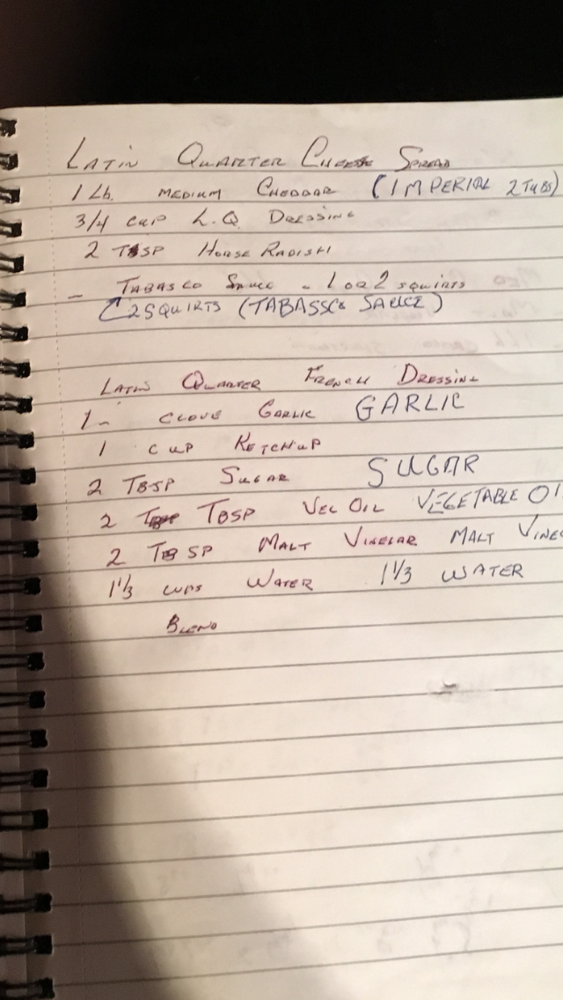
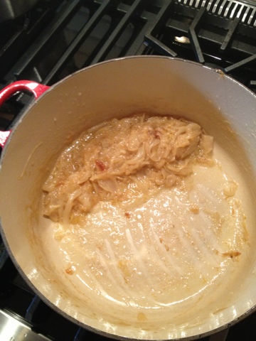

Choice Recipes
This book contains my favourite recipes, collected from various sources over time.
I have tried to remember to include the source whenever possible, but when in doubt, check out Dinner With Julie.
Conversions
Anchovy Paste
- 1/2 teaspoon of anchovy paste = 1 anchovy fillet
- Cook's Illustrated Notes
Altitude
- Calgary is at 3500 feet -> add 10 minutes processing time to boiling water canning (from sea level).
- Water boils at 212 F (sea level) 204 F (Calgary) - subtract 8 degrees from target temps.
- Hot water bath (pickle canning) no need to adjust time.
Other Conversions
| Ingredient | Ounces | Grams |
|---|---|---|
| 1 cup all-purpose flour | 5 | 142 |
| 1 cup cake flour | 4 | 113 |
| 1 cup whole wheat flour | 5 1/2 | 156 |
| 1 cup granulated (white) sugar | 7 | 198 |
| 1 cup packed brown sugar (light or dark) | 7 | 198 |
| 1 cup confectioners' sugar | 4 | 113 |
| 1 cup cocoa powder | 3 | 85 |
| Butter | Ounces | Grams |
|---|---|---|
| 4 tablespoons (1/2 stick, or 1/4 cup) | 2 | 57 |
| 8 tablespoons (1 stick, or 1/2 cup) | 4 | 113 |
| 16 tablespoons (2 sticks, or 1 cup) | 8 | 227 |
| Slow Cooker Time | Pressure Cooker Time |
|---|---|
| 10 hours on low / 5 hours on high | 30 minutes on high |
| 8 hours on low / 4 hours on high | 24 minutes on high |
| 6 hours on low / 3 hours on high | 18 minutes on high |
| 4 hours on low / 2 hours on high | 12 minutes on high |
| Infrared Thermometer on Pan | Temp |
|---|---|
| Pancake Griddle | 365 |
| Omelet | 250 |
| Outdoor Pizza Oven | 700 - 750 |
| Steak | 450 |
| Toasting Nuts & Breadcrumbs | 325 or less |
| Yogurt | 100 - 110 |
| Proof Bread | 75 |
Notes
- Cooks Illustrated Granola bars -> one bag of apricots
- https://www.youtube.com/watch?v=GUrA24dd7y
- https://www.americastestkitchen.com/recipes/9898-sichuan-braised-tofu-with-beef-mapo-tofu?sqn=5/dkjIG7O/4PogkK1zJ%2BjVzut9MbaYrXgWLoRLZjZxk%3D%0A
Sourdough Notes for Noobs
Here are the instructions I follow - there are a lot of good guides around, but this seems to work alright for me.
If I am going to be baking a lot, I leave my starter on the counter and refresh it every morning. 60 grams of starter 60 grams of flour (I use 30 g of whole wheat and 30 g of all purpose, but you can play with all sorts of flours, or go all AP) 60 grams of room temp water Mix it all up, store at room temp, discard or bake with the rest.
If I am not going to be baking, I put it in the fridge about 4 hours after feeding it. Once a week you can take it out for an hour or two, then feed it as above, let it sit for a few more hours then put it back in the fridge.
If you want to bake with it, I take it out 2 days before and feed it in the morning and again at night to perk it up.
There are lots of recipes you can use, but this is a good place to start: https://www.theperfectloaf.com/new-baker-start-here/
There are some great tips and timings for weekday sourdough and weekend bakes.
I usually halve the recipes to make 1 loaf at a time.
Canning Calendar
2018
| Date | Weight | Yield | Description | Notes |
|---|---|---|---|---|
| Tuesday Aug 21 | 5 lbs | Dill Pickles | Ready September 28 | |
| Wednesday Aug 22 | 20 lbs | 5 Litres | Whole tomatoes | Roma |
| Saturday Aug 25 | 8 lbs | 2 Gallon Crock | Sour Dill Pickles | Start scumming on 28 Taste Sep 4 |
| Saturday Aug 25 | 12 lbs | 12 Litres | Dill Pickles | 2 X 1 L, 20 * 500 ml |
| Saturday Sept 1 | 45 lbs | 8 Litres | Tomato Sauce | 8 X 1 L |
| Saturday Sept 1 | 10 lbs | 5 Litres | Chili Sauce | 10 X 500 ml |
| Saturday Sept 1 | 25 lbs | 8 Litres | Whole Tomatoes | 8 X 1 L |
| Saturday Sept 8 | 1.5 Litres | Pickled Peppers | 2 X .5 L, 2 x .25 L |
2019
| Date | Weight | Yield | Description | Notes |
|---|---|---|---|---|
| Friday Aug 23 | 10 lbs | 3.5 Litres | Strawberry Jam | 8 X 250, 3 X 500 ml 2 boxes from Jungle Farms Made 3 batches at once. |
| Saturday Aug 31 | 10 lbs | 3.75 Litres | Strawberry Jam | 13 X 250, 1 X 500 2 boxes from Jungle Farms Made 3 batches at once. |
| Sunday Sept 1 | 10 lbs | 9.75 Litres | Dill Pickles | 9 X 750, 6 X 500 Needed twice the amount of brine from Canning Kitchen. |
| Sunday Sept 1 | 6 lbs | 4 Litres | Bread & Butter Pickles | 8 X 500 Needed 2.5 times the amount of brine from Canning Kitchen. |
| Sunday Sept 1 | 4 lbs | 2 Gallon Crock | Sour Dill Pickles | Start Scumming on 3rd Taste Sep 9 |
| Sunday Sept 22 | 80 lbs | 33 Litres | Tomatoes | 10 pounds chili sauce 10 pounds fire roasted 60 pounds whole canned |
- Used the Canning Kitchen Dill recipe with pickle crisp.
- Used the Canning Kitchen Bread and Butter recipe without pickle crisp.
- Pickles should be ready in October
- Tomatoes: 26 litres of tomatoes, 2.5 litres of fire roasted and 4.5 litres of chili sauce.
- 2 Tbs of lemon juice per Litre jar or tomatoes.
- 55 minutes to process 1 Litre jars, 45 minutes for pint jars.
Jar Inventory
Wide Mouth
| 1 L | 750 ml | 500 ml | 250 ml | Lids | Bands |
|---|---|---|---|---|---|
| 6 | 9 | 5 | 17 | 24 |
- 750s have rings and lids on them
Standard Mouth
| 1 L | 750 ml | 500 ml | 250 ml | Lids | Bands |
|---|---|---|---|---|---|
| 14 | 18 |
- 5 are green
- 2 lb bag of pickling salt
Canning Inventory
| Description | Date | 250 ml | 500 ml | 750 ml | 1 L |
|---|---|---|---|---|---|
| Pickled Beets | Sep 11, 2012 | 2 | 1 | ||
| Pickled Peppers | Sep 9. 2018 | 1 | 1 | ||
| Honey | Sep 2017 | 6 | 3 | ||
| Saskatoonberry Jam | 2017 | 3 | |||
| Cherry Jam | 2017 | 1 | |||
| Strawberry Jam | Aug 23, 2019 | 2 | |||
| Strawberry Jam | Aug 31, 2019 | 8 | |||
| Dill Pickles | Aug 21, 2018 | 12 | |||
| Dill Pickles | Sep 1, 2019 | 2 | 9 | ||
| Bread & Butter Pickles | Sep 1, 2019 | 2 | |||
| Chili Sauce | Sep 1, 2018 | 1 | |||
| Chili Sauce | Sep 22, 2019 | 9 | |||
| Fire Roasted Tomatoes | Sep 22, 2019 | 3 | |||
| Whole Tomatoes | Sep 1, 2018 | 3 | |||
| Whole Tomatoes | Sep 22, 2019 | 9 | 12 |
2020
- Canning at home, backyard ripped up
| Date | Weight | Yield | Description | Notes |
|---|---|---|---|---|
| Saturday Sept 5 | 20 lbs | 6 Litres | Chili Sauce | 12 X 500 Double batch of Marilyn's recipe. Got excellent tomatoes at DJs (20 pounds) |
| Saturday Sept 5 | 4 lbs | 5.75 Litres | Dill Pickles | 7 X 750, 1 X 500 Sames recipe as last year. Cukes from DJs. |
| Saturday Sept 5 | 6 lbs | 4 Litres | Breand and Butter Pickles | 8 X 500 Same recipe as last year. |
| Monday Sept 7 | 2 lbs | 1 Litre | Pickled Golden Beets | 2 X 500 Traditional Pickled Beet Recipe (Canning Kitchen) |
| Monday Sept 7 | 4 lbs | 2 Litre | Pickled Hot Cherry Bomb Peppers | 4 X 500 |
| Sunday Sept 13 | 5 lbs | 3 Litres | Pickled Golden Beets | 6 X 500 Used Foolproof Preserving recipe with Ginger and Star Anise |
2021
- Canning at home, cukes are early this year
- Got 20 lbs => first filled every widemouth 750mL & 500mL jar I had, plus 4 1Litre jars. Made the rest into sour dills.
- Used the Dill Pickles recipe (updated the brine amounts to be more realistic)
- Made 10 lbs day one (Saturday) finished the rest the next day.
- Approx 8 heads of garlic and 2 large bunches of dill.
- Sour Dills:
- Weren't sour enough so let sit another week.
- Likely used too much garlic and chili peppers - spice takes away from sourness.
- Got 2 litres - strained brine and put in fridge, Aug 23
- Tomato Sauce:
- 30 pounds of tomatoes - 10 pounds Roma, 20 pounds field
- Used Totes to wash, big canning and stock pots to cook toms, medium brewing vessel to catch sauce.
- Used a new sauce strainer
- Cooked tomatoes for 5 minutes, then processed through strainer - about 8 litres
- Too watery - cooked down until about 6 litres - almost 2 hours
- I used this method, but only used 1 big pot
- try the 4 next time.
- Canned - processed 50 minutes
- Just try Roma tomatoes next year
| Date | Weight | Yield | Description | Notes |
|---|---|---|---|---|
| Sunday Aug 8 | 16 lbs | 16.25 litres | Dill Pickles | 4 1Litre, 9 750mL, 11 * 500 mL |
| Sunday Aug 8 | 4 lbs | 2 Gallon Crock, 2 litres in the end | Sour Dill Pickles | Start Scumming on 10th Taste Aug 16 Not sour enough, Let sit until Aug 23 |
| Saturday Sep 18 | 10 lbs | 9 pints, 4.5 litres | Chili Sauce | Marilyn's regular recipe Got tomatoes at DJ market |
| Saturday Sep 18 | 30 lbs | 6 litres | Tomato Sauce | Used combo of Youtube and DIY Cookbook Summer Sauce |
2022
- July 8: Strawberry Jam
- Purchased two flats at BC joint in the Farmer's Market. They said 15 pounds each, but not quite.
- Did 7 batches of recipe - 3 pounds each. 21 pounds into Jam, and a little over 2 pounds for eating.
- Berries were quite deep red all the way through - now packed with flavour.
| Date | Weight | Yield | Description | Notes |
|---|---|---|---|---|
| Friday July 8 | 21 lbs | 16 pints | Strawberry Jam | 10 1 Pint, 12 250 mL |
2023
| Date | Weight | Yield | Description | Notes |
|---|---|---|---|---|
| Monday July 17 | 10 lbs (2 * 8 quart baskets) | 3.5 Litres | Strawberry Jam | 3 1 Pint, 8 250 ml. Did it in 2 batches. |
| Saturday August 13 | 20 lbs | 15.25 Litres | Dill Pickles | 5 1L, 9 750 ml, 7 * 500 ml. Quadrupled the brine, but only needed a double batch. |
Equipment
Nespresso - Gran Maestria
Descaling
- Turn machine off and set espresso button to 4 and lungo button to 1.
- Open and close the lever to eject the capsule.
- Empty drip tray and used capsule container
- To enter descaling mode press the espresso button while turning the machine on.
- Fill water tank with 2 Nespresso liquid descaling agents and the rest with water.
- Place a cup on cup heater and press down on 3 rips to start descaling. Hold down until drip tray full, then empty. Repeat until middle light stops blinking and right one starts.
- Place a container (min 1.5L) below coffee outlet.
- Press lungo button to start descaling coffee outlet.
- A mix of start and stop operations will occur. Do not touch machine during this operation.
- Once done (middle and right light will stop blinking and left will start), empty and rinse drip tray, capsule container and water tank. Fill up water tank with drinking water.
- Turn lungo dial to 2 for rinse mode.
- Repeat step 6 one more time to rinse cup heater system. Make sure to rinse cup afterwards to get rid of any descaling solution.
- Replace empty container as per step 7 and press lungo button to rinse coffee outlet.
- Empty container and drip tray.
Smokey Mountain Cooker
Weber Smokey Mountain Cooker Manual
Appetizers
- Blue Cheese Dip
- Chicken Satay
- Corn Dip
- Latin Quarter Cheese Spread
- Nacho Cheese
- Shrimp Cocktail
- Thai Shrimp Skewers
Blue Cheese Dip
Ingredients
- 1 cup blue cheese crumbles (about 4.5 oz)
- 1/2 cup sour cream
- 1/4 cup mayonnaise
- 1 tbsp buttermilk (you can get away with milk)
- 1 tbsp freshly squeezed lemon juice
- 1/4 tsp salt
- 1/8 tsp pepper
Directions
- Mix all ingredients together in a bowl, preferably a couple hours before you want to serve the dip.
- Store in the refrigerator until ready to use.
Notes
- This dip will keep in the refrigerator for approximately one week.
- Makes 1.5 cups of dip.
Chicken Satay
Dinner With Julie - Chicken Satay With Peanut Sauce
Ingredients
- 1 1/2 lbs. skinless, boneless chicken breasts or thighs, or pork tenderloin (1-2), cut into strips
- 1/2-1 cup plain yogurt or buttermilk
- 2 garlic cloves, crushed
- 1 Tbsp. grated fresh ginger
- 2 Tbsp. soy sauce
- 1 Tbsp. honey or brown sugar
- 2 tsp. curry paste or powder
Directions
- Cut uniform strips and place in a bag with the marinade.
- Refrigeate for at least an hour or overnight (or freeze for up to 4 months)
- Skewer, grill and serve with peanut sauce.
Peanut Sauce
Ingredients
- 1/3 cup peanut butter
- 2 Tbsp. soy sauce
- 2 Tbsp. brown sugar or honey
- 2 Tbsp. rice vinegar or lime juice
- 1 garlic clove, crushed
- 1-2 tsp. grated fresh ginger
- 1 tsp. sesame oil (optional)
- 1/4 – 1/2 tsp. curry paste (optional)
- water or coconut milk, to thin it out
Directions
- Combine all the ingredients in a blender or jar and whiz, whisk or shake until smooth.
Corn Dip
Ingredients
- 3 (11-12oz) cans of sweet corn
- 7 oz can of chiles (drained)
- 1/2- 3/4 cup of green onions, chopped
- 1 cup sour cream
- 1 cup mayonnaise
- 1/2 tsp garlic powder
- pepper to taste
- 8-10 oz cheddar cheese, shredded
Directions
- Mix all. Refrigerate for a few hours. Serve with tortilla or corn chips.
Latin Quarter Cheese Spread
2023: Used Kozlik's X-Hot Horseradish from the Cookbook Company

Spread
- 1 lb Medium Cheddar (Imperial 2 Tubs - room temp)
- 3/4 Cup Latin Quarter Dressing
- 2 Tbsp Horse Radish
- 2 Squirts Tabasco Sauce
- Process until smooth
Latin Quarter Dressing
- 1 Clove Garlic
- 1 Cup Ketchup
- 2 Tbsp Sugar
- 2 Tbsp Veg Oil
- 2 Tbsp Malt Vinegar
- 1 1/3 Cups Water
- Blend
Nacho Cheese
chrisyoungcooks on Instagram Alka Seltzer leaves Sodium Citrate behind after the fizzy reaction, which is what helps cheese melt.
Ingredients
- 6 oz Cheese (favourite), grated.
- 3 flavour free, aspirin free (extra strength) Alka Seltzer Tablets
- 6 tsp (10 g, 2 tsp per tablet) vinegar
- Optional add ins like chiles
- Will scale - just keep ratio of cheese to tablets & vinegar.
Directions
- Combine vinegar and Alka Seltzer and let react until fizzing stops.
- Add Alka Seltzer mix to a pot, stir in cheese over low - medium heat.
- Adjust consistency with water.
- Will store in fridge for weeks.
Shrimp Cocktail
Michael Smith - Shrimp Cocktail
Ingredients
3 c water 1 c really good white wine 1 lemon, zest and juice 1 onion, thinly sliced 2 garlic cloves, thinly sliced 2 bay leaves 2 t sea salt 1 lb large shrimp, shells on, thawed but cold
Directions
- Pour the water and wine into a saucepan over medium high heat. Add the lemon, onion, garlic, bay leaf and salt. Bring the works to a full simmer and continue cooking for a few minutes so the flavours can build.
- Add the shrimp, stir, cover with a tight-fitting lid, turn off the heat and rest for 10 minutes.
- Remove the shrimp and set aside to cool further.
Thai Shrimp Skewers
Ingredients
- Whack of nice big shrimp, thawed.
- Free form:
- Lime Juice
- Sriracha
- Ketchup
- Sweet Thai Chili Sauce
- 1/4 cup sesame oil
- 1/4 cup canola oil
- 1/4 cup soya sauce
Directions
- Skewer shrimp
- 10 minutes before ready to grill, pour 1/2 to 2/3 of the marinade over the shrimp.
- Grill on medium high heat, brushing the remaining marinade on while grilling.
- Serve with peanut sauce.
Beverages
- Agave Simple Syrup
- Breakfast Smoothie
- Cold Brew Coffee
- French Press Coffee
- Irish Cream
- Paloma
- Percolator Coffee
Agave Simple Syrup
Ingredients
- 100 g agave syrup
- 64 g water
Breakfast Smoothie
[Alton Brown]
Main gist: 8 oz liquid, 16 oz fruit
Ingredients
- 4 oz milk or yogurt
- 4 oz Acai or pomegranate juice
- 1 frozen banana (4 oz)
- 4 oz frozen strawberries
- 4 oz frozen blueberries
- 4 oz frozen peaches
Directions
- Place all ingredients in a bag or carafe of blender and refrigerate overnight for fruit to thaw.
- Slowly turn up speed to medium until you achieve a vortex.
- Blend for 1 minute, turn to max and blend for another minute.
Cold Brewed Coffee in French Press
Directions
- Most cold brew coffee recipes use a 7:1 water to coffee ratio. In other words, for every liter of water you’re going to use about 140 grams of coffee.
- Really coarse grind, add water and stir.
- With this corse of a grind, the coffee should be allowed to steep for 12 hours at room temperature. If you want to slow down the process, (i.e. not wake up at 4 am to decant cold brew) you can steep it in the refrigerator to add a few hours. Put the lid back on the French press, but be careful not to plunge it.
- Decant into mason jar.
- Pour through a rinsed filter before serving.
French Press Coffee
Ratios
- 1 : 12 (coarse ground coffee : water)
- 30 g of beans : 354 g of water (tried - pretty good, made one red mug)
- 42 g of beans : 504 g of water
- Cabin has a 4 cup press
- ATK : 2 Tbs / 6 oz of water
Directions
- Bring water to a boil and let sit two minutes.
- Measure coffee by weight into French Press.
- Tare the scale and measure amount of water.
- Stir, and place lid on beaker to keep things warm. Let steep for 5:00
- For a full bodied final result use the spoon to gently break up the crust on top and remove the floating grounds that remain.
- Plunge.
Irish Cream
[Dinner With Julie]
Ingredients
- 1 can sweetened condensed milk
- That empty can filled with whisky of your choice
- 1/2 a can of whipping cream
- 1 Tbsp instant coffee or leftover coffee
- 1 Tbsp cocoa
- 2 Tbsp honey
- 1 Tbsp vanilla
- 1 tsp almond extract
Directions
- Blend everything in a blender.
- Store in the fridge for up to 3 months. Shake before serving.
Paloma
Ingredients
- 1/2 oz lime juice
- 1 oz grapefruit juice
- 1/2 oz simple syrup
- 2 oz tequila (blanco - not too $$)
Directions
- Shake with ice in a shaker
- Pour in a salted rim glass and top with 3 oz or so of Grapefruit Soda (Squirt)
Percolator Coffee
- 8 cups of water
- 8 Heaping Tbs of coarse ground coffee (max grind on 8 for B&D grinder)
- Percolate for 8 mins, cool for 1.
Bread
- Bagels
- Corn Tortillas
- Daily Sourdough
- Easy Biscuits
- English Muffins
- Four Small Loaves
- Gravity Cheese Biscuits
- Naan
- No-Knead Bread
- Parker House Rolls
- Perfect Loaf Sourdough
- Sandwich Bread
- Sesame Buns
- Sourdough Experiment
- Tartine Bread Sourdough
- Weeknight Sourdough
Bagels
(Makes a dozen)
Ingredients
- 3 1/2 cups flour
- 2 (1/4 oz) packages active dry yeast
- 1 1/2 tsp sea salt
- 1 1/4 cups warm water
- 1/2 cup honey, divided drizzle of vegetable oil
- 1 egg yolk beaten with 1 Tbsp water, for egg wash
- 1/4 cup sesame or poppy seeds
Directions
- In a stand mixer fitted with the dough hook, combine the flour, yeast and salt. Slowly add the water and ¼ cup honey. Knead on a low setting for 5 minutes, until the dough comes away from the sides and a soft, smooth ball forms.
- Lightly oil a medium bowl, and place the dough ball inside, turning it over to make sure it’s fully coated in oil. Cover with a damp tea towel and set aside in a warm place for 30 minutes.
- Lightly flour a work surface and roll the dough into a long snake, then cut into 12 equal pieces. Roll each piece into a rope about 8 9 inches long. Pinch the ends together, then roll with the palm of your hand to seal the ends and form a bracelet— a bagel bracelet. Cover the bagels with a tea towel and let them rest on the floured surface for 15 minutes.
- Place an oven rack on the lowest position and preheat the oven to 450°F. Line two baking sheets with parchment paper.
- Bring a large pot of water (at least 10 cups) to a boil and add the remaining ¼ cup honey. Lower the heat to a simmer, then add four bagels at a time, simmering for two minutes, flipping each one over, and simmering for two minutes more. Remove the bagels and place on the prepared baking sheets. Repeat with two more batches of four bagels at a time.
- Divide the bagels equally between the prepared baking sheets. Brush with egg wash and sprinkle each bagel with some sesame or poppy seeds (or place the seeds on a plate and gently press the bagels, one at a time, into the seeds).
- Bake one sheet at a time for 18–20 minutes, or until cooked through and deeply golden brown. Let cool, then slice and schmear! They also freeze well.
Corn Tortillas
Ingredients
- About 1 cup masa harina to 1 cup of liquid - wet but not sticky
- Use warm water
- A little softer than play dough
- 2 cups should make about 20 tortillas
Directions
- Mix dough, knead.
- Preheat pan to med high
- Let rest about 20 minutes covered with a damp towel.
- Golf ball sized portion, press.
- Cook 15 - 20 sec on each side
- Flip back to 1st side, and look for puff.
- Into a tortilla warmer to steam.
Daily Sourdough
Notes
- Hyrdation: w/f = %
- (257 + 49)/(388 + 49) = 70% Hydration
Ingredients
- 257 g room temp water
- 98 g starter (see levain below)
- 8 g salt
- 388 g bread flour
Directions
- Mix water and starter, add salt and stir.
- Add flour and mix until no dry patches.
- Cover annd let sit at room temp for 10 minutes.
- Knead for 1 minute, shape into a ball, place in bowl and cover at room temp for 30 minutes.
- Stretch and fold into square, then ball.
- Cover and bulk ferment for 6 hours.
- Preshpae into a ball and let rest uncovered for 10 minutes.
- Shape and into banneton - rest 1 1/2 hours onthe counter.
- Put it into the fridge overnight.
- Preheat oven to 430 for one hour.
- Cook covered for 20 minutes, uncovered for 30.
Direct Notes
The Starter (100% hydrated)
- Scrapings from the jar
- 55g Water
- 55g Flour
Main Dough
- 388g strong white bread flour
- 257g water
- 8g salt
- 98g starter
Directions
-
I feed my starter at 21:00 ready for the next day.
-
The next morning I add the water to a bowl and roughly dissolve the starter into it. It doesn’t need to be completely dissolved, a few bits are absolutely fine. I add the salt, give everything another quick stir before adding the flour.
I mix with a spoon again before bringing everything together into a rough dough with my hand. The dough doesn’t need to be smooth but I make sure there are no pockets of dry flour or flaky dough.
The dough has a 10-minute rest covered in the bowl, and then a 1 minute knead. After a 30-minute rest covered at room temperature, I turn the dough out and perform one set of stretch and folds (one giant lamination). I mist the worktop with water to stop the dough from sticking.
Shape the dough into a ball and leave it out, covered at room temperature to bulk ferment.
- About six hours later the dough has expanded to about 75% of its original size, I turn the dough out onto the work surface and give it a quick pre-shape.
After a ten-minute rest uncovered, I lightly dust the banneton and top of the dough with rice flour. The dough is shaped simply into a cylindrical piece of dough and the seam is squeezed together.
I place the dough into the banneton with the seam facing upwards. It sits out at room temperature for an hour and a half uncovered.
-
Once the dough is expanding and feels springy I pop it in the fridge uncovered to ferment overnight.
-
The next morning I score the dough and bake it on a baking stone in an oven that has been pre-heated to 220c / 430f.
The bread is baked covered with a large pot for the first 20 minutes and uncovered for a final 30 minutes. I don’t use any ice or water to create steam for this loaf. It bakes just fine without it.
Easy Biscuits
ATK: Easiest-Ever Biscuits, Cook's Annual 2020
Start pre-heating the oven before starting recipe
Ingredients
- 3 Cups (15 ounces) All Purpose Flour
- 4 teaspoons sugar
- 1 Tablespoon baking powder
- 1/4 teaspoon baking soda
- 1 1/4 teaspoons table salt
- 2 cups heavy cream
- 2 Tablespoons unsalted butter, melted (optional)
Directions
- Adjust rack to upper middle position and heat oven to 450 degrees. Line rimmed baking sheet with parchment paper.
- In medium bowl, whisk flour, sugar, baking powder, baking soda and salt. Microwave cream until warmed (95 - 100 degrees) 60 - 90 seconds.
- Stir cream into mix unitl soft, uniform dough forms.
- Spray 1/3 cup dry measuring cup with vegetable oil spray, and drop level scoops of batter 2 inches apart on prepared sheet. Respray measuring cup after every 3 or 4 scoops.
- Bake until GB&D, 10 - 12 minutes rotating sheet half way through.
- Brush hot biscuits with butter & serve warm.
- Store leftovers in a zipper-lock bag at room temp for 24 hours. Reheat in a 300 degree oven fo 10 minutes.
English Muffins
Cooks Illustrated - Cook It In Cast Iron
Ingredients
- Makes 12 Muffins
- 1 cup warm whole milk (110 degrees)
- 1/3 cup warm water (110 degrees)
- 3 tablespoons unsalted butter, melted
- 3 tablespoons honey
- 2 1/4 teaspoons instant or rapid-rise yeast
- 3 1/2 cups (19 1/4 ounces) bread flour, plus extra as needed
- 2 teaspoons salt
- 3/4 cup (3 3/4 ounces) cornmeal
Directions
- Whisk milk, water, melted butter, honey, and yeast together in 2-cup liquid measuring cup until yeast dissolves. Whisk flour and salt together in bowl of stand mixer. Using dough hook with mixer on low speed, slowly add milk mixture and mix until dough comes together, about 2 minutes. Increase speed to medium and continue to mix until dough is smooth and elastic, about 8 minutes. (If after 4 minutes dough is still very sticky, add 1 to 2 tablespoons extra flour; dough should clear sides of bowl but stick to bottom.)
- Transfer dough to lightly floured counter and knead by hand to form smooth, round ball, about 1 minute. Place dough in large, lightly greased bowl, cover tightly with greased plastic wrap, and let rise until doubled in size, 1 to 1 1/2 hours.
- Sprinkle 1/2 cup cornmeal in rimmed baking sheet. Transfer dough to clean counter and shape into 12-inch log. Divide log into 12 equal pieces and cover with greased plastic. Working with 1 piece of dough at a time (keep other pieces covered), round dough into smooth, taut balls. Arrange dough balls on prepared sheet, spaced about 1 1/2 inches apart. Cover dough balls with plastic and let rise until nearly doubled in size, 45 to 75 minutes.
- Adjust oven rack to lower-middle position and heat oven to 350 degrees. Line second rimmed baking sheet with parchment paper. Using greased metal spatula, press dough balls into flat, 3/4-inch-thick rounds (about 3 inches in diameter). Dust tops of muffins with remaining 1/4 cup cornmeal.
- Heat 12-inch cast-iron skillet over medium heat for 3 minutes. Place 4 muffins in skillet and cook until deep golden brown on first side, 1 to 3 minutes, occasionally pressing down on muffins with spatula to prevent doming.
- Flip muffins, reduce heat to medium-low, and continue to cook until well browned on second side, 1 to 2 minutes. Transfer muffins to parchment paper–lined baking sheet. Repeat with remaining muffins in 2 batches, wiping skillet clean before each batch; transfer to sheet.
- Bake until muffins are fully set and register 210 degrees, 15 to 20 minutes. Transfer muffins to wire rack and let cool for 20 minutes before splitting with fork and toasting. Serve. (Cooled, unsplit English muffins can be stored in zipper-lock bag for up to 2 days.)
Four Small Loaves
Youtube Needed to add more water to get the dough to come together - have adjusted weights. Got a better crust by not turning the oven down for the last 10 minutes.
Ingredients
- 1 c (236 grams) water
- 1/2 tsp yeast
- 2 1/2 c (312 grams) flour
- 1 tsp salt
Directions
- Mix water and yeast and stir to combine.
- Add flour and salt and mix until a shaggy dough forms.
- Cover and let rest for 30 minutes.
- Two sets of slap and folds, 30 minutes apart. Cover and let sit in refrigerator overnight.
- Pull from refrigerator the next day, set of folds and shape into a ball. Let rest covered at room temperature for 30 minutes.
- On a floured surface, fold dough in half and cut into four pieces. Flatten and roll into balls. Let rest for 10 minutes.
- Flatten, fold, press and pinch into a loaf shape. Place on parchment and cover with towel, let rise for 30 minutes.
- Dust with flour, score and bake covered at 450 for 20 minutes, then uncovered at 390 for 10 minutes.
Gravity Cheese Biscuits
[Cafe Gravity]
Ingredients
- 3 cups flour
- 1 Tbsp baking powder
- 1/2 teaspoon salt
- 2 cups whipping cream
- 1 cup grated old or extra-old cheddar or gouda, extra for sprinkling
Directions
- Preheat oven to 375.
- Mix all the ingredients by hand until the dough comes together. Add more cream if the dough appears to be dry.
- Knead for a few minutes on cuttting board then pat down into an inch thick circular cake.
- Cut with a round cutter or wedges / squares with a knife.
- Brush tops with more cream and sprinkle with cheese.
- Bake for 15 - 20 minutes until golden brown and delicious.
Naan
Ingredients
- 1/2 cup warm water
- 2 tsp. active dry yeast
- 1 tsp. sugar
- 2 1/2 cups all-purpose flour, plus extra for rolling
- 1/2 tsp. salt
- 1/4 cup canola oil
- 1/3 cup plain yogurt
- 1 large egg
- melted butter or oil, for frying
Directions
- In a large bowl, stir together the water, yeast and sugar and let stand for 5 minutes, until foamy. If it doesn't foam, the yeast is inactive; toss it out!
- Stir in the flour, salt, canola oil, yogurt and egg and stir, then knead until you have a soft, pliable dough. Cover with a tea towel and let rise until doubled in size; about an hour.
- Divide the dough into 6-8 pieces and on a lightly floured surface, roll out each piece into a thin circle or oval.
- Cook each naan in a nice hot skillet drizzled with oil (with a dab of butter too, if you like) until blistered and cooked, flipping as necessary. (When the surface has big blisters and is golden on the bottom, flip it over and cook until golden on the other side.
No-Knead Bread
Ingredients
- 3 cups of Flour
- 1 tsp Salt
- 1/3 tsp Active Dry Yeast
- 1 1/2 Cups + 2 Tablespoons Water
Directions
- Stir all dry ingredients together.
- Add water and form a shaggy dough.
- Cover and let sit 18 - 24 hours.
- The dough is ready when its surface is dotted with bubbles. Flour a work surface and place dough on it; sprinkle it with a little more flour and fold it over on itself once or twice, then roughly shape into a ball. Generously coat a cotton towel (not terry cloth) with flour; put dough seam side down on towel and dust with more flour. Fold it over the bread or cover with another cotton towel and let it sit for another hour or two.
- While the bread is resting, preheat the oven to 450°. Put a 6-8 quart heavy covered pot (cast iron, enamel, Pyrex or ceramic) in oven as it heats. When the dough is ready, carefully remove pot from oven. Slide your hand under towel and flip the dough over into the pot; it may look like a mess, but that’s OK. Cover and bake for 30 minutes, then remove the lid and bake another 10-15 minutes, until it’s nice and golden.
Almost No-Knead Bread
- Cook's Illustrated All-Time Best Bread Recipes
Ingredients
- 3 cups (15 ounces) all-purpose flour
- 1 1/2 teaspoons salt
- 1/4 teaspoon instant yeast
- 3/4 cup plus 2 Tablespoons water
- 6 Tablespoons mild lager
- 1 Tablespoon white vinegar
Directions
- Whisk flour, salt and yeast together in a large bowwl.
- Add water, beer and vinegar. Using rubber spatula, fold mixture, scraping up dry flour from bottom of bowl until shaggy dough forms.
- Cover with plastic and let sit at room temperature for 8 - 18 hours.
- Knead by hand 10 - 15 times, form into ball. Spray parchment with vegetable oil spray, place in 10 inch skillet, cover with plastic and let rise for 2 hours.
- 1/2 hour before baking, preheat oven to 425 and place empty dutch oven on the lowest rack.
- Bake loaf with lid on for 30 minutes. Remove lid and bake for another 30 minutes or until the loaf reaches 205 degrees.
Parker House Rolls
Dinner With Julie - Parker House Rolls
NOTES:
- Resting for 1 1/2 hours, bake for 20 mins.
Ingredients
- 1 pkg (2 tsp) active dry yeast
- 3 Tbsp sugar
- 1 cup milk, warmed
- 1/2 cup butter, melted (divided)
- 1 large egg
- 3 1/2 cups all-purpose flour
- 1 1/2 tsp fine salt
- flaky salt, for finishing (optional)
Directions
- In a large bowl, sprinkle the yeast over 1/4 cup warm water, along with a pinch of the sugar. Set it aside for a few minutes, to get foamy. Add the rest of the sugar to the yeast along with the milk, half the butter, egg, flour and salt and stir until the dough comes together. Knead for about 5 minutes, until the dough is smooth and elastic - it should still be quite tacky. (I do this in my stand mixer, with the dough hook.) Put it back in the bowl, cover with a tea towel and let rise for an hour or so, until doubled in size.
- Punch the dough down and divide it in half. Roll each out into an 8x12-inch rectangle. Brush all over with melted butter. Cut the rectangle in half lengthwise, then fold each half almost in half lengthwise, leaving about half an inch uncovered.
- Cut the dough crosswise in half, then in quarters, making 8 pieces. Arrange in a buttered, greased or parchment-lined 9x13-inch pan in four rows of four, with the long sides of the buns running along the long sides of the pan. (Once you do this once, you'll totally get the hang of it.) Cover with a tea towel and set aside for about half an hour, while you preheat the oven to 350F.
- Bake for 20 minutes, or until deep golden. Immediately brush the tops of the buns with the remaining butter while they're still warm - and if you like, sprinkle with coarse salt. Makes 16 buns.
Sourdough Bread
Final Dough Temperature
- Final Dough Temperature: 78 degrees
- WaterTemp = (FDT x 4) - (LevainTemp + FlourTemp + AmbientTemp)
- ex:
- WaterTemp = (78 x 4) - (75 + 70 + 75)
- WaterTemp = 92°F
Levain Build
| Weight | Ingedient | Percentage |
|---|---|---|
| 37 g | Starter | 50 % |
| 37 g | Whole Wheat Flour | 50 % |
| 37 g | AP Flour | 50 % |
| 74 g | Water | 100 % |
Dough Mix
1 Loaf
| Weight | Ingredient |
|---|---|
| 374 g | Bread Flour |
| 79.5 g | Whole Wheat Flour |
| 345.5 g | Water |
| 9 g | Fine Salt |
| 92 g | Levain |
2 Loaves
| Weight | Ingredient |
|---|---|
| 748 g | Bread Flour |
| 159 g | Whole Wheat Flour |
| 691 g | Water |
| 18 g | Fine Salt |
| 184 g | Levain |
Method
Levain - 8:00 a.m.
- Mix together everything called for in the “Levain Build” section above in a clean jar in the morning and store somewhere around 74-76°F (23-24°C) ambient for 5-6 hours. Keep an eye on how your levain is progressing during this time. When it’s ready to be used it will be expanded, bubbly on top & at the sides, and smell almost a little sour. The photo above is the state of my levain just before going into my dough mix at 1:00 p.m. below.
Autolyse – 12:00 p.m.
- NB. For 1 loaf, use 320 g of water, 2 loaves 641 g.
- Using your hands, mix all the flour and most of the water (reserve 50g water for later) called for in the “Dough Mix” section above in a bowl until all dry bits are hydrated. Cover the bowl and store somewhere warm (near your levain is convenient) for 1 hour. Note that this autolyse stage does not incorporate or use salt or the levain build in any way, they are two separate entities at this point that will be mixed together later in the process.
Mix – 1:00 p.m.
- At this point your autolyse is complete and your levain is ready. Add salt, reserved water, and levain to your already mixed flour & water and mix thoroughly. I like to spread everything on top of dough resting in the bowl and use my hand to pinch all the ingredients together. Transfer dough to a tub or thick-walled bowl for bulk fermentation.
- At this point use your instant-read thermometer to take the temperature of your dough to get your final dough temperature. If your FDT is below 78°F (25°C) next time use warmer water, and conversely, if it’s above 78°F (25°C) use cooler water.
Bulk Fermentation – 1:10 p.m. to 5:10 p.m.
- At 76-80°F (24-26°C) ambient temperature bulk fermentation should go for about 4 hours. Perform 3 sets of stretch and folds during bulk fermentation, spaced out by 30 minutes.
- Each set consists of 4 folds, one at the North, South, East and West sides. Wet your hands with a little water to prevent sticking and then lift up one side (North) of the dough with two hands. Stretch the dough up high enough just so that you can fold it completely over to the other side of the dough in the bowl. Rotate the bowl 180° and do the other side (South). Finish the other two sides (East and West) to complete the set. Let the dough rest 30 minutes, covered, between sets.
- After that third set of stretch and folds, let the dough rest the remainder of bulk fermentation. During this time we let the flour ferment further, aerating it (making it rise), strengthening it and developing flavor.
(Divide &) Preshape – 5:15 p.m.
- Lightly flour your work surface and dump out the dough. With your bench knife in one hand divide the dough into two halves. Lightly flour your other hand and using both the knife and your hand turn each half of dough on the counter while lightly pulling the dough towards you. This gentle turning and pulling motion will develop tension on the top of the dough forming a round circle.
- Let the dough rest for 25 minutes, uncovered.
Shape – 5:35 p.m.
- If you’re new to shaping bread dough, have a look at my Guide to Shaping a Boule (a round) in addition to the steps below. Or, if you’d like to shape this dough as a batard (an oval) instead of a boule, check out my batard shaping guide.
- Lightly flour the top of your dough rounds and the work surface. Working with one at a time, flip the round so the floured top is now down on the floured work surface.
- As seen in the image below, lightly flour your hands and grab the bottom of the round and stretch it lightly downward towards your body and then up and over about 2/3 the way to the top.
- Then, grab the left and right sides of the dough and stretch them away from each other, fold one side over toward the other and repeat with the other side.
- Then, grab the top of the circle and stretch away from your body and fold down to the bottom of the resting dough. You’ll now have a tight package that resembles a letter.
- Finally, flip, or roll down the dough so the seams are all on the bottom and using two hands cup the top part of the round and drag the dough gently towards your body. The angle of your hands will gently press the bottom of the dough on the counter creating tension, forming a skin on the top of the dough as you drag.
- After shaping, let the dough rest on the bench for a few minutes and then place seam-side-up into a towel-lined kitchen bowl that was lightly dusted with white rice flour.
Rest & Proof – 5:40 p.m. to 9:30 a.m. (next day)
- To prevent your dough from drying out overnight, place your bowls containing your shaped dough in plastic bags sealed shut with a rubber band. I will usually puff up the plastic bag around the bowl by opening it wide and then quickly closing the opening.
- Once covered, let the dough rest on the counter for 20 minutes. Then, retard in the refrigerator at 38°F (3°C) for 16 hours.
- During this time overall fermentation will slow, but (good) bacteria activity will continue, contributing to a more complex flavor and deeper crust coloring.
Bake – Next Morning: Preheat oven at 8:30 a.m., Bake at 9:30 a.m.
- Preheat your combo cooker or Dutch oven inside your oven for 1 hour at 500°F (260°C). If you’re using a combo cooker, place the shallow side face up on one side and the heavier, deep side, face down on the other.
- When you’re done preheating, take one of your plastic bag-wrapped loaves out of the fridge and unwrap it. Cut a piece of parchment paper so it fits over the top of your basket and place on a pizza peel. Invert the peel and parchment paper so they are resting on top of your basket containing your dough. Then flip the whole thing over. Remove the basket and your dough should be resting on the parchment.
- Score these loaves at a 90° angle between the razor blade and dough. If you want a more pronounced “ear” at each score line, lower the angle between the blade and the dough (so the blade is close to horizontal with the dough). I chose to do a “box” pattern. If using scissors, snip the dough a few times at a very shallow angle between the scissors and the dough, forming a set of ridges down the center of the dough.
- While wearing your oven mitt, and with caution, pull out your shallow side of the combo cooker. Using your pizza peel, drag a corner of the parchment paper to slide your dough into the combo cooker. Place it back into the oven and cover the shallow side with the deep side to create a seal. This sealed environment helps trap the escaping steam from your dough to steam the exterior of the loaf as it bakes, encouraging maximal rise.
- Turn the oven down to 475°F (246°C) and bake for 20 minutes. After 20 minutes, use your oven mitt to very carefully remove the top of the combo cooker. Leave the large side of the combo cooker in the oven to the side of the shallow part of the cooker holding your dough. Close the door, turn the oven down to 450°F (232°C), and bake for 30 more minutes. If you are unsure if your bread is done, use your thermometer to test the internal temperature, it should register over 208°F (97°C).
- When done, carefully use your oven mitt to remove the bread from the combo cooker (I will grab a corner of the parchment paper and drag the cooked bread out of the cooker) and cool on a wire rack. Place the combo cooker back in the oven and bring the temperature back up to 500°F (260°C). Repeat for the second loaf.
- Wait 1-2 hours before slicing the bread (I know, it’s hard to do this) to ensure the interior is set.
- If you’re running into problems with baking in a Dutch oven, and have burned the bottom of your loaves, check out my guide on how to bake bread in a dutch oven for some fixes.
Another Loaf
https://www.theperfectloaf.com/best-sourdough-recipe/
Levain
- 30g Starter
- 30g Whole Wheat flour
- 30g White Flour
- 60g Water
Bread
- 406g Bread Flour
- 32g Whole Wheat Flour
- 352g Water (Add another 25 g if needed)
- 10g Salt
- 75g Levain
Directions
-
Levain – 9:00 a.m. Build the liquid levain in the morning and store somewhere warm around 77-80ºF ambient for 5-6 hours. Alternatively, you can build your levain in the evening the night before and leave out at cooler, room temperatures (around 72ºF) and it should be ready in 10-12 hours.
-
Autolyse – 12:30 p.m. Mix flour and water (reserve 50g water for the mix, later) very well in a bowl and cover. Ensure all dry flour is hydrated. Store near levain (we want the temperature of the dough to remain warm).
-
Mix, Step 1 – 2:00 p.m. Note that I split the mixing phase into two steps. For the first step scoop out the required amount of levain on top of your autolysed dough and using about 15g of the reserved water hand-mix the levain into the dough, so it’s incorporated very well. Wait 30 minutes before adding the salt in Step 2.
-
Mix, Step 2 – 2:30 p.m. 30 minutes later spread the salt on top of the dough and use the remaining water to help dissolve. If your dough is already extremely wet, and you’re getting worried, you don’t have to use all the remaining water. Just spread it out and mix well with your hand, the dough is wet enough already to work the salt thoroughly.
This dough does not require intensive mechanical mixing, we want to under-develop at mix time and build strength during bulk through fermentation and several sets of stretch and folds. After the salt is incorporated, perform folds for about 2-3 minutes in the bowl. Grab under one side, pull up and over to the other side, then rotate the bowl a bit and repeat. I do this probably 30 times or so (it goes fast and easy).
In the end, the dough should still be shaggy, but it will be a little more smooth and will slightly start to hold itself together more in the bowl. If you’re a fan of the slap & fold mixing technique I’ve described in the past, you can do this but be aware that at this hydration it is difficult. If you’re up to the challenge (I do it occasionally) dump the dough out and slap/fold for 3-6 until the dough starts to hold its shape on the counter. You won’t get a super smooth dough, even with slap/fold.
I find that the correct strength level of the dough at this point is important. You want the dough to be a little smoother after mixing, but not well developed. I know those are general terms, but try to remain observant of how the dough looks when you finish mixing and how it looks when you finish with bulk fermentation. If you find that by the end of bulk you can’t get the dough smooth & strong enough, next time mix a little bit longer to develop the dough a bit more before you start the bulk. Alternatively, you could add another set of stretch/fold’s in bulk.
Transfer dough to a tub or thick-walled bowl for bulk fermentation.
- Bulk Fermentation – 2:45 p.m. At 78-82ºF ambient temperature bulk fermentation should go for about 4 hours. Perform six sets of stretch and folds during the bulk. The first three are at 15-minute intervals, and the last three are at 30-minute intervals. After these folds (2 hours and 15 minutes have gone by) let the dough rest for the remainder of your bulk fermentation (1 hour and 45 minutes).
I stretch and fold more vigorously at the beginning of bulk than usual since the dough is extraordinarily slack and extensible (due to the high hydration of this recipe). Pick up one side of the dough with both hands and pull it up, just before tearing, and fold it over to the other side. Rotate your container and repeat 4 or 5 times. That is one set.
Below you can see my dough halfway through bulk, after about 2 hours. No significant rise as of yet, but the edges are beginning to dome, and the texture of the dough is smoothing out slightly. We still have several more folds to do and more strength to build.
It is essential that the dough is kept near 80ºF as much as possible (minor fluctuations up and down are ok). If temperatures dip down too far you might have to extend the duration of bulk fermentation to compensate, and vice versa. Use your judgment, the signs described below, and be flexible.
At the end of bulk, your dough should look very gassy, some bubbles here and there and the edges where the dough meets the bowl should be slightly domed. You can see all these signs in the image below. When you gently shake the bowl, the entire mass jiggles from side to side — very alive. You’ll also notice that compared with the photo at the beginning of bulk, the dough is smoother and holds its edges, folds, and creases more readily (most of the bumps and ridges you see are due to trapped gasses from fermentation).
-
Divide & Preshape – 6:45 p.m. Divide the dough into two masses; each scaled at 900 grams (essentially the dough mass in half). Lightly shape each mass into a round and let rest for 30 minutes uncovered. Act quickly when dealing with this dough and rely heavily on your bench knife. I try to use my hands as little as possible when dealing with the dough at this point.
-
Shape – 7:15 p.m. Lightly flour the top of your dough rounds and flour the work surface. With this recipe use a little more flour on the surface than normal, the dough will be extremely sticky and wet. Flip each round and shape into a batard (see notes below) or boule, whatever your preference.
I prefer to shape these as batards, and my shaping method is as follows:
- Flip pre-shaped round
- Fold the bottom up to about halfway
- Fold the left side over to about 3/4 to the right
- Fold the right side over to cover left
- Stretch top up & away from the center and fold down to about half (you’ll now have a “letter”)
- Grab a little of the dough at the sides near the top and stretch it over the center, so the dough crosses. Imagine lacing up a shoe where you first grab your laces and cross them over
- Repeat three times from top to bottom (the result will look like a laced up shoe)
- Take the bottom and gently roll the dough up to the top and try to seal it slightly when done rolling
Alternatively, if the dough feels pretty strong, you could shape it by “cinching” up the dough. For more instruction on how to shape this dough as an oblong loaf, see my post on how to shape a batard (with video!).
After shaping, let rest on the bench for a few minutes and then place it into a banneton that I lightly dusted with white rice flour. You’ll see above my bannetons give the dough plenty of room to relax and expand in the fridge overnight. While this dough doesn’t rise quite as much as when I use Central Milling’s T70 flour, you still want the loaf to have plenty of room. If your proofing container is on the small side, and you find your dough almost spilling over the edges, it might be time for a larger basket.
-
Rest & Proof – 7:25 p.m. Cover your banneton with plastic and let the dough rest on the counter for 20 minutes. Then, retard in the refrigerator at 38ºF for 15-16 hours.
-
Bake – Next Morning: Preheat oven at 9:00 a.m., Bake at 10:30 a.m. Preheat oven for 1.5 hours at 500ºF. Remove the dough from the fridge (there’s no need to let the dough come to room temperature) and uncover. Bake for 20 minutes at 500ºF with steam, and an additional 25-35 minutes at 450ºF, until done to your liking. I like to bake rather dark, so I sometimes extend this second half of baking until I get the crust I’m looking for.
Tartine Bread
https://www.youtube.com/watch?v=hNzJLP61nnQ
12 Hour Levain
| Weight | Ingredient |
|---|---|
| 50 g | Starter |
| 40 g | Whole Wheat Flour |
| 40 g | White Flour |
| 80 g | Water (85 degrees) |
Dough
| Weight | Ingredient |
|---|---|
| 900 g | Unbleached Bread Flour |
| 100 g | Whole Wheat Flour |
| 750 g | Water (85 Degrees) |
| 20 g | Kosher Salt |
| All | Levain |
- Make the Levain 12 hours before you want to start mixing dough.
- Combine 700 g of water, levain and flour and mix until shaggy dough. Let autolyse for 20 - 40 minutes.
- Stir salt into 50 g of water and mix into dough.
- 2 Hour Bulk Rise - fold every 25 minutes:
- First 3 folds: 8 folds.
- Folds 4 & 5: Coil folds.
- Let rest 10 minutes after last fold.
- Divide and preshape - dust and cover with plastic and bench rest for 20-30 minutes.
- Shape, wrap and refrigerate from 3 - 12 hours.
- Preheat dutch oven at 500 degrees - 20 minutes covered, lower heat to 450 and cook until browned - 20 - 30 minutes.
Single Loaf
12 Hour Levain
| Weight | Ingredient |
|---|---|
| 20 g | Starter |
| 16 g | Whole Wheat Flour |
| 16 g | White Flour |
| 32 g | Water (85 degrees) |
Dough
| Weight | Ingredient |
|---|---|
| 360 g | Unbleached Bread Flour |
| 40 g | Whole Wheat Flour |
| 300 g | Total Water (85 Degrees) |
| 280 g | Water (Autolyse) |
| 8 g | Kosher Salt |
| 84 g | Levain |
Sandwich Bread
Dinner With Julie - Sandwich Bread
Tim's Variation
Ingredients
- 2 1/2 cups warm water
- 1 Tbsp. active dry yeast
- 1 Tbsp. sugar
- 3 cups all-purpose flour
- 3 cups multi-grain flour
- 2 tsp. salt
- 1/4 cup butter, softened
Directions
- Pour 1/2 cup of the water into a bowl (preferably that of a stand mixer) and stir in the yeast and sugar. Let sit for 5 minutes, unit foamy. (If the yeast doesn't do anything, toss it out and buy fresh yeast.)
- Add the rest of the water and about half of the flour. Stir until well blended. Add the rest of the flour, the salt and butter and stir with the dough hook (or by hand) until well combined and shaggy. Continue to knead (I let the dough hook go for about 8 minutes, poking it down once in awhile) until it's smooth and elastic. You could do this by hand, too. If you used the dough hook, turn the dough out onto the countertop and knead a few times to make sure it's evenly smooth. Doesn't it feel great?
- Shape it into a ball and put it back into the bowl. Cover with a tea towel and let it sit for 1 - 1 1/2 hours, until it's doubled in size.
- Butter two 4"x8" loaf pans. Punch the dough down (love that part!) and pat each piece into a rectangle that's about 9"x12" - or a bit bigger than a standard piece of paper.
- Starting at a short end, fold it in thirds, like a letter. Place seam side down in the loaf pans, tucking the ends in. Cover with the tea towel again and leave them for an hour, until they puff right up out of the pan.
- Preheat the oven to 375°F and put the rack in the middle of the oven. Bake for 30-35 minutes, until the loaves are honey brown. Immediately turn the loaves out of their pans and onto a rack to cool.
Timing
- Assembly: 15 minutes
- Rest: 2 1/2 hours
- Bake 1/2 hour
- Total: 3.25 hours
For Freezing:
- Add twice as much yeast
- Let the bread go through its first rise, as most yeast bread goes through two rises. Allow the bread to rise in a greased bowl as per recipe instructions.
- After the first rise, punch down the dough and knead. Then, shape the bread dough into loaves or one single loaf.
- Place the loaf (or loaves) in a greased bread pan and cover with a greased plastic wrap to prevent sticking. This also allows the dough loaves to hold their shape when frozen.
- Place bread pans in the freezer and let the dough freeze for about 10 hours.
- After 10 hours, remove the bread dough from the pans. Then, wrap it in plastic wrap and place it in a resealable plastic freezer bag.
- Date the bag(s) of dough loaves and place in the freezer immediately. Your dough can be frozen for up to four weeks.
To Bake:
- Thaw, covered, in greased loaf pan in the refrigerator overnight.
- Cover and let it rise in a warm place until doubled (this is the second rise), which will take longer than dough that has not been frozen.
- Bake as directed.
One Loaf
Ingredients
- 1 1/4 cups warm water
- 1/2 Tbs yeast
- 1/2 Tbs sugar
- 3 cups all purpose flour
- 1 tsp salt
- 2 Tbs buttter, softened
Directions
- Same as above
Sesame Buns
Do not use traditional yeast. Warming the milk slightly helped with rising.
Ingredients
- 12.5 ounces (2 1/2 cups) all-purpose flour
- 8 ounces heavy cream
- 3 eggs, divided
- 1 teaspoon instant yeast
- 1 1/2 teaspoons kosher salt (or 3/4 teaspoon table salt)
- 3 tablespoons sugar
- 1/2 cup sesame seeds
- Coarse sea salt
Directions
- Combine flour, cream, 2 eggs, yeast, salt, and sugar in the bowl of a food processor. Process until a ball of dough that rides around the blade is formed, about 45 seconds. Dough will be very sticky. Alternatively, form dough in a stand mixer fitted with a paddle attachment by adding ingredients and mixing on medium speed until a homogenous dough comes together.
- Transfer dough to a large mixing bowl, cover tightly with plastic wrap, and let rise at room temperature until about 1 1/2 times its original size, about 4 hours.
- Lightly flour dough and transfer to a floured work surface. Form into a large ball then, using a bench scraper or sharp knife, divide the ball into 6 even pieces. Using lightly floured hands, form each piece into a ball. Transfer dough balls to a parchment-lined rimmed baking sheet, tucking the seam underneath. Cover with plastic wrap weighted down with a kitchen towel and set aside at room temperature for 1 hour.
- Meanwhile, adjust oven rack to center position and preheat oven to 450°F (230°C). When ready to bake, beat remaining egg with 1 tablespoon of water. Brush egg mixture on top of each bun until evenly coated. Sprinkle generously with sesame seeds and lightly sprinkle with coarse salt. Bake until deep golden brown, 12 to 15 minutes. Remove from oven, transfer buns to a wire cooling rack, and let cool completely before using.
Storage
- The buns can be stored in a plastic or paper bag in the refrigerator for up to 1 week. Refresh in a warm oven or toaster before using.
Sourdough Experiment
Starters
- Original Jan 11 2021 starter, 60g starter, 60g water, 60g flour (50/50 bread/whole wheat)
- Mark Hart: 50g 110 degree water, 50g bread flour, 1/2 tsp diastatic malt powder.
- Mark Hart: 50g 110 degree water, 50g all purpose flour, 1/2 tsp diastatic malt powder.
- Try to keep at 90 degrees.
| Day 1 | Kept at 90 degrees most of the day (proof feature) | Result |
|---|---|---|
| My Starter | 60g starter, 60g 110degree water, 60 g sourdough blend (50/50) | Was dormant, got bubbly, rose a little |
| Bread Flour | 50g 110 degree water, 50g bread flour, 1/2 tsp diastatic malt powder | Got little bubbles, seemed a little tighter |
| AP Flour | 50g 110 degree water, 50g all purpose flour, 1/2 tsp diastatic malt powder | Got little bubles, seemd a bit looser |
| Day 2 | Trying to keep at 90 degrees all day | Result |
|---|---|---|
| My Starter | 60g starter, 60g 110degree water, 60 g sourdough blend (50/50) | Kinda back to life |
| Bread Flour | 60g 110 degree water, 60g bread flour, 1/2 tsp diastatic malt powder | Rose about hafway |
| AP Flour | 50g 110 degree water, 50g all purpose flour, 1/2 tsp diastatic malt powder | Not much rise |
| Day 3 | Trying to keep at 90 degrees all day | Result |
|---|---|---|
| My Starter | 60g starter, 60g 110degree water, 60 g sourdough blend (50/50) | Back to Life |
| Bread Flour | Left alone | |
| AP Flour | Left alone |
| Day 4 | Trying to keep at 90 degrees all day | Result |
|---|---|---|
| My Starter | 60g starter, 60g 110degree water, 60 g sourdough blend (50/50) | Back to Life |
| Bread Flour | Teaspoon of starter, 100g water, 100g flour | Good rise, bubbly |
| AP Flour | Discarded |
Scratchings Method
https://www.youtube.com/watch?v=xBvvlcdO93I
- Teaspoon of starter to a jam jar, along with 55 grams of water and 55 grams of strong bread flour.
- Feed starter at 9 pm, ready to bake at 6:30 am
- 750g Dough:
- 98g starter
- 257g water
- 8g sea salt
- 388g strong bread flour
- Rough dough - relax 5 - 10 mins.
- Knead about a minute - bring to ball, back into ball, cover and rest 30 minutes
- Stretch and fold - shape into ball - bulk ferment at room temperature for 6 hours
- Preshape and let rest on counter for 10 minutes
- Shape and into banneton - leave uncovered at room temp for 1.5 hours
- Put into fridge overnight
- Preheat oven for an hour 430 degrees
- Bake covered for 20 minutes
- Uncover and bake for 30 more minutes
- Profit
Tartine Bread
https://www.youtube.com/watch?v=hNzJLP61nnQ
Three Small Loaves
12 Hour Levain
| Weight | Ingredient | % |
|---|---|---|
| 50 g | Starter | 62.5 |
| 40 g | Whole Wheat Flour | 50 |
| 40 g | White Flour | 50 |
| 80 g | Water (85 degrees) | 100 |
Dough
| Weight | Ingredient | % |
|---|---|---|
| 900 g | Unbleached Bread Flour | 90 |
| 100 g | Whole Wheat Flour | 10 |
| 750 g | Total Water (85 Degrees) | 75 |
| 700 g | Water for Autolyse | 93.3 |
| 50 g | Water for Salt | 6.7 |
| 20 g | Kosher Salt | 2 |
| 210 g | Levain | 21 |
Two Good Sized Loaves
12 Hour Levain
| Weight | Ingredient | % |
|---|---|---|
| 40 g | Starter | 62.5 |
| 32 g | Whole Wheat Flour | 50 |
| 32 g | White Flour | 50 |
| 64 g | Water (85 degrees) | 100 |
Dough
| Weight | Ingredient | % |
|---|---|---|
| 720 g | Unbleached Bread Flour | 90 |
| 80 g | Whole Wheat Flour | 10 |
| 600 g | Total Water (85 Degrees) | 75 |
| 560 g | Water for Autolyse | 93.3 |
| 40 g | Water for Salt | 6.7 |
| 16 g | Kosher Salt | 2 |
| 168 g | Levain | 21 |
Single Loaf
12 Hour Levain
| Weight | Ingredient | % |
|---|---|---|
| 20 g | Starter | 62.5 |
| 16 g | Whole Wheat Flour | 50 |
| 16 g | White Flour | 50 |
| 32 g | Water (85 degrees) | 100 |
Dough
| Weight | Ingredient | % |
|---|---|---|
| 360 g | Unbleached Bread Flour | 90 |
| 40 g | Whole Wheat Flour | 10 |
| 300 g | Total Water (85 Degrees) | 75 |
| 280 g | Water for Autolyse | 93.3 |
| 20 g | Water for Salt | 6.7 |
| 8 g | Kosher Salt | 2 |
| 84 g | Levain | 21 |
Method
- Make the Levain 12 hours before you want to start mixing dough.
- Combine 93% of water, levain and flour and mix until shaggy dough. Let autolyse for 20 - 40 minutes.
- Stir salt into remaining 7% of water and mix into dough.
- 2 Hour Bulk Rise - fold every 25 minutes:
- First 3 folds: stretch and folds.
- Folds 4 & 5: Coil folds.
- Let rest 10 minutes after last fold.
- Divide and preshape - dust and cover with plastic and bench rest for 20-30 minutes.
- Shape, wrap and refrigerate from 3 - 12 hours.
- Preheat dutch oven at 500 degrees - 20 minutes covered, lower heat to 450 and cook until browned - 20 - 30 minutes.
Weeknight Sourdough
Levain Build
- 7g mature starter
- 80g water
- 39g whole wheat flour
- 39g bread flour
Bread Build
- 368g Bread Flour
- 92g Whole Wheat Flour
- 324g Water
- 83g Levain
- 9g Salt
Build Levain – 7:00 a.m. before work
- Mix and keep in a warm spot.
Autolyse With Levain - 5:00 pm
- Add water, levain and flour, mix (shaggy) and let sit for 20 minutes.
Mix - 5:20 pm
- Sprinkle 1/4 tsp instant yeast over dough and fold a few times with scraper.
- Sprinkle salt over dough and fold and turn with wet hands until smooth (10 times or so).
Stretch and Fold - 5:50 pm, 6:20 pm
- Go through a set of stretch and folds at 5:50 and 6:20
Preshape - 9:00 pm
- Using a wet hand and bench knife preshape into a loose round.
- Let the dough rest, uncovered, for 30 minutes until its relaxed outward.
Shape - 9:30 pm
- Lightly flour and shape into boule.
Proof – 9:45 p.m. to 7:00 a.m. or 6:00 p.m. (the next day)
- Add to banneton, place in plastic bag and put in fridge overnight.
Bake – 7:00 a.m. (pre-heat oven at 6:00 a.m.)
- Preheat your oven with the rack at the bottom third to 450°F.
- Place your Dutch oven inside, open, with the lid and bottom side-by-side.
- Score the dough and load it into the Dutch oven; then, bake for 20 minutes covered.
- Remove the lid and finish baking for 30-35 minutes or until done. The internal temp should be around 205-210°F (96-99°C)
- Remove the loaf to a cooling rack for 2 hours before slicing.
WFH Timing
- 9:30pm the night before - mix LEVAIN (1)
- 7:30am - AUTOLYSE (2)
- 7:50am - MIX (3)
- 8:30am - Fold (4)
- 9:00am - Fold (4)
- 11:30am - PreShape (5)
- 12:00pm - Shape & Proof (6 & 7)
- 2:00pm - Bake (8)
- 3:00pm - Rest (9)
Condiments, Spices and Sauces
- BBQ Rub
- Blue Cheese Dressing
- Caesar Dressing
- Carolina Gold Mustard Sauce
- Cheese Sauce
- Chili Sauce
- Chimichurri
- Chipotle Mayo
- Cranberry Sauce
- Cream Cheese
- Crema
- Habanero Pepper Sauce
- Herb Vinaigrette
- Hollandaise
- Horseradish Cream
- Hot Sauce
- KFC Spice
- Korean BBQ Sauce
- Mayonnaise
- Mop Sauce
- Mustard Sauce
- Number 5 Barbecue Sauce
- Olive Garden Salad Dressing
- Pesto
- Pizza Sauce
- Rub
- Salsa Verde
- Taco Seasoning
- Tartar Sauce
- Tomato Sauce
- Turkey Gravy
- Tzatziki
- Vietnamese Dipping Sauces
BBQ Rub
Based on Steven Raichlen's Rub from Ribs, Ribs, Ribs
Ingredients
- 1/2 cup of firmly packed dark brown sugar
- 1/2 cup of sweet paprika
- 2 Tbs of smoked paprika
- 4 Tbs of coarse sea salt
- 4 Tbs of smoked salt
- 4 Tbs of black pepper
- 2 Tbs of garlic powder
- 2 Tbs of onion powder
- 2 Tbs of dry mustard
- 2 tsp of celery seed
Directions
- Combine and store in a mason jar.
Blue Cheese Dressing
Food Network
Ingredients
- 1 cup (8 oz) mayonnaise
- 1/2 cup crumbled Maytag or other blue cheese (about 3 ounces), divided
- 1/2 cup half and half
- 2 tablespoons sour cream
- 1 tablespoon freshly squeezed lemon juice
- 1/4 teaspoon Worcestershire sauce
- 1/2 teaspoon kosher salt
- Freshly ground black pepper
Epicurious
This is from chef Frank on Epicurious.
Ingredients
- 113 g Blue Cheese crumbles (1 pkg)
- 170 g Sour Cream
- 113 g Mayo
- 1/4 tsp Garlic Powder
- 2 Tbs Cider Vinegar
- 1/2 C milk
- Salt and Pepper
Directions
- Mix and refrigerate.
Caesar Dressing
America's Test Kitchen - Caesar Dressing
Romaine
Ingredients
- 1/4 cup mayonnaise
- 1/2 ounce grated Parmesan cheese
- 1 tablespoon lemon juice
- 1/2 tablespoon white wine vinegar
- 1/2 tablespoon Worcestershire sauce
- 1/2 tablespoon Dijon mustard
- 2 anchovy fillets, rinsed
- 1 garlic clove, minced
- 1/4 teaspoon salt
- 1/4 teaspoon pepper
- 1/8 cup extra-virgin olive oil
Directions
- Whisk mayonnaise, Parmesan, lemon juice, vinegar, Worcestershire, mustard, anchovies, garlic, salt, and pepper together.
- Slowly add oil and whisk until emulsified.
Kale
Ingredients
- 1/2 cup mayonnaise
- 1/4 cup grated Parmesan cheese
- 2 tablespoons lemon juice
- 1 tablespoon white wine vinegar
- 1 tablespoon Worcestershire sauce
- 1 tablespoon Dijon mustard
- 3 anchovy fillets, rinsed
- 1 garlic clove, minced
- 1/2 teaspoon salt
- 1/2 teaspoon pepper
- 1/4 cup extra-virgin olive oil
Directions
- Process mayonnaise, Parmesan, lemon juice, vinegar, Worcestershire, mustard, anchovies, garlic, salt, and pepper in blender until pureed, about 30 seconds.
- With blender running, slowly add oil until emulsified.
Herb Vinaigrette
Rafael Vasquez - Cooking Class, Puerto Plata
Small Portion
Ingredients
- 1 teaspoon salt
- 1/2 Tablespoon sugar
- 1/4 cup apple cider vinegar
- 1/2 cup vegetable oil
- 1 Tablespoon dry basil
- 1 teaspoon dry oregano
- 1 teaspoon garlic powder
- 1 teaspoon onion powder
- 1 teaspoon black pepper
- 1 teaspoon Dijon mustard
Directions
- Put all ingredients in a 2 cup mason jar and shake well. Refrigerate until serving.
- Can last a few weeks in the refrigerator.
Large Portion
Ingredients
- 1 Tablespoon salt
- 2 Tablespoons sugar
- 1 cup apple cider vinegar
- 2 cups vegetable oil
- 1/2 cup dry basil
- 1 Tablespoon dry oregano
- 1 Tablespoon garlic powder
- 1 Tablespoon onion powder
- 1 Tablespoon black pepper
- 1 Tablespoon Dijon mustard
Directions
- Put all ingredients in a litre mason jar and shake well. Refrigerate until serving.
- Can last a few weeks in the refrigerator.
Cheese Sauce
- 4 Tbs butter
- 1/4 cup of flour
- 2 cups milk
- 2 cups cheese
Chili Sauce
Ingredients
- 10 lbs Ripe Tomatoes
- 6 large stalks of celery
- 4 large oninons
- 1 large green pepper
Brine
- 2 c white vinegar
- 4 c white sugar
- 1/8 tsp pepper
- 2 tsp mustard seed
Directions
- Skin tomatoes and cut in large pieces.
- Chop rest of veggies finely.
- Combine and sprinkle with 1/2 cup of salt, let sit overnight.
- Drain well in the morning and add brine to the ingredients.
- Bring to a rolling boil for 15 minutes.
- Bottle.
Chimichurri
Red
Ingredients
- 3/4 cup grapeseed or other neutral oil
- 1/4 cup sweet paprika
- 1/4 cup red pepper flakes
- 1/4 cup dried oregano
- 2 medium garlic cloves, finely grated
- 1/2 cup balsamic vinegar
- Kosher salt
Directions
- In a small saucepan over low, combine oil, paprika, pepper flakes and oregano.
- Cook, stirring occasionally, until the mixture begins to bubble, 5 to 7 minutes.
- Remove from the heat and stir in the garlic. Let cool to room temp.
- In a medium bowl, combine the vinegar and 1 teaspoon of salt, then stir to dissolve.
- Slowly whisk in the cooled oil mixture.
Green
Ingredients
- 1/4 cup of hot water
- 2 teaspoons dried oregano
- 2 teaspoons salt
- 1 1/3 cups loosely packed, flat-leaf parsley leaves
- 2/3 cup loosely packed cilantro leaves
- 6 medium garlic cloves, minced or pressed
- 1/2 teaspoon red pepper flakes
- 1/4 cup red wine vinegar
- 1/2 cup extra virgin olive oil
Directions
- Combine water, oregano and salt in a small bowl and let stand for 5 minutes.
- Pulse parsley, cilantro, garlic and red pepper flakes in a food processor until coarsely chopped, about ten 1 second pulses.
- Add water mixture and vinegar and pulse briefly to combine.
- Transfer mixture to medium bowl and slowly whisk in oil.
Chipotle Mayo
Rafael Vasquez - Cooking Class, Puerto Plata
Ingredients
- 3/4 cup of mayonnaise
- 1/4 cup of ketchup
- 1 Tablespoon of pureed chipotle in adobo
Note
You can add more ingredients like lime juice, liquid smoke, garlic, Dijon mustard, salt, maple syrup
Cranberry Sauce
Ingredients
- 1 package of cranberries
- 1 cup orange juice
- 1 cup sugar
Directions
- Add orange juice and sugar to a saucepan and bring to a boil to dissolve the sugar.
- Add the cranberries and cook until they burst, about 10 minutes.
- Let cool to room temp, refrigerate.
Cream Cheese
Made twice - once turned out great, the second time not so much,
Ingredients
- 1 cup 35% heavy cream
- 1 cup 2% milk
- 1 1/4 cups 2% plain yogurt
- 1/2 tsp kosher salt
- 3 Tbs white vinegar
Directions
- In a large saucepan over medium heat, whisk together cream, milk, yogurt, and salt. Bring to a boil, stirring constantly and making sure it doesn’t boil over, for about 2 minutes. Add vinegar, bring to a rolling boil for 30 seconds, then lower heat to a simmer for 3 minutes more. Remove from heat and let mixture cool in the pot for an hour. The hard part is done!
- Next, line a fine-mesh strainer with a clean cotton tea towel (or four layers of cheesecloth) and place it over a medium bowl. Pour the mixture into the lined strainer and cover with plastic wrap or a reusable silicone lid (don’t use a plate or something heavy or it will push out too much liquid). Place in the fridge to drain overnight.
- Good morning! Discard the liquid from the bowl and spoon your gorgeous, tangy cream cheese off of the tea towel and into an airtight container, stirring until smooth. You’ll have about 1 cup, and it will keep in the fridge for up to two weeks.
Crema
Alton Brown - Good Eats - American Classics VIII: Tacos
Be sure to process the chipotle enough or bigger bits will get stuck in the top of a squeeze bottle.
Ingredients
- 1/2 cup of Heavy Cream
- 1 Tbs Buttermilk
- 1 Chipotle pepper with Adobo sauce
- 1/4 teaspoon salt
Directions
- Heat cream in microwave until just under 100 degrees
- Add Buttermilk, shake and let sit in a warm place for a day or two.
- Add chipotle and salt and blend with immersion blender until consistency of sour cream.
Habanero Pepper Sauce
<<<<<<< HEAD
Rafael Vasquez - Cooking Class, Puerto Plata
Ingredients
- 2 dozen ripe habanero peppers, remove stems, keep whole
- 1 white onion
- 4 plum tomatoes, very ripe
- 1 medium carrot
- 1 Tablespoon vegetable oil
- 1 cup of water
- 1 cup white vinegar of your preference
- 1 Tablespoon granulated vegetable bouillon cube
Directions
- Chop onion, tomatoes and carrot.
- Saute all the vegetables in the oil adding the peppers cook 5 min.
- Add water to pan and boil all the vegetables add salt and bouillon until tender cooking 30 minutes on medium heat add more Water if necessary. Remove from fire and let cool.
- Blend and then put in a jar add the vinegar which will help to preserve it longer and keep in the refrigerator.
Note
If you want the sauce mild, remove 12 of the peppers and clean 1/2 of all the seeds out of the peppers
a71fc64 (Building book.)
Hollandaise
Ingredients
- 12 tablespoons unsalted butter, softened
- 6 large egg yolks
- 1/2 cup boiling water
- 2 teaspoons lemon juice
- 1/8 teaspoon cayenne pepper
Directions
- Whisk butter and egg yolks together in large heat-resistant bowl set over medium saucepan with 1/2 inch of barely simmering water (don't let bowl touch water) until mixture is smooth and homogeneous.
- Slowly add 1/2 cup boiling water and cook, whisking constantly, until thickened and sauce registers 160 to 165 degrees on instant-read thermometer, 7 to 10 minutes. Off heat, stir in lemon juice and cayenne. Season with salt to taste. Remove saucepan from heat (keep bowl over water bath) and season with salt to taste. Cover to keep warm.
Horseradish Cream
With Prepared Horseradish
Ingredients
- 1 cup whipping cream
- 1 cup sour cream
- whack of horseradish
Directions
- Whip cream until soft peaks form.
- Mix horseradish with sour cream.
- Fold in whipped cream.
With Fresh Horseradish
Ingredients
- 1 cup (250 mL) whipping cream
- 1 cup + 1 Tbsp (265 mL) fresh horseradish, peeled and finely grated
- 1 cup (250 mL) sour cream
- 1 Tbsp (15 mL) Dijon mustard
- 3/4 cup (185 mL) white wine vinegar
- 1 3/4 tsp (8 mL) salt
Directions
- The cream is best when made at least 30 minutes ahead of time so the flavours have a chance to blend.
- In a large bowl, whip the cream to soft peaks with an electric mixer.
- In a separate medium bowl, mix the grated horseradish, sour cream, mustard, white wine vinegar, and salt until combined.
- Gently fold in the whipped cream.
Hot Sauce
[ATK]
If you can’t find Fresno chiles, you can substitute an equal weight of red jalapeños or red cherry peppers.
Ingredients
- 1 quart water
- 3 tablespoons plus 4 teaspoons kosher salt, divided
- 3 1/2 ounces Fresno chiles (about 6 chiles), stemmed and sliced thin
- 3 1/2 ounces carrots (about 2 carrots), sliced thin
- 4 garlic cloves, sliced thin
- 3 tablespoons distilled white vinegar
- 5 teaspoons sugar
- 3/4 teaspoon xanthan gum
Directions
- Make brine - water and salt - save some for weight.
- Submerge ingredients under parchment, and weight top with cheesecloth and let hangout for 1 week.
- Blend and strain out solids.
- Return to blender add salt, sugar, vinegar.
- Add Xanthan Gum while running.
Notes
- Started this on October 19, processed October 26
- Made a double batch - 2 batches in 2 jars with Lee Valley lids..
- Good flavour, first taste was a little salty, did not add the extra 4 tsp of salt at the end.
- Made about 2 litres
KFC
Leaked Online, 2017 Another one
Ingredients
- 2 cups flour
- 2/3 Tbs Salt
- 1/2 Tbs Dried Thyme
- 1/2 Tbs Dried Basil
- 1/3 Tbs Dried Oregano
- 1 Tbs Celery Salt
- 1 Tbs Black Pepper
- 1 Tbs Dried Mustard
- 4 Tbs Paprika
- 2 Tbs Garlic Salt
- 1 Tbs Ground Ginger
- 3 Tbs White Pepper
- 1 cup buttermilk
- 1 egg, beaten
- 1 chicken cut into 8 pieces
Directions
- Mix the flour in a bowl with all the herbs and spices; set aside.
- Mix the buttermilk and egg together in a separate bowl until combined. Soak the chicken in the buttermilk mixture at room temperature, 20-30 minutes.
- Remove chicken from the buttermilk, allowing excess to drip off. Dip the chicken pieces in the herb-spice-flour mixture to coat all sides, shaking off excess. Allow to sit on a rack over a baking sheet, 20 minutes.
- Meanwhile, heat about 3 inches of the oil in a large Dutch oven (or similar heavy pot with high sides) over medium-high heat to 350 degrees. (Use a deep-frying thermometer to check the temperature.) When temperature is reached, lower the heat to medium to maintain it at 350. Fry 3 or 4 pieces at a time, being careful not to crowd the pot. Fry until medium golden brown, turning once, 15-18 minutes. Transfer chicken pieces to a baking sheet covered with paper towels. Allow the oil to return to temperature before adding more chicken. Repeat with remaining chicken.
Korean BBQ Sauce
Ingredients
- 4 scallions, cut into 1-inch pieces
- 10 garlic cloves, peeled
- 1 3-inch piece peeled ginger, very coarsely chopped
- 2 tablespoons vegetable oil, plus more for grill
- 3/4 cup gochujang (Korean hot pepper paste)
- 1/2 cup ketchup
- 1/3 cup fresh lime juice
- 3 tablespoons plum sauce
- 2 tablespoons light brown sugar
- 1 tablespoon fish sauce
- 1 tablespoon soy sauce
- Lime wedges, chopped peanuts and scallion tops for serving
Directions
- Pulse scallions, garlic, and ginger in a food processor until finely chopped.
- Heat 2 Tbsp. oil in a medium saucepan over medium.
- Add aromatics and cook, stirring often, until softened, golden, and starting to stick to bottom of pan, about 4 minutes.
- Add gochujang, ketchup, lime juice, plum sauce, sugar, fish sauce, soy sauce, and 1/4 cup water and stir until smooth.
- Bring to a simmer and cook, stirring often to prevent scorching, until thick, 5–10 minutes. Remove sauce from heat; season with salt.
Mayonnaise
America's Test Kitchen - Quick Food Processor Mayo
Extra mayonnaise can be refrigerated in an airtight container for up to several days.
Makes 1 1/2 cups
Ingredients
- 2 teaspoons lemon juice from 1 lemon
- table salt
- 1/4 teaspoon Dijon mustard
- dash hot pepper sauce, such as Tabasco
- dash Worcestershire sauce
- pinch ground black pepper
- 1 large egg
- 1 1/4 cups vegetable oil (can also use canola, or light olive oil instead)
Directions
- Process lemon juice, generous 1/4 teaspoon salt, mustard, hot pepper sauce, Worcestershire, pepper, and egg in food processor until combined and mixture turns light yellow, about 30 seconds.
- With machine running, pour oil in thin, steady stream through feed tube until fully incorporated, thick, and emulsified, about 1 minute.
Mop Sauce
- 1/4 cup water
- 3/4 cup apple juice
- 2 tbsp apple cider vinegar
Mustard Sauce
Particularly good for pork tenderloin.
Ingredients
- 1 - 2 Finely chopped shallots
- 2 Tbs butter
- 1/2 cup chicken stock
- 1/4 cup Dijon Mustard
- 2 Tbs heavy cream
- 2 tsp fresh lemon juice
Directions
- Cook shallots in butter over moderate heat until shallots are softened.
- Add stock and deglaze for 2 minutes.
- Add mustard and cream, return to boil and add lemon juice and simmer until thickened.
No. 5 Barbecue Sauce
Weber Virtual Bullet - No. 5 Sauce
Ingredients
- 1 cup ketchup
- 1/2 cup cider vinegar
- 1/3 cup brown sugar
- 1 tablespoon worchestershire sauce
- 1 tablespoon rub
- Opional but v. good: 1/4 cup meat drippings (whats left in the foil after the rest)
Tripled
- 3 cups ketchup
- 1 1/2 cup cider vinegar
- 1 cup brown sugar
- 3 tablespoons worchestershire sauce
- 3 tablespoons rub
- Opional but v. good: 3/4 cup meat drippings (whats left in the foil after the rest)
Directions
- Simmer to marry the flavors and thicken as desired.
Olive Garden Salad Dressing
Ingredients
- 1/2 C. mayonnaise
- 1/3 C. white vinegar
- 1 tsp. vegetable oil
- 2 Tbsp. corn syrup
- 2 Tbsp. Parmesan cheese
- 2 Tbsp. Romano cheese
- 1/4 tsp. garlic salt
- 1/2 tsp. Italian seasoning
- 1/2 tsp. parsley flakes
- 1 Tbsp. lemon juice
Pesto
Ingredients
- 3 Cups Basil, packed
- 3 Cloves of Garlic, unpeeled
- ¼ Cup plus 1½ Tablespoons Pine Nuts
- ¼ Cup plus 1-2 Tablespoons Olive Oil
- ¼ Cup plus 2 Tablespoons Parmesan cheese, grated
- Salt to taste
Directions
- Heat a skillet over medium heat and add the pine nuts and garlic. Toast for a few minutes or until golden brown, shaking the pan occasionally to toss the pine nuts and promote even color. Once the pine nuts are done, remove them from the pan and continue to toast the garlic. Remove it from the pan and remove the skin. Wait until both are cooled.
- Place the basil, pine nuts, garlic, and olive oil in a blender and pulse until smooth, but still a tad grainy in texture. Place everything in a bowl and stir in the cheese. Salt to taste and store according to post directions.
Pizza Sauce
Ingredients
- 3 Tbsp of olive oil
- 1 onion, finely diced
- 3 garlic cloves, minced
- 1 can of tomato paste
- 1 can of diced Italian tomatoes
- 2 Tbsp of oregano
Directions
- Preheat a saucepan over a medium high heat then add the olive oil and onion. Sauté until the onions soften and begin to turn golden, and then add the garlic. If you add the garlic with the onion, it will burn in the time it takes the onions to begin browning. Continue to sauté for a few more minutes, being careful not to scorch the garlic.
- Add the tomato paste and canned tomatoes and stir well, crushing them with the back of the spoon. Add oregano, while continuing to stir then bring to a simmer. Let simmer for 30 minutes, until thickened. If you like, puree in the food processor until smooth.
Rub
Ingredients
- 1/4 cup dark brown sugar
- 1/4 cup sweet paprika
- 2 Tbs coarse salt
- 2 Tbs smoked salt
- 2 Tbs black pepper
- 1 Tbs smoked paprika
- 1 Tbs garlic powder
- 1 Tbs onion powder
- 1 Tbs dry mustard
- 1 teaspoon celery seed
Doubled
- 1/2 cup dark brown sugar
- 1/2 cup sweet paprika
- 4 Tbs coarse salt
- 4 Tbs smoked salt
- 4 Tbs black pepper
- 2 Tbs smoked paprika
- 2 Tbs garlic powder
- 2 Tbs onion powder
- 2 Tbs dry mustard
- 2 teaspoon celery seed
Big Batch
- 1 cup dark brown sugar
- 1 cup sweet paprika
- 1/2 cup coarse salt
- 1/2 cup smoked salt
- 1/2 cup black pepper
- 1/4 cup smoked paprika
- 1/4 cup garlic powder
- 1/4 cup onion powder
- 1/4 cup dry mustard
- 4 teaspoons celery seed
Salsa Verde
[America's Test Kitchen]
Ingredients
- 1/4 cup extra-virgin olive oil
- 2 Tbs lemon juice
- 1 cup parsley
- 2 anchovy fillets (or 1 tsp of anchovy paste)
- 2 Tbs capers
- 1 head roasted garlic
- 1/4 tsp red pepper flakes
- Salt
Directions
- Roast garlic and let cool.
- Add garlic, lemon juice, parsley, anchovy and capers to bowl of food processor and pulse to combine.
- Add olive oil and red pepper flakes and pulse a few more times.
Taco Seasoning
[Alton Brown - Good Eats - American Classics VIII: Tacos]
Last time I tried this it was pretty salty.
I used some Better Than Bouillion for beef broth which may be the culprit.
Next time try leaving salt out until the end.
Seasoning
- 2 Tbs Chili Powder
- 1 Tbs Ground Cumin
- 2 Tsp Corn Starch
- 2 Tsp Salt (maybe leave out and salt at end to taste)
- 1 1/2 Tsp Hot Smoked Paprika
- 1 Tsp Ground Coriander
- 1/2 Tsp Cayenne
Taco Meat Recipe
- 1 onion chopped
- 2 cloves of garlic, minced
- 1 pound of ground sirloin
- Taco Seasoning as above
- 2/3 cup beef broth
Directions
- Cook onion on medium until browned around the edges.
- Add garlic, salt and beef and cook for 3 - 4 minutes until browned.
- Add all taco seasoning, stir and beef broth.
- Simmer until thick
Another Mix (without corn starch)
-
3 Tbs chili powder
-
1 1/2 Tbs ground cumin
-
3 teaspoons garlic powder
-
3 teaspoons paprika
-
1 1/2 teaspoons dried oregano
-
1 1/2 teaspoons salt
-
1 1/1 teaspoons onion powder
-
3/4 teaspoon black pepper
-
Use 3 Tbs per 1 pound of meat
Tartar Sauce
Ingredients
- 3/4 cup mayonnaise
- 3 tablespoons finely chopped dill pickles plus 1 teaspoon brine
- 1 small shallot, minced
- 1 tablespoon capers, rinsed and chopped fine
- 1/4 teaspoon pepper
Directions
- Combine.
Tomato Sauce
[Dinner With Julie - Meatballs for Mothers]
Ingredients
- olive oil, for cooking
- 2-3 garlic cloves, sliced
- 1 28 oz can whole or San Marzano-style tomatoes (whole in tomato puree)
- 1 28 oz (540 mL) can crushed tomatoes
- 1 small onion, peeled and halved
- 1/4-1/2 cup butter
- Salt and pepper to taste
Directions
- Heat a drizzle of oil in a large, heavy-bottomed pot set over medium-high heat, and cook the garlic for a minute or two.
- Pour in the tomatoes, add the onion and butter, give everything a stir and a good pinch of salt.
- Reduce the heat to low and simmer for 20-30 minutes.
Meatballs
Ingredients
- 2 slices white sandwich bread
- 1/3 cup milk
- 1 lb ground beef, bison or elk
- 1/2 lb ground pork
- 1 egg
- a small handful of flat-leaf parsley, finely chopped
- a small handful of freshly grated Parmesan
- salt and pepper
Directions
- Tear the bread into a bowl and pour the milk over it.
- Allow it to sit for a few minutes, then add the beef, pork, egg, parsley and Parmesan.
- Add some salt and pepper and mix it all up with your hands. You can do this ahead of time and keep the mixture in the fridge.
- Shape into 1-2 inch balls and set aside on a baking sheet.
- Carefully drop them into the simmering sauce. You might not fit them all into your pot - that's ok. Leave the rest to simmer after the first has been cooked, or freeze them for another batch.
- Cover thte pot with a lid and leave to simmer. DO NOT STIR.
- Simmer for 20 minutes.
Meatballs
[ATK]
Meatballs
Ingredients
- 11 Saltines -> Smash
- 1/2 cup milk
- 1 lb ground beef
- 1 oz parmesan
- 1/2 teaspoon oregano
- 1/2 teaspoon garlic powder
- 1/2 teaspoon salt
- 1/4 teaspoon pepper
Directions
- Crush saltines and let sit in milk for 5 minutes until saltines soften.
- Add everything else and mix, combine into 12 1/4 cup meatballs.
- Place in fridge - can hold for up to 48 hours.
Sauce
Ingredients
- 5 cloves of garlic smashed
- 1/8 cup of EVOO
- 28 oz can crushed tomates
- 1/2 tsp of salt
Directions
- Preheat oven to 400 degrees.
- Add garlic and EVOO to cold pot - over low heat cook for 10 minutes until garlic is golden brown.
- Add pepper flakes and cook for 30 seconds until fragrant.
- Add rest of ingredients, nestle meatballs in, bring to simmer and put in oven for 40 minutes.
- Leave meatballs uncovered to cool while making pasta
Pasta
Ingredients
- 4 quarts of salted water
- 1 tbs salt
- 1 pound of spaghetti
Directions
- Cook pasta for 8 minutes until al dente
- Moisten pasta with some sauce
- 3 tbs chopped basil to sauce
Turkey Gravy
- 1/2 stick of butter
- 6 TBS flour
- 4 cups hot stock
- simmer 10 mins
- 1/4 cup wine
- Salt & Pepper
Cooks Illustrated Game Changing Gravy
Ingredients
- 6 cups chicken stock divided
- turkey neck and giblets (no liver)
- turkey trimmings cut into 1 inch pieces
- 1 onion, chopped
- 1 carrot, chopped
- 1 celery rib, chopped
- 2 sprigs fresh parsely
- 2 sprigs fresh thyme
- 2 garlic cloves, peeled
- 1/2 teaspoon pepper
- 1/4 teaspoon salt
- 1/3 cup dry white wine
- 4 Tablespoons unsalted butter
- 5 Tablespoons flour
- 1/4 cup defatted turkey drippings (optional)
Directions
- Bring 2 cups broth, reserved neck and giblets and trimmings to simmer in Dutch oven over high heat. Cook, adjusting heat to maintain a simmer, stirring occasionally until all liquid evaporates and trimmings begin to sizzle (about 20 minutes). Continue to cook for 3-4 minutes until dark fond forms on bottom of the pot.
- Reduce heat to med-high. Add onion, carrot, celery, parsley, thyme, garlic pepper and salt. Cook until onion is translucent, 8-10 minutes.
- Stir in wine and bring to simmer and scrape up fond. Add remaining 4 cups stock and bring to simmer over high heat. Reduce heat to med-low, cover and simmer for 1 hour. Strain through fine mesh strainer. Can be refrigerated at this point for up to 2 days.
- Make roux and cook, stirring constantly over med-high until deep golden brown (5-8 minutes). Reduce heat to low and slowly whisk in strained stock. Increase heat to med-high and bring to simmer. Simmer until thickened (5 mins). Add drippings if using and thin with extra stock if required. S & P to taste. Can be refrigerated up to 3 days or frozen for up to 2 weeks.
- Reheat, bring to simmer over med-low heat, stirring occasionally.
Tzatziki
ATK
Ingredients
- 3/4 cup plain Greek Yogurt
- 1/3 cup shredded english cucmber, peeled and seeded
- 1 Tablespoon EVOO
- 1 Tablespoon chopped fresh dill
- 2 garlic cloves, minced
- 1 1/2 teaspoons lemon juice
- 1/2 teaspoon ground pepper
- 1/4 teaspoon table salt
Directions
- Mix
Vietnamese Dipping Sauces
Nuoc Cham (Vietnamese Dipping Sauce)
Ingredients
- 1/2 cup water
- 2 tbsp palm sugar
- 2 tbsp lime juice
- 2-3 tbsp fish sauce
- 1 clove garlic, finely sliced
- 1-3 red birdseye chili, finely chopped
- splash rice vinegar, to taste
Directions
- In a small saucepan, whisk together water and palm sugar over low heat until sugar dissolves. Remove from the heat.
- Add in lime juice, then gradually add the fish sauce, tasting as you go until you get the right balance of sweet, salty, sour.
- Stir in garlic and chili, then some rice vinegar to taste.
- Set aside to allow flavours to develop, then serve or store in an airtight container in the refrigerator
Peanut Dipping Sauce
Ingredients
- 1/3 cup (95g) smooth peanut butter
- 1/2 cup (125ml) hot water
- 1/4 cup hoisin sauce
- dash of fish sauce
- juice of 1/2 lime
- sriracha chili sauce (optional)
- chopped toasted peanuts, to garnish
Directions
- Whisk peanut butter and water in a small bowl until smooth.
- Stir in hoisin, fish sauce and lime juice.
- Taste for seasoning, then add sriracha for a spicy version. Serve garnished with peanuts.
Desserts
- Apple Crumble
- Banana Bread
- Blueberry Buckle
- Blueberry Mug Cake
- Butter Tart Pie
- Caramel Apple Crisp
- Cheesecake in a Jar
- Chocolate Pudding
- Chocolate Zucchini Bread
- Deep Dish Apple Pie
- Dutchie Donuts
- Gluten-Free Apple Crisp
- Gravity Carrot Cake
- Hard Chocolate Sauce
- Millionaire's Shortbread
- Mincemeat
- Pie Dough
- Pouding Chomeur
- Pumpkin Bread
- Pumpkin Pie
- Salted Caramel Chocolate Stack Bars
- Salted Peanut And Caramel Tart
- Shortbread Cutout Cookies
- Strawberry Peach Cobbler
- Strawberry Rhubarb Crisp
Apple Crumble
In Breville Smart Oven, reduce heat to 350. Watch last phase for excessive browning, no need for upper rack.
Filling
Ingredients
- 4 pounds of apples, peeled, cored and cut inti 3/4" chunks
- 2 Tbs lemon juice
- 2 Tbs sugar
- 1/2 tsp salt
- 3/4 tsp cinnamon
Directions
- Mix and combine in an 8x8 pan.
- Cover in foil and place on a baking sheet to catch spills.
- Back at 400 degrees for 35 minutes.
Topping
Ingredients
- 1 cup (5 oz) flour
- 1/2 cup brown sugar
- 1/2 c sliced almonds
- 2 tsp vanilla
- 1/2 tsp salt
- 2 tsp water
- 6 Tbs butter, melted
Directions
- Mix together.
Assembly
Directions
- Press apples to compact.
- Cover in topping.
- Cook on an upper rack (400 degrees) for 30 minutes.
- Cool for at least 45 minutes.
Banana Bread
Ingredients
- 3 very ripe bananas
- 1/2-3/4 cup sugar
- 2-4 Tbsp. canola, olive or flax oil
- 2 large eggs
- a big splash of vanilla
- 1 1/2 cups flour (I usually use half all-purpose, half whole wheat, oat or quinoa flour)
- 1 tsp. baking soda
- 1/4 tsp. salt
- a handful of chopped walnuts, chocolate chips, raisins, coconut, fresh or frozen blueberries (optional)
Directions
- Preheat the oven to 350°F.
- In a large bowl, mash the bananas, sugar, oil, eggs and vanilla with a potato masher - don't worry about getting all the lumps out. It will look sort of cottage-cheesy.
- Add the flour, baking soda and salt and stir until almost combined; add any additions and stir just until blended.
- Spread into a buttered 8”x4” loaf pan and bake for 50 minutes, until golden and cracked on top and springy to the touch.
Blueberry Buckle
Cooks Illustrated - Small Batch Blueberry Buckle
Ingredients
Streusel
- 1/4 cup (1 3/4 ounces/35 grams) all-purpose flour
- 1/4 cup packed (1 3/4 ounces/50 grams) light brown sugar
- 1 tablespoon granulated sugar
- 1/8 teaspoon ground cinnamon
- Pinch table salt
- 2 tablespoons (28 grams) unsalted butter, melted and cooled slightly
Cake
- 3/4 cup (3 3/4 ounces/106 grams) all-purpose flour
- 3/4 teaspoon baking powder
- 4 tablespoons (56 grams) unsalted butter, melted and cooled slightly
- 1/3 cup (2 1/3 ounces/66 grams) granulated sugar
- 1 large egg
- 3/4 teaspoon vanilla extract
- 1/4 teaspoon table salt
- 1/4 teaspoon grated lemon zest
- 10 ounces (2 cups/284 grams) blueberries
Directions
-
FOR THE STREUSEL: Combine flour, brown sugar, granulated sugar, cinnamon, and salt and stir with fork until no lumps remain. Stir in melted butter until mixture resembles wet sand.
-
FOR THE CAKE: Adjust oven rack to lower-middle position and heat oven to 350 degrees. Spray 8½ by 4½-inch loaf pan with vegetable oil spray. Line pan with 10½ by 8½-inch sheet of parchment, smoothing it up long sides of pan. Spray parchment.
-
Whisk flour and baking powder in small bowl to combine; set aside. Combine melted butter, sugar, egg, vanilla, salt, and lemon zest in medium bowl and whisk until smooth. Add flour mixture and stir with spatula until smooth. Gently fold in blueberries until evenly distributed.
-
Transfer batter to prepared pan; with rubber spatula, using a pushing motion, spread batter evenly to pan edges and smooth surface. Squeeze handful of streusel in your hand to form large cohesive clump; break up clump with your fingers and sprinkle evenly over batter. Repeat with remaining streusel. Bake until deep golden brown and toothpick inserted into center of cake comes out clean, about 50 minutes. Let cool on wire rack for 20 minutes (cake will fall slightly as it cools).
-
Run paring knife along short sides of cake to loosen. Grasping parchment, gently lift cake from pan. Peel parchment from sides of cake and let cool until just warm or to room temperature, at least 30 minutes. Peel parchment from bottom of cake. Slice and serve.
Blueberry Mug Cake
Ingredients
- 4 Tbsp Flour
- 2 Tbsp Sugar
- 1/8 tsp Baking Powder
- 3 Tbsp Milk
- 1 Tbsp Vegetable Oil
- Pinch of Baking Soda
Directions
- Stir & add Blueberries
- Add brown sugar and microwave for 1 minute
Butter Tart Pie
Butter Tart Pie - Dinner With Julie
Note: Glass pie plate took 40 minutes, enamel plate took around 30 miinutes
Ingredients
- Pastry for a single crust pie
- 3/4 cup packed brown sugar
- 3/4 cup Roger’s Golden, maple or corn syrup
- 2 large eggs
- 1/4-1/3 cup soft, grated or melted butter
- 1 tsp vanilla
- 1/4 tsp salt
- a handful of currants, raisins or chopped pecans (optional)
Directions
- Preheat the oven to 425F.
- On a lightly floured surface, roll the pastry out slightly larger than your pie plate, and loosely fit it into the pan. Trim and crimp the edge however you like.
- In a medium bowl (or the same one you used to make pastry), stir together the brown sugar, syrup, eggs, butter, vanilla and salt. Scatter a handful of currants, raisins and/or pecans over the bottom of the pie and pour the filling overtop.
- Bake for 15 minutes, then reduce the heat to 350F and bake for another 40-45 minutes, until the pastry is deep golden and the filling wobbles evenly, and doesn’t look runny in the middle. Let cool completely (or almost) before slicing. Serves 8.
Caramel Apple Crisp
Topping
Topping Ingredients
- 2 cups old-fashioned rolled oats (not quick-cooking)
- 1/2 cup (67g) all-purpose flour
- 1/3 cup (67g) granulated sugar
- 1/3 cup (67g) demerara sugar
- 1 teaspoon kosher salt
- 1 teaspoon ground cinnamon
- 12 tablespoons (6 oz) unsalted butter, cut into 1/2 inch pieces, chilled
Filling
Filling Ingredients
- 1/2 cup granulated sugar
- 4 tablespoons (2oz) unsalted butter, cut into pieces
- 2 tablespoons (or a generous splash) of heavy cream
- 3 lbs. sweet-tart apples such as honey crisp or pink lady (6-7 medium) peeled, cut into wedges
- 1 tablespoon cornstarch
- 2 teaspoons vanilla extract
- Vanilla ice cream, for serving
Directions
- Preheat oven to 350.
- Put topping ingredients in a bowl and work until the butter is thoroughly combined (a la wet sand). Place in fridge (can be made a few days ahead).
- Peel, core and slice apples.
- Make a dry caramel by heating sugar in a skillet.
- When melted, off heat add butter and stir. Add cream and stir.
- Add half of the apples and cook until starting to wilt.
- Add the rest of the apples and cook until no longer stiff.
- Make a slurry with the cornstarch and a little bit of water, add to pan and bring mixture to a boil to activate the starch.
- When liquid is bound, take off heat and flatten apples. Top with crumble and bake at 350 for 40 - 50 minutes.
Cheesecake
Dinner With Julie - Cheesecake in a Jar
Crust
- 3 graham crackers or Digestive biscuits, bashed up
Cheesecake Filling
- 1 8 oz (250 g) pkg. cream cheese, at room temperature
- 1/4 cup sugar
- 1/2 cup heavy (whipping) cream
- 1/4 tsp. vanilla
Topping
- 2 cups fresh or frozen cherries, pitted (or chopped peaches or rhubarb, strawberries, raspberries…)
- 1/4 cup sugar
- 1/4 cup water
- 1 tsp. cornstarch
Directions
- Bash the cookies in a ziplock bag and divide the coarse crumbs between the bottoms of 6 small (125 mL) ring-top jars.
- In a medium bowl, beat the cream cheese, sugar, cream and vanilla until smooth. Divide between the jars, spooning it over the crumbs.
- To make the topping, bring your cherries, sugar and water to a simmer in a medium saucepan. Cook for 10-15 minutes, until the cherries are soft, squishing some of them against the side of the pan with your spoon. Stir the cornstarch into 1 tsp. cold water and add it to the cherries; simmer for a minute or two. Remove from the heat and set aside to cool, then refrigerate until chilled.
- Spoon the cherries over the cheesecakes. Screw on the lids and refrigerate until you’re ready to serve them. Makes 6 cheesecake jars.
Chocolate Pudding
Ingredients
- 3/4 cup granulated sugar (150g)
- 3 Tablespoons cornstarch
- 2 Tablespoons natural cocoa powder
- 1/4 teaspoon salt
- 3 cups milk (710ml)
- 4 oz dark chocolate bar, chopped into small pieces I use 60% dark chocolate (113g)
- 2 Tablespoons butter cut into pieces
- 1 teaspoon vanilla extract
Directions
- In a medium saucepan, whisk together sugar, cornstarch, cocoa powder, and salt.
- Add milk and transfer to stovetop over medium-low heat and whisk ingredients together.
- Whisk ingredients frequently on medium heat until ingredients begin to thicken (this will take several minutes). Do not increase the heat to expedite the process, as it is important that the sugars melt for the pudding to ultimately reach the desired consistency.
- Once mixture has thickened (it should be approaching a pudding consistency and be able to coat the back of a spoon so that no metal shows through) whisk constantly, the mixture will come to a boil (again, don't increase heat, this will take several minutes but the mixture will eventually come to a boil) and continue to whisk for 60 seconds (use a timer) before removing from heat (still whisking constantly).
- Immediately add chopped chocolate, butter, and vanilla extract.
- Whisk until ingredients are smooth and chocolate and butter are completely melted.
- Pour your pudding through a fine mesh sieve (optional, but this will eliminate any lumps) into a medium-sized heatproof bowl. Allow to cool for 15 minutes, stirring occasionally to prevent skin from forming.
- Cover the surface of your pudding with clear plastic wrap, making sure that the clear wrap is pressed against the surface of the chocolate to prevent a skin from forming.
- Refrigerate at least 4 hours to allow pudding to cool completely before serving, topped with homemade whipped cream (if desired).
Chocolate Zucchini Bread
Ingredients
- 1 stick (1/2 cup) unsalted butter
- 3/4 cup plus 2 tablespoons light brown sugar, packed
- 2 large eggs
- 1 teaspoon vanilla extract
- 1-2/3 cups all purpose flour, spooned into measuring cup and leveled off with a knife
- 1/3 cup Dutch-process cocoa powder (ok to substitute natural cocoa powder)
- 3/4 teaspoon salt
- 1/2 teaspoon baking powder
- 1/2 teaspoon baking soda
- 1/2 teaspoon espresso powder or instant coffee (optional)
- 2 cups shredded zucchini (from 1-2 zucchini), gently packed
- 1 cup semi-sweet chocolate chips
Directions
- Preheat the oven to 350 F degrees and grease an 8-1/2 x 4-1/2-inch loaf pan with nonstick cooking spray.
- Place the butter in a large microwave-safe mixing bowl and microwave for one minute, or until just melted. Stir in the brown sugar until completely smooth. Add the eggs and vanilla and stir until incorporated. (Be sure to add the eggs after the brown sugar is mixed in, as the hot butter alone could cook the eggs.)
- Whisk together the flour, cocoa powder, salt, baking powder, baking soda and instant coffee (if using) in a medium bowl. Add to the butter mixture and stir until well combined. It will be very thick.
- Stir in the shredded zucchini and chocolate chips. (It will still be thick -- that's okay.)
- Spoon the batter into the prepared loaf pan and spread evenly. Bake for 60-65 minutes, or until a toothpick or cake tester inserted into the center comes out clean (save for perhaps a smear from the melted chocolate chips). Let the loaf cool on a rack for about 10 minutes before turning out onto a rack to cool completely.
Nutrition Information
Per serving (16 1/2-inch slices servings)
Serving size:1 slice
- Calories:231
- Fat:10g
- Saturated fat:6g
- Carbohydrates:33g
- Sugar:21g
- Fiber:1g
- Protein:3g
- Sodium:184mg
- Cholesterol:41mg
Deep Dish Apple Pie
Ingredients
- Double Crust Pie Dough
- 4 pounds of Honeycrisp (or Pink Lady) apples, peeled, cored and thinly sliced.
- 1/3 cup (packed) dark brown sugar
- 1/4 cup cup granulated sugar
- 2 tablespoons fresh lemon juice
- 2 teaspoons ground cinnamon
- 1/2 teaspoon kosher salt
- All-purpose flour (for surface)
- 1 1/2½ cups unfiltered apple cider
- 1 vanilla bean, split lengthwise
- 2 tablespoons cornstarch
- 1 large egg
- 2 tablespoons chilled unsalted butter, cut into pieces
- Demerara sugar (for sprinkling)
Directions
- Toss apples with brown sugar, granulated sugar, lemon juice, cinnamon, salt, allspice, and cardamom in a large bowl to coat. Let apples sit until they start to release their juices, at least 1 hour and up to 3 hours.
- Let dough sit at room temperature 5 minutes to soften. Working one at a time, roll out disks of dough on a lightly floured surface ⅛" thick. Stack on a parchment-lined baking sheet, separating layers with a sheet of parchment, and chill while you prepare the filling.
- Place apple cider in a medium saucepan and scrape in seeds from vanilla bean; add pod. Bring to a boil and cook, whisking occasionally, until reduced by two-thirds. Pour off juices that have accumulated in bowl of apples and add to apple cider. Return to a boil and cook until reduced to about ½ cup; remove vanilla pod. Stir cornstarch into 3 Tbsp. water in a small bowl to dissolve, then whisk into apple cider. Cook, whisking constantly, until cider mixture is very thick and bubbling, about 1 minute. Let cool slightly, then scrape over apples; toss to coat.
- Carefully transfer dough round to pie dish. Lift up edges and allow dough to slump down into dish (if too cold to be pliable, let it warm up slightly first). Press dough firmly against sides and bottom of plate. Trim, leaving about 1" overhang. Beat egg with 1 tsp. water in a small bowl and brush over edges of dough. Scrape in apple filling, creating a mound in the center; dot filling with butter. Place remaining dough round over filling. Trim edges of top round, leaving a ½" overhang. Fold edge of bottom round up and over; press together to seal. Crimp edge and brush top with remaining egg wash. Sprinkle with demerara sugar and cut a few vents in top. Place pie on a foil-lined rimmed baking sheet and chill in freezer 10 minutes. Preheat oven to 375°.
- Bake pie until crust is deep golden brown and juices are thick and bubbling, 1½–2 hours (yes: 2 hours!). Transfer pie to a wire rack and let cool at least 4 hours before serving.
- Pie can be made 1 day ahead. Let cool; store covered with foil at room temperature.
Dutchie donuts
Ingredients
- 1 cup sultana raisins
- 1 cup 2% milk
- 8-g pkg quick-rise instant yeast
- 1/4 cup granulated sugar
- 1/4 cup unsalted butter, melted
- 1 egg
- 1/2 tsp salt
- 2 1/2 cups all-purpose flour
- canola oil, for frying
GLAZE
- 2 cups icing sugar
- 1/4 cup water
Directions
- SOAK raisins with 1 cup boiling water from the kettle in a small bowl until plump, 10 min. Drain well.
- MICROWAVE milk until warm, 45 sec. Pour into bowl of a stand mixer fitted with dough hook. Add yeast and stir. Let stand for 10 min.
- BEAT in raisins, granulated sugar, butter, egg and salt. Add flour. Beat on medium-high until dough forms a ball and pulls away cleanly from the sides and bottom of the bowl, about 5 min. (Mixer may move around the counter during beating process.)
- SPRAY a medium bowl with oil. Turn dough out of mixer bowl into oiled bowl. Lightly oil top of dough and cover with a damp tea towel (not terry cloth). Let stand in a warm place until dough doubles in size, about 1 hour.
- LINE a large baking sheet with parchment. Lightly spray with oil. Roll out dough on a floured surface to a 1/2-in. thick square. Cut into 12 squares. Transfer to prepared sheet. Cover with same damp tea towel and let stand until doughnuts double in size, about 45 min.
- POUR oil into a large pot until it reaches 1-in. up the sides. Clip a deep-fry thermometer to the side. Heat over medium until temperature reaches 350F. Adjust heat as necessary to keep temperature at 350F during cooking. Fry doughnuts, 4 at a time, flipping halfway through, until golden, 3 to 4 min. Drain on paper towels.
- SET a wire rack over a piece of parchment. Whisk icing sugar with water in a medium bowl until smooth. Dip each doughnut into icing mixture, turning with two forks to cover completely. Carefully transfer to rack and let stand until glaze is firm.
Gluten-Free Apple Crisp
Ingredients
Topping
- 1 cup Bob’s Red Mill Gluten Free Rolled Oats
- 2/3 cup almond flour
- 2/3 cup brown sugar
- 2/3 cup pecan halves chopped
- 1/2 teaspoon kosher salt
- 6 tablespoons unsalted butter
Filling
- 2 1/2 pounds mixed apples such as Granny Smith, Macintosh, Honeycrisp, and Pink Lady, peeled, cored, and cut into 1/2-inch-thick wedges (about 6 medium apples)
- 1/4 cup pure maple syrup or honey
- 2 tablespoons bourbon or rum or water
- 1 ½ teaspoons ground cinnamon
- 1 tablespoon freshly squeezed lemon juice
- 1/2 tablespoon cornstarch
Directions
- Place a rack in the center of the oven and preheat the oven to 350 degrees F. Lightly coat a 9×9-inch or similarly sized baking dish with non-stick spray.
- In a medium bowl, stir together the oats, almond flour, brown sugar, pecans, and salt.
- In a microwave-safe bowl in the microwave (or a saucepan on the stove), melt the butter. Pour over the top of the oat mixture. With a fork or rubber spatula, stir until the crumbs are evenly moistened.
- To a large mixing bowl, add the apples, maple syrup, bourbon, cinnamon, lemon juice, and cornstarch. With a big spoon, stir to combine.
- Scoop the apples and any liquid that has collected at the bottom of the bowl into the prepared baking dish into an even layer. It will be very full. Nudge the apple slices around a bit so that they lay fairly flat.
- With your hands, squeeze chunks of the crumb mixture together to create clumps of assorted sizes, and place them on top of the apples. Scatter any remaining crumb mixture over the top
- Bake the crisp until the apples are tender (you may need to use a fork to peek down underneath that generous topping and check on the apples) and the crumb topping is crisp and deep golden brown, about 45 to 55 minutes. Check the crisp halfway through, then periodically during baking; if at any point, the topping browns more quickly than you would like, tent the pan with foil to protect the crust, then continue baking as directed. Serve warm with a big scoop of ice cream.
Gravity Carrot Cake
[Cafe Gravity]
Cake
Ingredients
- 2 cups grated carrots
- 4 eggs
- 2 cups white sugar
- 1 tsp vanilla
- 1 1/2 cups vegetable oil
- 1 cup crushed pineapple (drained from can if using - basically the whole can)
- 2 cups flour
- 2 tsp baking soda
- 1 tsp baking powder
- 1 tsp salt
- 2 tsp cinnamon
- 1/2 tsp cloves, ginger
- 1/4 tsp allspice, nutmeg
- 1 cup chopped walnuts
- 1 cup raisins
Directions
- Preheat oven to 325
- In a large bowl, combine carrot, eggs, sugar, vanilla and oil. Mix until smooth and add the pineapple.
- In another bowl, whisk together all the dry ingredients, and then fold into the wet mixture. Stir in the walnuts and raisins.
- Coat a bundt pan liberally with butter and flour.
- Pour batter in the pan and bake for 50-60 minutes.
Icing
Ingredients
- 8 oz room temperature cream cheese
- 1 cup icing sugar
- juice and zest of 1 lemon
- chopped walnuts for garnishing
Directions
- Combine cream cheese and sugar in bowl of food processor or mixer and process until no lumps remain.
- Add lemon zest and juice and mix until combined.
- When cake has cooled, ice and decorate with walnuts.
Hard Chocolate Sauce - DQ Style
Ingredients
- 6 oz semi-sweet chocolate chips
- 1/4 cup butter
- 1/4 oil
Directions
- Melt over low heat.
Millionaire's Shorbread
Crust
Ingredients
- 2 1/2 Cups of flour
- 1/2 Cup granulated sugar
- 3/4 tsp salt
- 1 cup unsalted butter, melted
Directions
- Whisk flour, sugar and salt togethher.
- Add melted butter and mix until no dry pockets remain.
- Make a foil sling for 9 X 13 pan and crumble dough into the pan and press into an even layer.
- Dock the shortbread every inch or so.
- 350 for 25 - 30 minutes, until top is golden brown.
- Check that surface is firm and compact with a large spatula.
- Let cool for at least 20 minutes.
Caramel
Ingredients
- 14 oz sweetened condensed milk
- 7 oz firmly packed brown sugar
- 1/2 cup light corn syrup
- 8 Tbs unsalted butter
- 1/2 tsp salt
- 1/2 cup heavy cream
Directions
- Add all ingredients to sauce pan.
- Med heat, stirring occasionally until 236 - 239 degrees (sea level, 228 - 231 Calgary)
- Pour right onto crust, smooth into corners.
- Let cool at least 1 1/2 hours (completely cooled).
Chocolate Layer
Ingredients
- 6 oz bittersweet chocolate chopped fine
- 2 oz bittersweet chocolate grated
Directions
- Microwave at 50 % power and stir every 15 seconds until melted (1 - 2 minutes)
- Add finely grated chocolate and stir until melted.
- Spread on top of caramel.
- 10 minutes in the fridge until chocolate is set.
- Slice with serrated knife.
Mincemeat
Ingredients
- 3 apples and/or pears, half coarsely grated and half chopped (I don’t bother peeling them)
- grated zest and juice of 1 lemon
- grated zest and juice of 1 orange
- 1 cup raisins
- 1 cup golden raisins (optional)
- 1 cup currants
- 1 cup packed brown sugar (dark or golden)
- 1/2-1 cup orange juice, brandy, rum or water
- 1-2 cinnamon sticks
- 1 tsp. pumpkin pie spice (or some cinnamon, allspice and nutmeg)
- pinch salt
- 1/2 cup chopped walnuts or pecans, toasted (optional)
- 1/4 cup butter
Directions
- In a large saucepan, combine all the ingredients except the butter and walnuts or pecans (if you're using them). Bring to a simmer and cook, stirring often, for 20-30 minutes, until dark golden and thick. Add a little more liquid if it needs it, if the mixture is looking dry—this will depend on the juiciness of your fruit, and how dry your dried fruit is. It should be thick and slightly saucy—if there is juice in the bottom of your saucepan, make sure it’s syrupy—your spoon should leave a trail through it.
- Remove from the heat and let cool; stir in the grated butter and the nuts, if you're using them.
- Store in a sealed container or jars in the fridge for up to 2 weeks, or freeze for 6 months.
Pie Dough
Martha Stewart Recipe
Ingredients
- 2 1/2 Cups of Flour
- 1 tsp Salt
- 1 tsp Sugar
- 1 Cup of Frozen, Unsalted Butter
- 1/4 - 1 Cup of Ice Water - just enough to bring the dough together.
Directions
- Combine flour, salt, and sugar in the bowl of a food processor and pulse to combine.
- Add butter chunks and process until it resembles coarse meal - 15 seconds or more.
- With the machine running, add enough ice water until the dough holds together
- Divide and chill for 1 hour.
ATK All Butter Crust
Ingredients
- 3 Tbs Sour Cream
- 1/3 cup ice water
- 2 1/2 cups of all purpose flour
- 1 Tbs sugar
- 1 tsp salt
- 2 sticks of unsalted butter cut into 1/4 inch pieces, and frozen for 15 minutes.
Directions
- Mix water and sour cream in a small bowl.
- Combine flour, sugar and salt in the bowl of a food processor and whiz for 5 seconds to mix.
- Add butter to food processor and pulse until pea sized pieces of flour remain.
- Add half of the liquid and pulse 3 times.
- Scrape the sides. add the rest of the liquid and pulse 3 more times.
- Take clump of pie dough and squeeze it together - if does not form cohesive clump add some more liquid.
- Pour onto plastic wrap and shape into a disk, cut in half and form 2 4 inch disks. Wrap in plastic and chill in fridge for 1 hour.
- TIP: Use tapered end of pin and spin dough to maintain circle shape.
Pouding Chomeur
[Dandy Brewing]
Ingredients
- 1/2 cup room temperature butter
- 2/3 cup sugar
- 2 eggs
- 1 1/4 cups flour
- 1/2 teaspoon baking powder
- 3/4 cup maple syrup
- 1 1/4 cups cream
Directions
- Preheat the oven to 375 degrees.
- In the bowl of a stand mixer cream together the butter and sugar.
- Add the eggs one at a time and mix until combined.
- Add flour and baking powder and mix until dough is homogenous.
- In a deep baking dish, add the maple syrup and cream, stir and place in a 375 degree oven until it begins to bubble around the edges.
- Drop the dough into the hot liquid and bake until done - about 15 minutes.
Pumpkin Bread
Made with regular cocoa powder - turned out alright.
Ingredients
PUMPKIN SEED and BLACK COCOA STREUSEL
- 1/2 cup all-purpose flour (67g)
- 1/4 cup demerara sugar (55g)
- 2 tablespoons black cocoa powder
- 1/2 teaspoon Diamond Crystal kosher salt or 1/4 teaspoon Morton kosher salt
- 5 tablespoons unsalted butter, cut into ½-inch pieces, chilled
- 1/4 cup pumpkin seeds
PUMPKIN BATTER
- 1 1/2 cups all-purpose flour (7 oz / 200g)
- 1 1/2 teaspoons baking powder (0.21 oz / 6g)
- 1 teaspoon Diamond Crystal kosher salt
- 1 teaspoon ground turmeric
- 3/4 teaspoon ground cinnamon
- 1/2 teaspoon ground ginger
- Pinch of ground cloves
- 2 large eggs (3.5 oz / 100g), at room temperature
- 3/4 cup granulated sugar (150g)
- 1/2 cup neutral oil, such as avocado, plus more for the pan
- 1 cup canned pumpkin (8.2 oz / 232g)
- 2 tablespoons maple syrup (1.2 oz / 35g)
- 1 teaspoon vanilla extract
Directions
- Preheat oven to 350 degrees
- Grease the baking pan with the neutral oil, line the pan with a sheet of parchment and gently brush additional oil on top of parchment paper.
STREUSEL
- Mix flour, demerara sugar, kosher salt, pumpkin seeds, and black cocoa in medium bowl
- Add butter to mixture and combine with finger tips until butter is mixed thoroughly into cocoa mixture. Cocoa will change color to dark when hydrated
BATTER
- Mix sugar and eggs in a large bowl vigorously until eggs turn a paler color compared to when you started
- Stream oil into bowl slowly while whisking
- Add maple syrup, pumpkin purée and vanilla; whisk until smooth.
- Whisk in flour, baking powder, salt, cinnamon, cloves, ginger and turmeric until lumps are dissolved.
- Add the batter to the pan and smooth batter flat using a spatula.
- Crumble the streusel over the top of the batter
BAKING
- Place the cake in the oven for roughly 45 minutes. You cannot rely on the color of the cake so use a cake tester at this point to check if its ready. The cake should be fully cooked when the center splits and a cake tester removes cleanly. You can add an additional 15 minutes if it is not ready.
- Let the cake cool for 20 minutes and then you can unmold the cake from the pan.
Pumpkin Pie
This recipe makes 2 pies:
Ingredients
- 2 Homemade, unbaked pie shells.
- 4 Eggs
- 1 Can E. D. Smith Pure Pumpkin
- 2 Cups Brown Sugar
- 2 tsp Ground Cinnamon
- 1 tsp Ground Nutmeg
- 1/2 tsp Fresh Ground Ginger (Freeze a knob of ginger, grate on rasp)
- 1/2 tsp Salt
- 1 Can Evaporated Milk
Directions
- Beat eggs, then add everything else but the milk. Stir to combine, then blend in milk.
- Divide filling in half (approx. 3 1/2 cups per pie) and pour in pie shells.
- Bake at 425 for 15 mins.
- Reduce heat to 350 and continue until an inserted knife comes out clean (about 30-35 mins).
Salted Caramel, Chocolate and Peanut Cracker Stack Bars
Ingredients
- 8 ounces rich rectangular crackers, such as Club crackers
- 3/4 cup butter (1-1/2 sticks)
- 3/4 cup honey
- 1 cup packed brown sugar
- 1/3 cup whipping cream
- 2 cups finely crushed graham crackers
- 1 teaspoon vanilla
- 1/2 teaspoon fine sea salt
- 2 cups chocolate-covered peanut butter cups, chopped into 1/2-inch pieces (9 ounces)
- 2 cups dry roasted peanuts
- 1 1/2 cups milk chocolate pieces (9 ounces)
- 1/3 cup butterscotch-flavored pieces
- 1/3 cup peanut butter
Directions
- Line a 13x9x2-inch baking pan with nonstick foil, extending foil over the edges of the pan. Arrange half of the crackers in a single layer over the bottom of the prepared pan. In a medium saucepan combine butter, honey, brown sugar, and cream. Bring to boiling, stirring constantly. Add graham cracker crumbs, reduce heat to a simmer and continue to cook mixture for 5 minutes, stirring constantly. Remove from heat and stir in vanilla and 1/4 teaspoon of the sea salt.
- Pour half of the caramel mixture over the crackers in the prepared pan, spreading to cover. Sprinkle with chopped peanut butter cups and peanuts. Pour remaining caramel over. Arrange remaining crackers in a single layer over the caramel, pushing slightly to secure.
- For topping, in a medium microwave-safe bowl, combine chocolate and butterscotch pieces. Microwave for 2 to 3 minutes or until melted, stirring every 30 seconds. Stir in peanut butter until smooth. Spread chocolate mixture over cracker layer; immediately sprinkle with remaining 1/4 teaspoon sea salt.
- Chill bars for 2 hours or until completely firm. Using the edges of the foil, lift the uncut bars out of the pan. Cut into 32 or 40 squares.
Salted Peanut and Caramel Tart
Milk Street - Salted Peanut and Caramel Tart
Ingredients
Tart Shell
- 130 grams (1 cup) all-purpose flour
- 50 grams (½ cup) almond flour
- 66 grams (⅓ cup) white sugar
- ½ teaspoon kosher salt
- 6 tablespoons (¾ stick) salted butter, cut into ½-inch cubes and softened
- 1 large egg yolk
- 1 teaspoon vanilla extract
Meringue Filling
- 188 grams (¾ cup) creamy (smooth) peanut butter
- 2 large egg whites
- 1 teaspoon vanilla extract
- ⅛ teaspoon kosher salt
- 164 grams (½ cup) corn syrup
- 107 grams (½ cup) white sugar
- 54 grams (¼ cup) white sugar
Topping
- 3 tablespoons heavy cream
- 2 tablespoons salted butter, cut into 2 pieces
- 68 grams (½ cup) dry-roasted, salted peanuts, roughly chopped
- Flaky sea salt, such as Maldon (optional)
Directions
- To make the tart shell, mist a 9-inch tart pan with removable bottom with cooking spray and set on a rimmed baking sheet. In a stand mixer fitted with the paddle attachment, combine both flours, the sugar and salt, then mix on low until combined, about 5 seconds. With the mixer on low, add the butter a piece at a time. When all the butter has been added, continue mixing on low until the mixture resembles coarse sand, about 2 minutes. Add the yolk and vanilla, then mix on low until the dough is evenly moistened and cohesive, 2 to 3 minutes; the dough may not form a single mass.
- Crumble the dough into the prepared tart pan, covering the bottom as evenly as possible. Using the bottom of dry measuring cup, press the dough into an even layer over the bottom and up the sides of the pan. Prick the bottom and sides about every ½ inch with a fork. Set in the freezer on the baking sheet to chill until firm, at least 15 minutes or up to 1 hour.
- Meanwhile, heat the oven to 300°F with a rack in the middle position. When the tart shell is firm, bake it on the baking sheet until deep golden brown, 1 to 1¼ hours. Let cool on the baking sheet set on a wire rack for at least 15 minutes.
- To make the peanut butter-meringue filling, put the peanut butter in a small microwave-safe bowl; set aside. In a clean, dry mixer bowl,combine the egg whites, vanilla and salt, then attach to the mixer along with the whisk attachment. In a small saucepan, combine the corn syrup, sugar and ¼ cup water. Bring to a boil over medium-high and cook until the syrup reaches 238°F, 3 to 4 minutes; swirl the pan once or twice before the syrup reaches a boil. When the syrup has boiled for 2 minutes, begin whipping the whites on medium and whip until they hold very soft peaks when the whisk is lifted, about 1 minute. When the syrup reaches 238°F, remove the pan from the heat and let stand just until the bubbling slows, no more than 15 seconds. Then with the mixer running on medium-high, slowly pour the hot syrup into the egg whites, aiming for the area between the whisk and the sides of the bowl. After all the syrup has been added, continue whipping on medium-high until the bowl is just warm to the touch, about 3 minutes; do not overbeat.
- Meanwhile, microwave the peanut butter on high until pourable, 30 to 60 seconds, stirring once about halfway through. When the egg whites are ready, reduce the mixer to low and pour in the peanut butter. Once all the peanut butter is added, stop the mixer, then fold with a silicone spatula until homogenous, taking care not to deflate the whites. Gently pour the filling into the tart shell and spread in an even layer; set aside.
- For the peanut-caramel topping: Place 2 tablespoons water in a small saucepan. Carefully pour the sugar into the center of the pan, and stir gently with a clean spoon just until the sugar is evenly moistened. Bring to a boil over medium and cook, gently swirling the pan (do not stir) until the syrup is deep amber-colored and lightly smoking, 5 to 6 minutes. Carefully pour in the cream (the mixture will bubble and steam vigorously), then stir to combine. Add the butter, remove from the heat and continue stirring until the butter is melted and incorporated. Stir the peanuts into the caramel.
- Working quickly, pour the caramel mixture evenly over the filling, then use a small spatula to gently spread it to the edges; be careful not to push the peanuts into the filling. Let cool for at least 15 minutes. Remove the outer ring from the tart pan, then sprinkle lightly with flaky salt (if using). Serve at room temperature.
Shortbread Cutout Cookies
Notes 2019: I made a batch of Julie's from the WestJet Magazine with dark brown sugar and did not care for them. A batch with plain white sugar was much better. Chill the dough for 10 minutes before rolling. Place first tray in the freezer while you cut the second tray. 12 minutes was enough. Used salted butter and didn't add more.
Ingredients
- 1 cup (250 mL) unsalted butter, at room temperature
- 1/2 cup (125 mL) packed brown sugar
- 1/2 tsp (2 mL) vanilla extract
- 2 1/2 cups (625 mL) all-purpose flour
- 1/4 tsp salt
Directions
- Heat oven to 325°F (160°C). Line 2 baking sheets with parchment paper.
- Using electric mixer, cream together butter, sugar and vanilla until light and fluffy. Stir in flour and salt, 1/2 cup (125 mL) at a time; mix until all flour is incorporated and dough forms ball. Cover and refrigerate for 10 minutes.
- Working on lightly floured surface, roll dough out until approximately 1/2 inch (1 cm) thick; cut into 24 rectangles. Using a spatula, transfer cookies to prepared baking sheets, placing 1 inch (2.5 cm) apart.
- Bake, in batches, for 12 to 15 minutes or just until cookies begin to brown. Cool completely on baking sheets before transferring to storage containers.
Simple Shortbread Cookies
Ingredients
- 1 cup butter, at room temperature
- 1/2 cup sugar (powdered, granulated or brown)
- 2 cups all-purpose flour
- 1/4 tsp. salt
Directions
- Preheat your oven to 350˚F. In a large bowl, beat the butter and sugar for one to two minutes, until smooth, pale and light. Slowly beat (or stir) in the flour and salt. Once the dough comes together, knead it a few times, until it’s smooth.
- Roll the dough until it is a quarter-inch thick and cut into rectangles, or into shapes using a cookie-cutter. Transfer to a parchment-lined baking sheet and poke each cookie with a fork. Bake for 10 to 14 minutes or until golden
Strabwerry Peach Cobbler
Alton Brown - Strawberry Peach Cobbler
I subbed 1 pound of Strawberries for the Peaches and it turned out pretty tasty.
Ingredients
- 9 1/2 ounces all purpose flour, approximately 2 cups
- 1 ounce sugar, approximately 2 tablespoons, plus 1 cup sugar
- 1 tablespoon freshly grated lime zest
- 1 teaspoon kosher salt, plus 1/4 teaspoon
- 4 1/2 ounces unsalted butter, chilled and cut into small pieces, plus extra for dish
- 1 1/2 ounces lard, chilled and cut into small pieces
- 1 1/2 ounces ice water, approximately 3 tablespoons
- 2 tablespoons cornstarch
- 1 pound rhubarb, chopped into 1/2-inch pieces
- 1 pound sliced peaches, peel on and sliced into 1/2 to 1-inch pieces
- 1 tablespoon freshly squeezed lime juice
Directions
- Preheat the oven to 375 degrees F. Place a piece of aluminum foil on the bottom rack to catch any drippings. Butter a 9 by 9-inch glass baking dish and set aside.
- Place the flour, 1-ounce sugar, lime zest, and 1 teaspoon salt into the bowl of a food processor and pulse 3 to 4 times. Add the butter and lard and pulse until the mixture just becomes crumbly. Sprinkle or spritz the mixture with the ice water a little at a time and process just until the dough holds together when squeezed in a fist. Place the dough into a 1 gallon zip top bag and form into a disk. Place the dough into the refrigerator for at least 30 minutes, while you prepare the filling.
- In a medium mixing bowl whisk together the 1 cup of sugar, cornstarch, and 1/4 teaspoon of salt. Stir in the rhubarb, peaches, and lime juice.
- Remove 1/3 of the dough from the bag, pinch into pieces and distribute evenly in the bottom of the prepared dish. With the remaining dough still in the bag, roll it out to a sheet large enough to cover the top of the dish. Pour the fruit mixture into the dish and top with the dough that has been removed from the bag, pressing the dough into the corners of the dish. Bake, uncovered, for 60 minutes or until the dough is cooked through and starting to turn golden. *If using frozen fruit, increase cooking time to 90 minutes.
- Change the oven setting to broil and continue to cook until golden brown, approximately 3 minutes. Remove from the oven and allow to stand for 15 to 30 minutes before serving.
Strabwerry Rhubarb Crisp
Ingredients
- 4 cups strawberries, hulled and halved
- 3 cups chopped rhubarb
- 3/4 cup sugar
- 2 Tbsp. all-purpose flour
Crisp
- 1 cup old-fashioned oats
- 1/2 cup all-purpose, oat or barley flour
- 1/2 cup packed brown sugar
- 1/2 tsp. cinnamon
- 1/4 tsp. salt
- 1/2 cup butter, chilled and cut into pieces
Directions
- Preheat the oven to 375F.
- Put the strawberries and rhubarb in a medium bowl. In a small bowl, stir together the sugar and flour; sprinkle over the fruit and toss to coat.
- Transfer the fruit to a baking dish or 9-inch cast iron skillet, shaking all the excess sugar overtop. In the same bowl or in the bowl of a food processor mix the oats, flour, brown sugar, cinnamon and salt. Cut in the butter with a pastry cutter, fork or your fingers (or pulse in the food processor) until the mixture is well blended and crumbly. Scatter over the fruit, squeezing to create larger clumps as you go.
- Bake for 45 minutes or until the fruit is soft and bubbling, and the topping is pale golden and crunchy. Serve warm, with ice cream or whipped cream. Serves 6-8.
Mains
- Air Fryer Wings
- Argentinian Style Steak
- Baked Ziti
- Beef And Bean Chili
- Beef Stew
- Beef Stir Fry
- Bolognese
- Breakfast
- Brisket
- Cabbage Rolls
- Cassoulet
- Chicken And Sliders
- Chicken Pot Pie
- Chicken Souvlaki
- Chicken Vindaloo
- Coconut Curry Shrimp
- Deconstructed Turkey
- Detroit Pizza
- Deviled Pork Chops
- Donairs
- Fettuccine Alfredo
- Grain Bowls
- Grilled Chicken Panzanella Salad
- Grilled Pizza
- Ground Beef Chili
- Halloumi Caesar Salad
- Ham with Pineapple
- Hoisin Pork Lettuce Wraps
- Huevos Rancheros
- Jerk Chicken
- Korean Fried Chicken Wings
- Kung Pao Chicken
- Meatballs (ATK)
- Meatballs
- Meatloaf
- Mushroom Lasagna
- NY Street Cart Chicken
- One Batch Fried Chicken
- Oven Ribs
- Pad Thai
- Pancakes
- Pasta With Cauliflower
- Perfect Ramen
- Pesto
- Pizza Dough
- Pizza Papalis
- Pork Belly Burnt Ends
- Pork Carnitas
- Pressure Cooker Beef Stew
- Prime Rib
- Shaking Beef
- Shepherd's Pie
- Shrimp Boil
- Shrimp Burgers
- Smoke Roasted Ham
- Smothered Chicken
- Spaghetti Squash
- Stovetop Macaroni and Cheese
- Strip Loin Roast
- Stuffed Shells
- Tacos al Carbon
- Top Loin Roast
- Thick Cut Pork Chops
- Tuna Casserole
- Tuna Lasagna
- Tuscan Steak Salad
- Waffles
- Welsh Rarebit
Air Fryer Chicken Wings
Tried these, 375 degrees took about 45 minutes to get crispy, but were overcooked inside a bit. Try 400 degrees next time.
Brine
Ingredients
- 1/2 cup of salt
- 1/3 cup of sugar
- 6 cups cold water
- 3 pounds of chicken wings
Directions
- Combine salt, sugar and water
- Submerge wings for at least 2 hours
- Rinse well and dry with paper towels
Dredge
Ingredients
- Flour
- Salt
- Pepper
Directions
- Combine flour, salt and pepper in a bowl.
- Toss wings in mix, shake off excess and place in air fryer racks.
Directions
- Line drip tray with foil and place on the bottom of the air fryer.
- Cook 1 rack at a time, 400 degrees for 30 minutes.
- Rotate rack and flip wings at 15 minute interval.
** Note: I have not tried that temperature and time -> Check doneness with thermometer and adjust recipe when trying again.
Argentinian Style Steak
Ingredients
- 2 tablespoons Kosher salt
- 1 tablespoon ground black pepper
- 1 tablespoon freshly grated nutmeg (from 2 whole nutmegs)
- 2 teaspoons white sugar
- 2 20-ounce strip steaks (each about 2 inches thick), patted dry
- 2 tablespoons grapeseed or other neutral oil
- Chimichurri
Directions
- Set a wire rack in a rimmed baking sheet.
- In a small bowl, stir together the salt, pepper, nutmeg and sugar. Reserve 2 teaspoons for seasoning at end.
- Rub remainder onto all sides of the steaks pressing into the meat.
- Place the steaks on the prepared rack and refrigerate uncovered for at least 1 hour, up to 24 hours.
- Heat the oven to 250 with the rack in the middle position
- Place the baking sheet with the steaks in the oven and cook until the centres reach 110, 45 to 55 minutes. Remove from the oven and let stand for up to 30 minutes.
- In a cast-iron skillet over medium-high heat, heat the oil until barely smoking.
- Place the steas in the skillet and cook without moving for about 3 minutes. Flip and cook another 3 minutes until the centre reaches 120.
- Transfer the steaks to a large plate and let rest for 10 minutes.
- Carve, pour on the accumulated juices and sprinkle with thhe reserved seasoning mixture. Drizzle with a few spoonfuls of chimichurri.
Chimichurri
Red
Ingredients
- 3/4 cup grapeseed or other neutral oil
- 1/4 cup sweet paprika
- 1/4 cup red pepper flakes
- 1/4 cup dried oregano
- 2 medium garlic cloves, finely grated
- 1/2 cup balsamic vinegar
- Kosher salt
Directions
- In a small saucepan over low, combine oil, paprika, pepper flakes and oregano.
- Cook, stirring occasionally, until the mixture begins to bubble, 5 to 7 minutes.
- Remove from the heat and stir in the garlic. Let cool to room temp.
- In a medium bowl, combine the vinegar and 1 teaspoon of salt, then stir to dissolve.
- Slowly whisk in the cooled oil mixture.
Green
Ingredients
- 1/4 cup of hot water
- 2 teaspoons dried oregano
- 2 teaspoons salt
- 1 1/3 cups loosely packed, flat-leaf parsley leaves
- 2/3 cup loosely packed cilantro leaves
- 6 medium garlic cloves, minced or pressed
- 1/2 teaspoon red pepper flakes
- 1/4 cup red wine vinegar
- 1/2 cup extra virgin olive oil
Directions
- Combine water, oregano and salt in a small bowl and let stand for 5 minutes.
- Pulse parsley, cilantro, garlic and red pepper flakes in a food processor until coarsely chopped, about ten 1 second pulses.
- Add water mixture and vinegar and pulse briefly to combine.
- Transfer mixture to medium bowl and slowly whisk in oil.
Baked Ziti
Ingredients
- 1 pound whole milk cottage cheese or 1 percent cottage cheese (see note)
- 2 large eggs, lightly beaten
- 3 ounces grated Parmesan cheese (about 1 1/2 cups)
- Table salt
- 1 pound ziti or other short, tubular pasta
- 2 tablespoons extra virgin olive oil
- 5 medium garlic cloves, minced or pressed through garlic press (about 5 teaspoons)
- 1 (28-ounce) can tomato sauce
- 1 (14.5-ounce) can diced tomatoes
- 1 teaspoon dried oregano
- 1/2 cup plus 2 tablespoons chopped fresh basil leaves
- 1 teaspoon sugar
- Ground black pepper
- 3/4 teaspoon cornstarch
- 1 cup heavy cream (see note)
- 8 ounces low-moisture whole-milk mozzarella cheese, cut into ¼-inch pieces (about 1 ½ cups) (see note)
Method
-
Adjust oven rack to middle position and heat oven to 350 degrees. Whisk cottage cheese, eggs, and 1 cup Parmesan together in medium bowl; set aside. Bring 4 quarts of water to boil in large Dutch oven over high heat. Stir in 1 tablespoon salt and pasta; cook, stirring occasionally, until pasta begins to soften but is not yet cooked through, 5 to 7 minutes. Drain pasta and leave in colander (do not wash Dutch oven).
-
Meanwhile, heat oil and garlic in 12-inch skillet over medium heat until garlic is fragrant but not brown, about 2 minutes. Stir in tomato sauce, diced tomatoes, and oregano; simmer until thickened, about 10 minutes. Off heat, stir in ½ cup basil and sugar, then season with salt and pepper.
-
Stir cornstarch into heavy cream in small bowl; transfer mixture to now-empty Dutch oven set over medium heat. Bring to simmer and cook until thickened, 3 to 4 minutes. Remove pot from heat and add cottage cheese mixture, 1 cup tomato sauce, and ¾ cup mozzarella, then stir to combine. Add pasta and stir to coat thoroughly with sauce.
-
Transfer pasta mixture to 13- by 9-inch baking dish and spread remaining tomato sauce evenly over pasta. Sprinkle remaining 3/4 cup mozzarella and remaining 1/2 cup Parmesan over top. Cover baking dish tightly with foil and bake for 30 minutes.
-
Remove foil and continue to cook until cheese is bubbling and beginning to brown, about 30 minutes longer. Cool for 20 minutes. Sprinkle with remaining 2 tablespoons basil and serve.
Beef and Bean Chili
Ingredients
- 5 tablespoons vegetable oil
- 2 pounds beef chuck roast, cut into 3/4-inch cubes
- Kosher salt and freshly ground pepper
- 1 large onion, chopped
- 4 cloves garlic, finely chopped
- 1 chipotle pepper, finely chopped
- 3 tablespoons chili powder, plus more to taste
- 2 teaspoons ground cumin
- 1 tablespoon tomato paste
- 1 14.5-ounce can diced tomatoes
- 3 cups low-sodium beef broth
- 2 15-ounce cans kidney beans, undrained
Directions
Pressure Cooker
- Heat 2 tablespoons vegetable oil in slow cooker on sear function. Season the beef with salt and pepper. Add half the beef to the pot in a single layer and cook, turning, until browned, about 4 minutes. Remove with a slotted spoon to a bowl. Add 1 more tablespoon vegetable oil to the pot and brown the remaining beef; remove to the bowl.
- Add the remaining 2 tablespoons vegetable oil. Add the onion and cook, stirring occasionally, until softened and browned, about 5 minutes. Add the garlic and chipotle and cook, stirring occasionally, until softened, about 2 minutes.
- Add the chili powder, cumin, 1/2 teaspoon salt and the tomato paste; cook, stirring, until deep red, about 2 minutes.
- Add the beef and any juices from the bowl, the tomatoes, beef broth and 2 cups water. Pressure cook on high pressure for 30 minutes.
- Move everything to dutch oven, add the beans with their liquid and simmer until the chili is thickened, 20 to 30 minutes. Season with salt, pepper and more chili powder. Top as desired.
Stove Top
- Heat 2 tablespoons vegetable oil in a large pot or Dutch oven over high heat. Season the beef with salt and pepper. Add half the beef to the pot in a single layer and cook, turning, until browned, about 4 minutes. Remove with a slotted spoon to a bowl. Add 1 more tablespoon vegetable oil to the pot and brown the remaining beef; remove to the bowl.
- Reduce the heat to medium and add the remaining 2 tablespoons vegetable oil. Add the onion and cook, stirring occasionally, until softened and browned, about 5 minutes. Add the garlic and chipotle and cook, stirring occasionally, until softened, about 2 minutes.
- Add the chili powder, cumin, 1/2 teaspoon salt and the tomato paste; cook, stirring, until deep red, about 2 minutes.
- Add the beef and any juices from the bowl, the tomatoes, beef broth and 2 cups water. Bring to a boil, then reduce the heat so the liquid simmers. Cook, stirring and scraping the bottom of the pot occasionally, until the meat is fork-tender, about 1 1/2 hours.
- Add the beans with their liquid and simmer until the chili is thickened, 20 to 30 minutes. Season with salt, pepper and more chili powder. Top as desired.
Beef Stew
ATK - Hearty Beef and Vegetable Stew
Ingredients
- 2 pounds boneless beef chuck-eye roast, trimmed and cut into 1 1/2-inch pieces
- Salt and pepper
- 5 teaspoons canola oil
- 1 large portobello mushroom cap, cut into 1/2-inch pieces
- 2 onions, chopped fine
- 3 garlic cloves, minced
- 1 tablespoon minced fresh thyme or 1 teaspoon dried
- 3 tablespoons all-purpose flour
- 1 tablespoon tomato paste
- 1 1/2 cups dry red wine
- 2 cups chicken broth
- 2 cups beef broth
- 2 bay leaves
- 12 ounces red potatoes, unpeeled, cut into 1-inch pieces
- 4 carrots, peeled, halved lengthwise, and sliced 1 inch thick
- 4 parsnips, peeled, halved lengthwise, and sliced 1 inch thick
- 1 pound kale, stemmed and sliced into 1/2-inch-wide strips
- 1/2 cup frozen peas
- 1/4 cup minced fresh parsley
Directions
-
Adjust oven rack to lower- middle position and heat oven to 300 degrees. Pat beef dry with paper towels and season with salt and pepper. Heat 1 teaspoon oil in Dutch oven over medium-high heat until just smoking. Brown half of meat on all sides, 5 to 10 minutes; transfer to bowl. Repeat with 1 teaspoon oil and remaining beef; transfer to bowl.
-
Add mushroom pieces to fat left in pot, cover, and cook over medium heat until softened and wet, about 5 minutes. Uncover and continue to cook until mushroom pieces are dry and browned, 5 to 10 minutes.
-
Stir in remaining 1 tablespoon oil and onions and cook until softened, 5 to 7 minutes. Stir in garlic and thyme and cook until fragrant, about 30 seconds. Stir in flour and tomato paste and cook until flour is lightly browned, about 1 minute.
-
Slowly whisk in wine, scraping up any browned bits. Slowly whisk in chicken broth and beef broth until smooth. Stir in bay leaves and browned meat and bring to simmer. Cover, transfer pot to oven, and cook for 1½ hours.
-
Stir in potatoes, carrots, and parsnips and continue to cook in oven until meat and vegetables are tender, about 1 hour. Stir in kale and continue to cook in oven until tender, about 10 minutes. Remove stew from oven and remove bay leaves. Stir in peas and parsley and let stew sit for 5 to 10 minutes. Season with salt and pepper to taste. Serve.
Beef Stir Fry
Cooks Illustrated - Beef Stirfry
Ingredients
- 1 tablespoon plus 1/4 cup water
- 1/4 teaspoon baking soda
- 1 pound flank steak, trimmed, cut into 2- to 2 1/2-inch strips with grain, each strip cut crosswise against grain into 1/4-inch-thick slices
- 3 tablespoons soy sauce
- 3 tablespoons dry sherry or Chinese rice wine
- 3 teaspoons cornstarch
- 2 1/2 teaspoons packed light brown sugar
- 1 tablespoon oyster sauce
- 2 teaspoons rice vinegar
- 1 1/2 teaspoons toasted sesame oil
- 2 teaspoons coarsely ground pepper
- 3 tablespoons plus 1 teaspoon vegetable oil
- 1 red bell pepper, stemmed, seeded, and cut into 1/4-inch-wide strips
- 1 green bell pepper, stemmed, seeded, and cut into 1/4-inch-wide strips
- 6 scallions, white parts sliced thin on bias, green parts cut into 2-inch pieces
- 3 garlic cloves, minced
- 1 tablespoon grated fresh ginger
Directions
-
Combine 1 tablespoon water and baking soda in medium bowl. Add beef and toss to coat. Let sit at room temperature for 5 minutes.
-
Whisk 1 tablespoon soy sauce, 1 tablespoon sherry, 1 1/2 teaspoons cornstarch, and 1/2 teaspoon sugar together in small bowl. Add soy sauce mixture to beef, stir to coat, and let sit at room temperature for 15 to 30 minutes.
-
Whisk remaining 1/4 cup water, remaining 2 tablespoons soy sauce, remaining 2 tablespoons sherry, remaining 1 1/2 teaspoons cornstarch, remaining 2 teaspoons sugar, oyster sauce, vinegar, sesame oil, and pepper together in second bowl.
-
Heat 2 teaspoons vegetable oil in 12-inch nonstick skillet over high heat until just smoking. Add half of beef in single layer. Cook without stirring for 1 minute. Continue to cook, stirring occasionally, until spotty brown on both sides, about 1 minute longer. Transfer to bowl. Repeat with remaining beef and 2 teaspoons vegetable oil.
-
Return skillet to high heat, add 2 teaspoons vegetable oil, and heat until beginning to smoke. Add bell peppers and scallion greens and cook, stirring occasionally, until vegetables are spotty brown and crisp-tender, about 4 minutes. Transfer vegetables to bowl with beef.
-
Return now-empty skillet to medium-high heat and add remaining 4 teaspoons vegetable oil, scallion whites, garlic, and ginger. Cook, stirring frequently, until lightly browned, about 2 minutes. Return beef and vegetables to skillet and stir to combine.
-
Whisk sauce to recombine. Add to skillet and cook, stirring constantly, until sauce has thickened, about 30 seconds. Serve immediately.
Weeknight Bolognese
Cooks Illustrated - Weeknight Bolognese
Ingredients
- 1 pound 93 percent lean ground beef
- 2 tablespoons water
- 1/4 teaspoon baking soda
- Salt and pepper
- 4 tsp Better Than Boullion Roasted Beef Base dissolved in 2 cups of water or 4 cups beef broth reduced to 2 cups
- 6 ounces pancetta, chopped coarse
- 1 onion, chopped coarse
- 1 large carrot, peeled and chopped coarse
- 1 celery rib, chopped coarse
- 1 tablespoon unsalted butter
- 1 tablespoon extra-virgin olive oil
- 3 tablespoons tomato paste
- 1 cup dry red wine
- 1 ounce Parmesan cheese, grated (1/2 cup), plus extra for serving
- 1 pound tagliatelle
Directions
-
Toss beef with water, baking soda, and 1/4 teaspoon pepper in bowl until thoroughly combined. Set aside.
-
Pulse pancetta in food processor until finely chopped, 15 to 20 pulses. Add onion, carrot, and celery and pulse until vegetables are finely chopped and mixture has paste-like consistency, 12 to 15 pulses, scraping down sides of bowl as needed.
-
Heat butter and oil in large Dutch oven over medium-high heat until shimmering. When foaming subsides, add pancetta-vegetable mixture and 1/4 teaspoon pepper and cook, stirring occasionally, until liquid has evaporated, about 8 minutes. Spread mixture in even layer in bottom of pot and continue to cook, stirring every couple of minutes, until very dark browned bits form on bottom of pot, 7 to 12 minutes longer. Stir in tomato paste and cook until paste is rust-colored and bottom of pot is dark brown, 1 to 2 minutes.
-
Reduce heat to medium, add beef, and cook, using wooden spoon to break meat into pieces no larger than 1/4 inch, until beef has just lost its raw pink color, 4 to 7 minutes. Stir in wine, scraping up any browned bits, and bring to simmer. Cook until wine has evaporated and sauce has thickened, about 5 minutes. Stir in broth and Parmesan. Return sauce to simmer; cover, reduce heat to low, and simmer for 30 minutes (sauce will look thin). Remove from heat and season with salt and pepper to taste.
-
While sauce simmers, bring 4 quarts water to boil in now-empty pot. Add pasta and 1 tablespoon salt and cook, stirring occasionally, until al dente. Reserve 1/4 cup cooking water, then drain pasta. Add pasta to pot with sauce and toss to combine. Adjust sauce consistency with reserved cooking water as needed. Transfer to platter or individual bowls and serve, passing extra Parmesan separately.
Breakfast
Home Fries
If you need to double this recipe, instead of crowding the skillet, cook two batches of home fries separately. While you make the second batch, the first can be kept hot and crisp by spreading them on a cookie sheet and placing them in a 300-degree oven. The paprika adds a warm, deep color, but can be omitted. An alternative is to toss in 1 tablespoon minced parsley just before serving the potatoes.
Ingredients
- 2 1/2 tablespoons corn oil or peanut oil
- 1 medium onion, chopped small
- 1 pound Yukon Gold potatoes (2 medium) or all-purpose potatoes, cut into 1/2-inch cubes (see below)
- 1 1/4 teaspoons table salt
- 1 tablespoon unsalted butter
- 1 teaspoon paprika
Directions
- Heat 1 tablespoon oil in 12-inch heavy-bottomed skillet over medium-high heat until hot but not smoking. Add onion and sauté, stirring frequently, until browned, 8 to 10 minutes. Transfer onion to small bowl and set aside.
- Meanwhile, place diced potatoes in large saucepan, cover with 1/2 inch water, add 1 teaspoon salt, and place over high heat. As soon as water begins to boil, about 6 minutes, drain potatoes thoroughly in colander.
- Heat butter and remaining 1 1/2 tablespoons oil in now-empty skillet over medium-high heat until butter foams. Add potatoes and shake skillet to evenly distribute potatoes in single layer; make sure that one side of each piece is touching surface of skillet. Cook without stirring until potatoes are golden brown on bottom, about 4 to 5 minutes, then carefully turn potatoes with wooden spatula. Spread potatoes in single layer in skillet again and repeat process until potatoes are tender and browned on most sides, turning three to four times, 10 to 15 minutes longer. Add onions, paprika, remaining 1/4 teaspoon salt, and pepper to taste; stir to blend and serve immediately.
Hollandaise
Ingredients
- 12 tablespoons unsalted butter, softened
- 6 large egg yolks
- 1/2 cup boiling water
- 2 teaspoons lemon juice
- 1/8 teaspoon cayenne pepper
Directions
- Whisk butter and egg yolks together in large heat-resistant bowl set over medium saucepan with 1/2 inch of barely simmering water (don't let bowl touch water) until mixture is smooth and homogeneous.
- Slowly add 1/2 cup boiling water and cook, whisking constantly, until thickened and sauce registers 160 to 165 degrees on instant-read thermometer, 7 to 10 minutes. Off heat, stir in lemon juice and cayenne. Season with salt to taste. Remove saucepan from heat (keep bowl over water bath) and season with salt to taste. Cover to keep warm.
Poached Eggs
For the best results, be sure to use the freshest eggs possible. Cracking the eggs into a colander will rid them of any watery, loose whites and result in perfectly shaped poached eggs. This recipe can be used to cook from one to four eggs. To make two batches of eggs to serve all at once, transfer four cooked eggs directly to a large pot of 150-degree water and cover them. This will keep them warm for 15 minutes or so while you return the poaching water to a boil and cook the next batch. We like to serve these eggs on buttered toast or toasted and buttered English muffins or on salads made with assertively flavored greens.
Ingredients
- 4 large eggs
- 1 tablespoon distilled white vinegar
- Salt and pepper
Directions
- Bring 6 cups water to boil in Dutch oven over high heat. Meanwhile, crack eggs, one at a time, into colander. Let stand until loose, watery whites drain away from eggs, 20 to 30 seconds. Gently transfer eggs to 2-cup liquid measuring cup.
- Add vinegar and 1 teaspoon salt to boiling water. Remove pot from heat. With lip of measuring cup just above surface of water, gently tip eggs into water, one at a time, leaving space between them. Cover pot and let stand until whites closest to yolks are just set and opaque, about 3 minutes. If after 3 minutes whites are not set, let stand in water, checking every 30 seconds, until eggs reach desired doneness. (For medium-cooked yolks, let eggs sit in pot, covered, for 4 minutes, then begin checking for doneness.)
- Using slotted spoon, carefully lift and drain each egg over Dutch oven. Season with salt and pepper to taste, and serve.
Soft Cooked Eggs
Makes 8 eggs - timing works for up to 8 eggs, but changes if adding more than 8. I pull one out at 6 minutes to rest under the cup while the other egg finishes.
Ingredients
- 12 cups water
Directions
- Bring water to a boil, then using a spider add eggs.
- Cook 7 minutes for perfect dipping eggs.
Top 9 tips to make perfect barbecue brisket in your own backyard
By Steven Raichlen - The New York Times
Never in the annals of American barbecue has brisket — great brisket — been so widely available.
Once the province of Texas and Kansas City, Missouri, world-class brisket now turns up at Hometown Bar-B-Que in Brooklyn, New York; at Lewis Barbecue in Charleston, South Carolina; and at Smoque BBQ and Green Street Smoked Meats in Chicago. Once deemed a low-value cut (Tootsie Tomanetz, the 84-year-old pitmaster at Snow’s BBQ in Lexington, Texas, remembers grinding it to make hamburgers), brisket now commands top dollar at meat markets and barbecue restaurants.
And, once sold only as USDA Choice or Select, it now comes in premium categories like Prime and Wagyu. Its status was affirmed in 2015, when Aaron Franklin, of Franklin Barbecue in Austin, Texas, won a James Beard award for best chef in the Southwest.
Yet brisket remains oddly off-limits for one large segment of the population: home cooks.
The cut intimidates the uninitiated for many reasons. First, its sheer size: A whole packer brisket (so called because that’s how it’s shipped from the packing house) weighs 12-18 pounds, making it the largest cut of meat most people will ever attempt to cook at home.
Then there is brisket’s singular anatomy: two different muscles, one stacked atop the other, slightly askew and connected by a seam of fat. One muscle is fatty (the pectoralis superficialis, better known as the point), the other lean (the pectoralis profundus, a.k.a. the flat). Both are loaded with tough, collagen-rich connective tissue that gives the meat its structure, but requires low-temperature cooking for most of a day to achieve the proper tenderness.
There’s also the matter of gear. Brisket pros like Franklin and John Lewis of Lewis Barbecue cook in enormous pits fashioned from 1,000-gallon propane tanks that they designed and welded themselves. The cooking times are equally imposing, requiring a commitment of 8-12 hours or even longer.
Well, take comfort, because barbecuing a brisket in your backyard is less daunting than you think. It requires only four ingredients: beef, salt, pepper and wood smoke. There’s no need for a competition-grade smoker; you can make excellent brisket in a common kettle grill or Weber Smokey Mountain, or a ceramic cooker like a Big Green Egg.
True, it takes time and practice, and you may find yourself tending the fire when you’d rather be sleeping. But the results — crisp, salty, peppery bark (the crust) encasing moist, smoky, luscious, tender meat — make the effort worthwhile.
I’ve been researching brisket and cooking a lot of it at home for my new book, “The Brisket Chronicles” (Workman Publishing). With input from some of the nation’s top brisket masters, I’ve distilled the process to nine simple steps.
- The Meat
Choose a full packer brisket if you’re feeling ambitious. Special-order it from your butcher, and plan to spend a full day preparing it. For a more manageable cut, buy a 4- to 5-pound brisket flat, available at most supermarkets; you can smoke it in six to eight hours. (Sometimes you’ll find portions of packer briskets containing both point and flat; they cook in eight to 10 hours.)
Prime brisket, favoured by the professionals, is more generously marbled than Choice, but Choice delivers ample flavour, too. For the ultimate brisket experience, order a Wagyu brisket online. Trim off the excess fat, but leave at least a quarter-inch layer to keep the meat moist during cooking.
- The Seasoning
Most brisket pros use a simple seasoning of salt and pepper (often referred to as a Dalmatian rub, on account of its speckled appearance). Billy Durney of Brooklyn’s Hometown Bar-B-Que favours a 4-to-1 mixture of 16-mesh (coarsely ground) black pepper and kosher salt, which he applies a few hours ahead to give them time to penetrate the meat. Lewis slathers his meat with a mixture of mustard and pickle juice before applying the seasonings, to help them adhere to the meat and add an extra layer of flavour. My preference is equal parts coarse salt and cracked black peppercorns, with a spoonful of red-pepper flakes for heat.
- The Cooker
Durney cooked his first brisket on a Weber Smokey Mountain. Burt Bakman of Slab in Los Angeles started on a Big Green Egg. Franklin cooked his first brisket in an inexpensive New Braunfels, while Lewis began his career with a smoker he rigged from a trash can. This is to say that you can make great brisket in a common backyard charcoal burner.
Other popular options these days are a pellet grill or an electric smoker, both of which do a fine job of maintaining a steady stream of smoke and consistent temperature, but sometimes deliver a tad less flavour than a charcoal burner. I’ve never had much luck barbecuing a brisket on a gas grill. (It’s hard to run one at 250 degrees F — 121 Celsius — and it’s even harder to generate enough wood smoke.) If you do use a gas grill, Lewis suggests placing a metal pan with lit charcoal and wood chunks on the grate next to the meat.
- The Smoke
Cooking a brisket is a two-phase process. In the first, you set the bark and flavour the meat with wood smoke. This produces the smoke ring, a much-admired reddish band just below the surface — the result of a chemical reaction between the nitrogen dioxide in the smoke and the myoglobin in the meat. The second phase of cooking finishes rendering the fat and converting the tough collagen into tender gelatin.
Wood smoke is the soul of barbecued brisket. Pitmasters speak reverentially of “blue smoke,” a thin, wispy smoke filled with flavour-rich phenols. When using a kettle grill, water smoker or kamado-style cooker, fuel it with natural lump charcoal, adding hardwood chunks or chips to generate wood smoke. Texans favour oak (and sometimes mesquite), while Kansas Citians like to burn apple or hickory. Any seasoned hardwood will do. Buy it in chunks or chips; if using chips, soak them in water for 30 minutes, then drain, to slow combustion. Add the wood gradually, a couple of chunks or handfuls of chips every hour: You want to kiss the meat with smoke, not smother it.
- The Temperature
The pros use complicated formulas for heat management. Lewis starts cooking his brisket at 125 degrees F (51 C), gradually increasing the heat to finish at 325 F (162 C); Franklin runs his pits at temperatures ranging from 255 to over 300 F (124 to 128 C). I recommend staying around 250 degrees F (121 C). Maintain this temperature by adjusting the vents on your smoker (start with the bottom or intake vent). More airflow gives you a hotter fire; less air reduces the heat.
A digital temperature-control system (sometimes called an airflow controller) lets you dial in a precise cooking temperature and hold it there for the duration. (A thermostatically controlled electric fan regulates the air intake.) While you’re at it, pick up an instant-read meat thermometer, preferably wireless.
While smoking the meat, you may experience the dreaded “stall,” in which the internal meat temperature plateaus around 150 to 160 degrees F (66 to 71 C), or even drops, as liquid evaporates from the surface of the brisket. Be patient: Eventually the temperature will rise again.
- The Wrap
The second phase of cooking begins when the brisket reaches an internal temperature of 165-170 F (74 to 77 C). This is the point at which most brisket masters wrap the meat in butcher paper or aluminum foil. Franklin and Lewis wrap in “pink” or “peach” paper, unlined butcher paper that seals in the meat juices while allowing the excess steam to escape. Other pitmasters, like Tomanetz, wrap in aluminum foil, a process known as the Texas Crutch. This guarantees a tender brisket, but sometimes results in a steamed texture reminiscent of pot roast.
Home cooks can order unlined butcher paper online, or use parchment paper; just don’t use plastic-lined butcher paper.
- The Test
When it comes to determining whether a brisket is done, the pros wax rhapsodic, even mystical. Durney uses the jiggle test: Grab the meat by one end and shake it. A properly cooked brisket will quiver like bovine Jell-O. Or use the bend test: Wearing insulated food gloves, grab the brisket at both ends and lift. It should bend or sag easily in the middle.
Bakman monitors the internal temperature with a thermometer, but also uses an old-fashioned digital test: “When you can push your finger into the side of the flat, the brisket is ready.” Franklin judges chiefly by feeling “the floppiness and softness.” Thermometers “are great to give you a rough idea,” he said, “but feel and intuition have the final say.”
I use an instant-read meat thermometer, with a target temperature of 200-205 F (93 to 96 C).
- The Rest
After an hour spent trimming and seasoning the brisket and building the fire, and the better part of a day spent cooking, you’ll probably want to eat your brisket right away. But resting it in an insulated cooler for an hour or two improves its texture and tenderness immeasurably. Franklin keeps it wrapped in the butcher paper. Durney recommends swaddling the whole shebang, meat and paper, in a beach towel before resting it in the cooler until the internal temperature falls to about 142 degrees F (61 C).
Resting relaxes the meat, allowing the juices to redistribute, and allow you to control when you serve the brisket, which is useful given the broad range of cooking times.
- The Carve
Carving a brisket flat is easy: Simply slice it across the grain to the thickness of a No. 2 pencil. Carving a packer brisket is more challenging because the meat fibres of the point run almost perpendicular to those of the flat. Franklin takes a divide-and-conquer approach: He cuts the packer brisket roughly in half across its width, slicing the flat across the grain on the diagonal from one corner to the other, and slicing the point section from the front edge to the back. Before you start, trim off and discard any large visible pockets of fat.
Yes, restaurant-quality brisket can be made at home, with surprisingly few ingredients and not that much prep time. But it still requires considerable attention and supervision.
“There are no shortcuts,” Franklin said. “People know what you had to go through to get it right.”
Cooking Notes
Canada Day Weekend, 2019
Canada Day weekend, 2019 I rubbed my brisket with salt, pepper and red pepper flakes. Started smoking it around noon, at 270. Wrapped at 165 in foil, done after 9 hours. Pulled off, and let cool in foil. After 3 hours, sealed it in vacuum bag and put in the fridge. The next day, pulled it out about an hour before heating. Put it in a cooler with boiling water, and let set for about 3 hours, but was good after 2. Deeeeeeelicious.
July 20, 2020
July 20, 2020 just for fun. 12 pounds, dalmation rub, WSM. Went to start smoker and wind and rain kicked up - decided to wait. Got up around 3, and started smoker - 1/2 chimney (a little too much) and filled bottom ring with more charcoal and oak and cherry chunks. Trimmed and rubbed brisket - charcoal wouldn't start. Restarted - too hot so took out some coals which worked. Brisket on at 4, BBQ Guru set to 260. Stayed pretty true, up to 300 at one point, but seemed to be just a flare up. Wrapped at 150, got up to 203 - 9 hours. Pulled off to rest in cooler. Bark was a little light, but smoke ring was off the hook. Very juicy, perfectly cooked.
Cabbage Rolls
http://www.dinnerwithjulie.com/2017/05/31/cabbage-rolls/
Based on Julie's recipe & one from Cook's Country
Ingredients:
Single
- 1 head cabbage
- 1 pound of lean ground beef
- 1/2 pound bratwurst
- green onions
- cooked rice
- fresh dill
- S & P & Vegata
- 2-3 cups tomato sauce
- 1 Tbsp brown sugar
Doubled
- 2 heads cabbage
- 2 pounds of lean ground beef
- 1 pound bratwurst
- green onions
- cooked rice
- fresh dill
- S & P & Vegata
- 5 cups tomato sauce
- 2 Tbsp brown sugar
Directions
- Cut the core out of the cabbage and freeze it for at least a few hours; set in warm water to thaw and separate the leaves. (This tip came in this morning during the show!) Otherwise, simmer the head in a pot of boiling water, peeling off the layers of leaves as they become pliable, or remove them while the cabbage is raw and boil for a few minutes in a large pot of water, until they’re pliable. Cut out the ribs with a sharp knife, making a long V.
- In a medium bowl, combine the meat, onions, rice, dill, salt and pepper or Vegata and about 1/4 cup of the tomato sauce, mixing with your hands just until blended. Stir the sugar into the rest of the tomato sauce.
- Pour about 1/2 cup of sauce over the bottom of a baking dish or enamel coated cast iron pot. To assemble the cabbage rolls, take a handful (about 1/4 cup) of filling and squeeze it into a sort of long oval in your fist. Place in a cabbage leaf, fold in the sides and roll up. Place seam side down in the dish or pot. Continue with the rest of the leaves and filling, fitting them snugly in the baking dish; you can start a second layer if you run out of room. Pour the remaining tomato sauce over top. Cover and bake at 350?F for an hour, or simmer on the stovetop for half an hour, or until the cabbage rolls are firm and cooked through. (They can also be cooked in the slow cooker, set on low for 4-6 hours. Serves 6.
Quick Cassoulet
https://www.dinnerwithjulie.com/2011/09/13/pam-andersons-cassouletstyle-italian-sausages-white-beans/
Ingredients:
Single
- 1-2 pints cherry or grape tomatoes
- 4-6 fresh sweet or hot Italian sausages
- 4 large garlic cloves, smashed
- olive oil
- balsamic vinegar
- a few sprigs of fresh thyme or rosemary
- 1 19 oz (540 mL) can white kidney, navy or cannellini beans, rinsed and drained
Directions
- Adjust oven rack to lowest position and heat oven to 425°F.
- Scatter the tomatoes over the bottom of a baking dish. Add the garlic, lay the sausages overtop, and drizzle it all with some balsamic vinegar and olive oil. Toss in a few sprigs of thyme and/or rosemary, and sprinkle with salt and pepper.
- When the tomatoes have split and the sausages are golden, remove the dish from the oven and stir in the beans. Return to the oven for 20 minutes or so, until the beans are cooked through and the sausages are even more golden. Serve hot, with crusty bread and butter.
Chicken And Sliders
Based on Cook's Country Chicken and Pastry
Ingredients
Sliders
- 1 1/2 cup flour
- 2 tsp baking powder
- 1/2 tsp salt
- 1/2 tsp pepper
- 2 Tbs melted butter
- 1/2 cup milk
Chicken
- 5 or 6 chicken thighs
- 1 Tbs butter
- 4 cups of chicken stock
- 1 cup of water
- 1 rib of celery
- 1 onion
Directions
- Combine all slider ingredients in a bowl and stir until it comes together.
- Dump it onto a floured counter and work it unitl it comes together in a ball.
- Let rest, covered for at least until the chicken thighs are ready, up to 1 day.
- Pat Chicken thighs dru and season with pepper.
- Melt 1 Tbs butter in a dutch oven, and cook chicken thighs on med high for about 5 minutes per side (start skin side down).
- Add stock, water, celery and onion and simmer for 25 minutes.
- Cut the heat, discard the onion and celery. Transfer chicken to a plate.
- Roll the pastry out 1/8 inch thick.
- Cut in 1" diamonds
- Bring broth back to a boil, add pastry and lid, cook for 15 minutes on low.
- Meanwhile, shred chicken, discard skin.
- Add back to broth to warm and serve."
Chicken Pot Pie
Ingredients
- 1/2 lb crimini mushrooms, sliced
- 3 Tbs butter
- 1 medium carrot chopped
- 1 medium onion chopped
- 1/4 c flour
- 2 1/2 c stock
- Bay leaves
- Thyme
- 4 c cooked chicken
- 1 c frozen peas
Directions
- Melt butter in a saute pan until foam subsides.
- Saute mushrooms until browned.
- Add carrot and onion and cook until onion is translucent.
- Sprinkle flour over vegetbales and stir to combine.
- Add stock 1/2 cup at a time, stirring to incorporate.
- Add herbs and simmer for 10 minutes until the carrots are tender.
- Remove bay leaves and stir in chicken and peas.
- Cool to room temperature.
- Build a pie and brush with egg and water.
- Bake at 375 for 40 - 45 minutes.
Savoury Pie Crust
Ingredients
- 4 c cake and pastry flour
- 1 1/2 tsp salt
- 9 oz of room temp unsalted butter (1 c + 2 Tbsp)
- 2 eggs lightly beaten
- 1/2 c cool water
Directions
- Add first 3 ingredients to the bowl of stand mixer with the paddle attachment and stir until sand like consistency.
- Add liquids and stir to form a dough.
- Shape into 2 disks and let cool in fridge for 2 hours to set the butter.
Cheddar Biscuit Crust
- Take 1 disk of savoury pie crust and break into smaller pieces.
- Add 1/4 cup of flour and 2 tsp baking powder
- Work into smaller pieces
- Add 2 cups of grated cheddar and work into even smaller pieces.
- Add 3 Tbs milk and 1 egg - mix until it comes together.
- Piece on top of room temp filling
- Cook at 375 for 30 minutes, reduce to 350 and cook for another 30 minutes.
ATK Version
This crust was awesome, easy to work with. I copied it from the televised version.
Dough
Ingredients
- 1/2 cup sour cream
- 1 large, beaten egg
- 2 1/2 cups flour
- 1 1/2 tsp salt
- 12 Tbs unsalted butter cut into 1/2 inch pieces, chilled
Directions
- Combine sour cream and egg
- Blend flour and salt in food processor
- Add butter to flour and salt and pulse about 10 times (pea size)
- Add half of the sour cream mixture and pulse 5 times
- Add the rest of the sour cream and pulse until it starts to come together
- Knead a few times on a lightly floured surface - divide in two, shape into disks and chill for 1 hour
- Roll into 12 inch circles, place one in pie plate (don't stretch, lift and settle). Place other disk on parchment lined baking sheet. Wrap and chill for 30 minutes.
Filling
Ingredients
- 4 Tbs Unsalted butter
- 1 chopped onion
- 2 carrots
- 2 ribs of celery
- S & P
- 6 Tbs flour
- 2 1/4 cups chicken stock
- 1/2 cup cream
- 1 small russet potato cut into 1/4 inch pieces
- 1 tsp minced fresh thyme
- 1 rotisserie chicken pulled apart (2 1/2 pound)
- 3/4 cup frozen peas
Directions
- Melt butter in saucepan and cook onion, carrots, celery, S&P for 6 minutes until the vegetables have softened (no browning).
- Add flour and cook until golden, 1 - 2 minutes
- Add stock and cream
- Med High heat and bring to boil
- Add potato and thyme, turn heat down and let simmer for about 8 minutes until potato is tender,
- Take off heat, add chicken and peas.
- Add to crust, top, trim, pinch, fold under, flute, vent and egg wash top. (just beaten egg)
- 450 degrees, lowest position rack for 18 - 20 minutes, drop temp to 375, rotate sheet and bake for 12 - 15 minutes until golden brown.
- Let stand for 45 minutes.
Chicken Souvlaki
ATK
Ingredients
- 2 Tablespoons Olive Oil
- 1 Tablespoon chopped fresh thyme
- 3 minced garlic cloves
- 3 3 inch strips lemon zest, chopped
- 2 teaspoons salt
- 1 tsp dried oregano
- 1/2 teaspoon ground coriander
- 1/4 teaspoon red pepper flakes
- 1/4 teaspoon pepper
- 2 pounds boneless, skinless chicken breasts cut into 1/2 inch strips
Directions
- Mix all ingredients together and marinate chicken for 2 - 24 hours.
- Thread chicken on skewers and grill.
- Serve with Pita, Tzatziki, and Greek rice.
Chicken Vindaloo
Ingredients
- 1/4 cup plus 2 tablespoons white vinegar, divided
- 12 medium garlic cloves, smashed and peeled
- 1 inch piece fresh ginger, peeled and roughly chopped
- 2 tablespoons sweet paprika
- 2 tablespoons packed brown sugar
- 4 whole cloves or 1/8 teaspoon ground cloves
- 2 1/2 teaspoons ground turmeric
- 2 teaspoons cumin seeds
- 1/2 - 1 teaspoon cayenne pepper
- 1/4 teaspoon ground cinnamon
- Kosher salt and ground black pepper
- 2 pounds boneless, skinless chicken thighs, trimmed and halved
- 2 tablespoons neutral oil
- Fresno or jalapeño chilies, stemmed and sliced into thin rings, to serve
- Fresh cilantro leaves, to serve
Directions
- In a blender, combine 1/4 cup vinegar, garlic, ginger, paprika, sugar, cloves, turmeric, cumin, cayenne, cinnamon, 1 1/4 teaspoons each salt and pepper, and 3 tablespoons water. Puree until smooth, scraping the blender as needed. Pour into a medium bowl, add the chicken and toss to coat. Let stand at room temperature for 15 minutes.
- In a large Dutch oven over medium, heat the oil until shimmering. Add the chicken and marinade, distributing in an even layer, then cook without stirring until the marinade has browned and the chicken releases easily from the pot, 5 to 9 minutes. Stir, then add 1/3 cup water and bring to a simmer. Cover, reduce to medium-low and cook, stirring occasionally, until a skewer inserted into the chicken meets no resistance, 35 to 45 minutes.
- Stir in the remaining 2 tablespoons vinegar, increase to medium and cook, stirring often, until the sauce is thick enough that a spoon drawn through leaves a trail, about 8 minutes. Taste and season with salt and pepper. Transfer to a serving dish and sprinkle with sliced chilies and cilantro.
Coconut Curry Shrimp
[Spud.ca]
Shrimp Marinade
- 1/4 tsp salt & pepper
- 1/4 tsp cayenne
- 2 Tbsp lemon juice
- 1 lb extra-large peeled and deveined shrimp
Sauce
- 1 Tbsp vegetable oil
- 1 medium onion, chopped
- 3 garlic cloves, minced
- 1 Tbsp minced ginger
- 1/2 tsp black pepper
- 1 tsp salt
- 1/2 tsp tumeric
- 2 tsp ground coriander
- 1 tsp curry powder
- 1 14.5 oz can of diced tomatoes (undrained)
- 1 can 5.5 oz unsweetened cocount milk
- fresh cilantro
- cooked rices for serving
Directions
- Mix shrimp in marinade, cover and refrigerate for 15 minutes.
- While ^^ is marinating, heat oil in a medium size pot.
- Add onion and cook for 2 - 3 minutes.
- Stir in the garlic, ginger, s & p, coriander, turmeric and curry powder.
- Continue to cook until onion is translucent (another 2 mins)
- Add the tomatoes, stir and cook for a minute.
- Add the coconut milk and bring to a boil for 5 minutes.
- Add the shrimp and all accumulated juices and cook for another 5 minutes until the shrimp is cooked through.
- Serve over hot rice and garnish with cilantro or parsley.
Deconstructed Turkey
Dinner With Julie - Deconstructed Turkey
Tried this on the keg, Easter 2019. Used 3/4 chimney of Blues Hog charcoal, a couple of chunks of cherry and kept temp between 350 and 400 with diffuser. 20 pound turkey took about 1:45 Did stuffing covered in oven for 1 hour. 2022 - dry brined, 22 pound turkey took about 2 hours. Watch the bottom of the stuffing - got pretty crispy - not too far from burnt.
Ingredients
- 1 10-15 lb (5-7 kg) fresh turkey (or whatever size you like)
- canola oil, for cooking
- butter (lots)
- 4 celery stalks, chopped (with leaves)
- 2-3 garlic cloves, crushed
- 1-1 1/2 large crusty sourdough loves, torn or cubed
- 2 Tbsp chopped fresh sage, or 1 Tbsp dried
- salt and pepper, to taste
- 1-2 cups chicken or turkey stock
- a few sprigs of fresh thyme
- Turkey Gravy
Directions
- Break down your turkey or get your butcher to break it down for you - I left the drumsticks and thighs intact, so wound up with two thigh/drumsticks, two breast pieces and two wings. He also gave me the carcass to take home for stock.
- Preheat the oven to 350?F. In a large skillet, heat a generous drizzle of oil with a generous dab of butter and saute the onion and celery for 4-5 minutes, until soft. Add the garlic and cook for another minute.
- Meanwhile, tear or cube your bread into a large bowl. Add the sauteed veggies along with the sage, season with salt and pepper and toss to coat. Melt about 1/2 cup butter and drizzle it over the bread, toss again and spread out in a large, shallow roasting pan. Sprinkle over some chicken stock - enough to moisten the bread without making it soggy. (This kinda depends on the type and age of your bread - just go with your gut.)
- Place the chicken carcass and wings in an ovenproof skillet, drizzle with a bit of oil if you like, and slide it into the oven. Pat the leg and breast pieces dry with paper towel and rub all over with oil or soft butter. Set on top of the stuffing mixture and sprinkle with salt and pepper. Pull the leaves off a few sprigs of thyme and sprinkle that over too. If you like, tuck a few sprigs into the stuffing as well.
- Roast for 1-1 1/2 hours, or until a thermometer inserted into the thickest part of a breast or thigh reads 160?F (it will continue to rise in temperature as it rests). Rest for at least 15 minutes before slicing and serving. While it rests, make the gravy; move the bones to a pot for stock, and make the gravy on the stovetop out of the browned bits in the bottom of the pan.
Detroit Pizza
Dough
Ingredients
- 1 tablespoon extra-virgin olive oil
- 2 1/4 cups (11 1/4 ounces) all-purpose flour
- 1 1/2 teaspoons instant or rapid-rise yeast
- 1 1/2 teaspoons sugar
- 1 cup water, room temperature
- 3/4 teaspoon salt
- 10 ounces Monterey Jack cheese, shredded (2 1/2 cups)
Sauce
Ingredients
-
1 cup canned crushed tomatoes
-
1 tablespoon extra-virgin olive oil
-
1 tablespoon chopped fresh basil
-
1 garlic clove, minced
-
1 teaspoon dried oregano
-
1 teaspoon dried basil
-
1/2 teaspoon sugar
-
1/2 teaspoon pepper
-
1/4 teaspoon salt
-
Combine all ingredients in bowl - can be refrigerated for 24 hours ahead
Directions
- Spray 13 by 9-inch nonstick baking pan with vegetable oil spray, then brush bottom and sides of pan with oil. Using stand mixer fitted with dough hook, mix flour, yeast, and sugar on low speed until combined, about 10 seconds. With mixer running, slowly add room-temperature water and mix until dough forms and no dry flour remains, about 2 minutes, scraping down bowl as needed. Cover with plastic wrap and let stand for 10 minutes.
- Add salt to bowl and knead on medium speed until dough forms satiny, sticky ball that clears sides of bowl, 6 to 8 minutes. Turn dough onto lightly floured counter and knead until smooth, about 1 minute.
- Transfer dough to prepared pan, cover with plastic, and let rest for 15 minutes. Using your well-oiled hands, press dough into corners of pan. (If dough resists stretching, let it rest for another 10 minutes before trying again to stretch.) Cover with plastic and let dough rise at room temperature until nearly tripled in volume and large bubbles form, 2 to 3 hours. Adjust oven rack to lowest position and heat oven to 500 degrees.
- Sprinkle Monterey Jack evenly over dough to edges of pan. Spoon three 1-inch-wide strips of sauce, using 1/3 cup sauce for each, over cheese evenly down length of pan.
- Bake until cheese is bubbly and browned, about 15 minutes. Let pizza cool in pan on wire rack for 5 minutes. Run knife around edge of pan to loosen pizza. Using spatula, slide pizza onto cutting board. Cut into 8 pieces and serve.
Deviled Pork Chops
Cooks Illustrated - Deviled Pork Chops
Ingredients
- 2 tablespoons unsalted butter
- 1/2 cup panko bread crumbs
- Kosher salt and pepper
- 1/4 cup Dijon mustard
- 2 teaspoons packed brown sugar
- 1 1/2 teaspoons dry mustard
- 1/2 teaspoon garlic, minced to paste
- 1/4 teaspoon cayenne pepper
- 4 (6- to 8-ounce) boneless pork chops, 3/4 to 1 inch thick
Directions
- Adjust oven rack to middle position and heat oven to 275 degrees.
- Melt butter in 10-inch skillet over medium heat. Add panko and cook, stirring frequently, until golden brown, 3 to 5 minutes. Transfer to bowl and sprinkle with ⅛ teaspoon salt. Stir Dijon, sugar, dry mustard, garlic, cayenne, 1 teaspoon salt, and 1 teaspoon pepper in second bowl until smooth.
- Set wire rack in rimmed baking sheet and spray with vegetable oil spray. Pat chops dry with paper towels. Transfer chops to prepared wire rack, spacing them 1 inch apart. Brush 1 tablespoon mustard mixture over top and sides of each chop (leave bottoms uncoated). Spoon 2 tablespoons toasted panko evenly over top of each chop and press lightly to adhere.
- Roast until meat registers 140 degrees, 40 to 50 minutes. Remove from oven and let rest on rack for 10 minutes before serving.
Donairs
Ingredients
- 1 medium onion, chopped in food processor and wrung out.
- 2 pounds of ground beef
- 1 Tbs minced garlic
- 2 tsp black pepper
- 2 tsp salt
- 2 tsp paprika
- 1 1/2 tsp cayenne
- 2 tsp dried oregano
Directions
- Process all ingredients in a food processor.
- Roll into a tube encased in plastic wrap and refrigerate overnight.
- Don't jam meat onto tines of rotisserie
- Rotisserie burner on high with drip tray - 15 minutes on high.
- Turn heat down to medium for 20 - 30 minutes - until meat reaches 165 degrees
- Turn the heat off and let the meat spin for 20 minutes.
Fettucine Alfredo
Cooks Country - Fettuccine With Butter and Cheese
Be sure to use imported Parmigiano-Reggiano cheese here and not the bland domestic cheese labeled “Parmesan.” For the best results, grate the cheese on a rasp-style grater. Do not adjust the amount of water for cooking the pasta. Stir the pasta frequently while cooking so that it doesn’t stick together. It’s important to move quickly after draining the pasta, as the residual heat from the reserved cooking water and pasta will help the cheese and butter melt. For best results, heat ovensafe dinner bowls in a 200-degree oven for 10 minutes prior to serving and serve the pasta hot. If you are using fresh pasta, increase the amount to 1 1/4 pounds.
Ingredients
- 1 pound fettuccine
- Salt
- 4 ounces Parmigiano-Reggiano, grated (2 cups), plus extra for serving
- 5 tablespoons unsalted butter, cut into 5 pieces
Directions
- Bring 3 quarts water to boil in large Dutch oven. Add pasta and 1 tablespoon salt and cook, stirring frequently, until al dente. Reserve 1 cup cooking water, then drain pasta and return it to pot.
- Add Parmigiano-Reggiano, butter, reserved cooking water, and 1/2 teaspoon salt to pot. Set pot over low heat and, using tongs, toss and stir vigorously to thoroughly combine, about 1 minute. Remove pot from heat, cover, and let pasta sit for 1 minute.
- Toss pasta vigorously once more so sauce thoroughly coats pasta and any cheese clumps are emulsified into sauce, about 30 seconds. (Mixture may look wet at this point, but pasta will absorb excess moisture as it cools slightly.) Season with salt to taste.
- Transfer pasta to individual bowls. (Use rubber spatula as needed to remove any clumps of cheese stuck to tongs and bottom of pot.) Serve immediately, passing extra Parmigiano-Reggiano separately.
Grain Bowls
Brown Rice Bowl with Vegetables and Salmon
Ingredients
- 1/4 cup vegetable oil, divided
- 3 scallions, white and green parts separated and sliced thin on bias
- 2 teaspoons grated fresh ginger, divided
- 1/3 cup distilled white vinegar
- 1 tablespoon sugar
- 1 3/4 teaspoons table salt, divided, plus salt for cooking rice
- 1 English cucumber, quartered lengthwise, seeded, and sliced on bias ¼ inch thick
- 1 3/4 cups short-grain brown rice
- 1 pound carrots, peeled and sliced on bias ½ inch thick
- 1 pound shiitake mushrooms, stemmed, caps larger than 2 inches halved
- 1 (1-pound) skin-on salmon fillet, about 1½ inches thick at thickest part
- 4 teaspoons hoisin sauce, divided
- 1 tablespoon sesame seeds, toasted
Directions
- Adjust oven rack to lowest position and heat oven to 500 degrees. Heat 2 tablespoons oil in large saucepan over medium heat until shimmering. Add scallion whites and 1½ teaspoons ginger and cook, stirring constantly, until fragrant, about 30 seconds. Transfer scallion mixture to small bowl.
- Bring 6 cups water to boil in now-empty saucepan. While water is coming to boil, whisk vinegar, sugar, ¾ teaspoon salt, and remaining ½ teaspoon ginger in medium bowl until sugar is dissolved. Add cucumber and stir until coated. Set aside, stirring occasionally.
- Add rice and 1 teaspoon salt to boiling water. Reduce heat and simmer until rice is tender, about 30 minutes. Drain rice well and return it to saucepan. Cover and set aside.
- While rice is cooking, toss carrots with 1 tablespoon oil and ½ teaspoon salt. Spread in even layer on half of rimmed baking sheet. Toss mushrooms with 2 tablespoons water, remaining 1 tablespoon oil, and remaining ½ teaspoon salt and spread in even layer on other half of sheet. Roast until vegetables are just beginning to soften and brown, about 10 minutes.
- While vegetables are cooking, cut salmon in half. Halve each piece crosswise to create 4 equal pieces. Make 2 shallow slashes about 1 inch apart along skin side of each piece, being careful not to cut into flesh. Brush flesh side of each piece with ½ teaspoon hoisin.
- Reduce oven temperature to 275 degrees and remove sheet. Push vegetables to either side to clear space in middle of sheet. Carefully place salmon, skin side down, in clearing. Return sheet to oven and roast until vegetables are tender and browned and centers of fillets are still translucent when checked with tip of paring knife and register 125 degrees (for medium-rare), 10 to 12 minutes.
- Measure out ¼ cup cucumber liquid and add to scallion mixture. Whisk in remaining 2 teaspoons hoisin. Stir 2 tablespoons dressing into rice.
- Spoon rice into 4 wide bowls. Place 1 piece of salmon on top of rice. Arrange carrots, mushrooms, and cucumbers in piles that cover rice. Drizzle salmon and vegetables with remaining dressing. Sprinkle with sesame seeds and scallion greens. Serve, passing sriracha separately, if using.
Farro Bowl with Vegetables and Sausage
Ingredients
- 1/4 cup vegetable oil, divided
- 8 garlic cloves, sliced thin
- 1 1/4 teaspoons table salt, divided, plus salt for cooking farro
- 1/3 cup white wine vinegar
- 1 tablespoon sugar
- 8 ounces seedless green grapes, halved
- 1 1/2 cups farro
- 1 pound sweet Italian sausage
- 1 pound broccoli rabe, trimmed and cut into 1-inch lengths
- 2 red bell peppers, stemmed, seeded, and cut into 1-inch pieces
- 2 teaspoons Dijon mustard
Directions
- Adjust oven rack to upper-middle position and heat oven to 425 degrees. Heat 3 tablespoons oil and garlic in large saucepan over medium heat, stirring constantly once garlic starts to sizzle. Cook until garlic is light golden brown, 3 to 5 minutes. Drain garlic in fine-mesh strainer set over medium bowl; reserve oil. Transfer garlic to paper towel–lined plate and sprinkle with pinch salt. (Do not wash saucepan or strainer.)
- Combine vinegar, sugar, and ½ teaspoon salt in second medium bowl. Microwave until simmering, 1 to 2 minutes. Add grapes and stir until coated. Set aside, stirring occasionally.
- Bring 6 cups water to boil in now-empty saucepan. Add farro and 1 teaspoon salt. Reduce heat and simmer, stirring occasionally, until farro is tender, 20 to 25 minutes. Drain farro in fine-mesh strainer and return it to saucepan. Cover and set aside.
- While farro is cooking, spray rimmed baking sheet with vegetable oil spray. Place sausages on 1 side of sheet. Toss broccoli rabe with ½ teaspoon salt and remaining 1 tablespoon oil and pile on opposite side of sheet. Spread bell peppers in middle of sheet and sprinkle with remaining ¼ teaspoon salt. Roast until vegetables are tender and browned in spots and sausages are browned in spots and register at least 160 degrees, 20 to 25 minutes, flipping sausages and stirring vegetables halfway through roasting.
- Measure out 2 tablespoons grape liquid and add to reserved garlic oil. Whisk in mustard and 2 tablespoons water. Stir 3 tablespoons dressing into farro. Transfer sausages to cutting board. Halve sausages lengthwise and slice crosswise ½ inch thick.
- Spoon farro into 4 wide bowls. Arrange sausage pieces, broccoli rabe, bell peppers, and grapes in piles that cover farro. Drizzle sausage pieces and vegetables with remaining dressing. Sprinkle with garlic chips and serve.
Ground Beef Chili
Ingredients
Chili Powder
- 6 Ancho chiles:
- 1 ounce tortilla chips
- 2 Tbs ground cumin
- 1 Tbs paprika
- 1 Tbs garlic powder
- 1 Tbs ground coriander
- 2 tsp dried oregano
- 2 tsp ground black pepper
- 1/2 tsp dried thyme
- Get rid of stem and seeds from Anchos and tear into 1 inch pieces.
- Toast for 4-6 minutes med-high heat until you can smell them.
- Move toasted chilies to food processor to cool until crisp.
- Add the other ingredients and process for 2 mimutes.
- When done, process tomatoes in unwashed bowl.
Beef
- 2 lbs of 85 percent lean ground beef (ground chuck)
- 2 Tbs water
- 1 1/2 tsp salt
- 3/4 tsp baking soda
- Whisk water, salt and baking soda together and toss with beef.
- Let sit on counter for 20 minutes.
Chili
-
1 Tbs veg oil
-
1 onion chopped
-
3 minced cloves of garlic
-
2 minced chipotle peppers
-
1 (14.5-ounce) can whole peeled tomatoes, processeed in food processor.
-
2 c of water
-
15 ounce can of pinto beans and liquid
-
2 tsp sugar
-
Let sit uncovered for 10 minutes, leave fat and stir it in.
-
2 Tbs of cider vinegar and salt to finish.
-
Garnish with cilantro, minced red onion, shredded cheese, diced avacado, sour cream and lime juice.
Directions
- Add onion to oil and cook over med high heat until soft, 4-6 mins
- Add garlic and and cook for another minute
- Add beef and break up and cook until browned, 12 - 14 minutes
- Add spice mix and chipotles, stir to bloom
- Add tomatoes, beans, water, sugar and stir.
- Bring to simmer, add lid and cook in oven at 275 for 1 1/2 to 2 hours
- Let sit uncovered for 10 minutes, leave fat and stir it in.
- 2 Tbs of cider vinegar and salt to finish.
- Garnish with cilantro, minced red onion, shredded cheese, diced avacado, sour cream and lime juice.
Grilled Chicken Panzanella Salad
Cooks Illustrated - Grilled Chicken Panzanella Salad
Ingredients
- 1 1/2 - 2 pounds boneless, skinless chicken breasts, trimmed
- 1/3 cup water
- 3 tablespoons fish sauce
- 2 tablespoons honey
- 1 teaspoon plus 1/4 teaspoon table salt, divided
- 1/8 plus 1/4 teaspoon pepper, divided
- 1/2 cup extra virgin olive oil
- 3 tablespoons wine vinegar
- 2 tablespoons minced shallot
- 1 teaspoon Dijon mustard
- 1 (1-pound) loaf ciabatta, halved horizontally
- 3 tablespoons vegetable oil, divided
- 1 1/2 pounds tomatoes, cored and cut into 3/4 inch pieces
- 1 English cucumber, quartered lengthwise and sliced 1/4 inch thick
- 8 ounces cherry-size mozzarella balls, halved
- 1/4 cup fresh basil leaves, torn
Directions
-
Slice chicken breasts in half horizontally. Whisk 1/3 cup water, fish sauce, honey, salt, and 1/8 teaspoon pepper together in small bowl. Transfer mixture to 1-gallon zipper-lock bag. Add chicken, press out air, seal bag, and turn bag so contents are evenly distributed. Refrigerate for 30 minutes.
-
While chicken marinates, whisk olive oil, vinegar, shallot, Dijon, remaining ¼ teaspoon salt, and remaining ¼ teaspoon pepper in large bowl; set aside. (Dressing can be refrigerated for up to 3 days.)
-
FOR A CHARCOAL GRILL: Open bottom vent completely. Light large chimney starter filled with charcoal briquettes (6 quarts). When top coals are partially covered with ash, pour evenly over grill. Set cooking grate in place, cover, and open lid vent completely. Heat grill until hot, about 5 minutes. FOR A GAS GRILL: Turn all burners to high, cover, and heat grill until hot, about 15 minutes. Leave all burners on high.
-
Drizzle cut sides of bread evenly with 2 tablespoons vegetable oil. Remove chicken from refrigerator and open 1 corner of bag to drain and discard excess marinade. Add remaining 1 tablespoon vegetable oil to chicken, reseal bag, and turn to evenly coat.
-
Clean and oil cooking grate. Place bread, cut side down, on half of grill. Place chicken, skinned side down, on other half of grill. Cook (covered if using gas) until bread is well browned and charred at edges, 2 to 4 minutes, moving as needed to ensure even browning. Cook chicken until dark grill marks develop and breasts register 160 degrees, 3 to 5 minutes per side. Transfer bread and chicken to cutting board; let rest for at least 5 minutes.
-
Cut bread and chicken into ¾-inch pieces. Rewhisk dressing to combine and add bread, chicken, tomatoes, and cucumber, tossing to evenly coat. Season with salt and pepper to taste. Transfer to serving platter and top with mozzarella and basil. Serve.
Grilled Pizza
Dough
- 3 cups (16 1/2 ounces) King Arthur bread flour
- 1 tablespoon sugar
- ¼ teaspoon instant or rapid-rise yeast
- 1 ¼ cups plus 2 tablespoons ice water (11 ounces)
- 1 tablespoon vegetable oil, plus extra for counter
- 1 ½ teaspoons Salt
Sauce
- 1 (14-ounce) can whole peeled tomatoes, drained with juice reserved
- 2 tablespoons extra-virgin olive oil
- 2 teaspoons minced fresh oregano
- 1/2 teaspoon sugar, plus extra for seasoning
- Salt
- 1/4 teaspoon red pepper flakes
Pizza
- 1/2 cup plus 1 tablespoon extra-virgin olive oil, plus extra for drizzling
- 3 ounces Parmesan cheese, grated (1 1/2 cups)
- 8 ounces fresh whole-milk mozzarella cheese, torn into bite-size pieces (2 cups)
- 3 tablespoons shredded fresh basil
- Coarse sea salt
Directions
- SERVES 4 TO 6
The dough must sit for at least 24 hours before shaping. We prefer the high protein content of King Arthur bread flour for this recipe, though other bread flours are acceptable. For best results, weigh your ingredients. It’s important to use ice water in the dough to prevent it from overheating in the food processor. Grilled pizza cooks quickly, so it’s critical to have all of your ingredients and tools ready ahead of time. We recommend pargrilling, topping, and grilling in quick succession and serving the pizzas one at a time, rather than all at once.
- FOR THE DOUGH: Process flour, sugar, and yeast in food processor until combined, about 2 seconds. With processor running, slowly add ice water; process until dough is just combined and no dry flour remains, about 10 seconds. Let dough stand for 10 minutes.
- Add oil and salt to dough and process until dough forms satiny, sticky ball that clears sides of bowl, 30 to 60 seconds. Transfer dough to lightly oiled counter and knead until smooth, about 1 minute. Divide dough into 3 equal pieces (about 91/3 ounces each). Shape each piece into tight ball, transfer to well-oiled baking sheet (alternatively, place dough balls in individual well-oiled bowls), and coat top of each ball lightly with oil. Cover tightly with plastic wrap (taking care not to compress dough) and refrigerate for at least 24 hours or up to 3 days.
- FOR THE SAUCE: Pulse tomatoes in food processor until finely chopped, 12 to 15 pulses. Transfer to medium bowl and stir in reserved juice, oil, oregano, sugar, 1/2 teaspoon salt, and pepper flakes. Season with extra sugar and salt to taste, cover, and refrigerate until ready to use.
- One hour before cooking pizza, remove dough from refrigerator and let stand at room temperature.
- Cooking:
- FOR A CHARCOAL GRILL: Open bottom vent halfway. Light large chimney starter three-quarters filled with charcoal briquettes (4½ quarts). When top coals are partially covered with ash, pour into ring around perimeter of grill, leaving 8-inch clearing in center. Set cooking grate in place, cover, and open lid vent halfway. Heat grill until hot, about 5 minutes.
- FOR A GAS GRILL: Turn all burners to high, cover, and heat grill until hot, about 15 minutes. Leave all burners on high.
- While grill is heating, transfer sauce to small saucepan and bring to simmer over medium heat. Cover and keep warm.
- FOR THE PIZZA: Clean and oil cooking grate. Pour ¼ cup oil onto center of rimmed baking sheet. Transfer 1 dough round to sheet and coat both sides of dough with oil. Using your fingertips and palms, gently press and stretch dough toward edges of sheet to form rough 16 by 12-inch oval of even thickness. Using both your hands, lift dough and carefully transfer to grill. (When transferring dough from sheet to grill, it will droop slightly to form half-moon or snowshoe shape.) Cook (over clearing if using charcoal; covered if using gas) until grill marks form, 2 to 3 minutes. Using tongs and spatula, carefully peel dough from grate, then rotate dough 90 degrees and continue to cook (covered if using gas) until second set of grill marks appears, 2 to 3 minutes longer. Flip dough and cook (covered if using gas) until second side of dough is lightly charred in spots, 2 to 3 minutes. Using tongs or pizza peel, transfer crust to cutting board, inverting so side that was grilled first is facing down. Repeat with remaining 2 dough rounds, adding 1 tablespoon oil to sheet for each round and keeping grill cover closed when not in use to retain heat.
- Drizzle top of 1 crust with 1 tablespoon oil. Sprinkle one-third of Parmesan evenly over surface. Arrange one-third of mozzarella pieces, evenly spaced, on surface of pizza. Dollop one-third of sauce in evenly spaced 1-tablespoon mounds over surface of pizza. Using pizza peel or overturned rimmed baking sheet, transfer pizza to grill; cover and cook until bottom is well browned and mozzarella is melted, 3 to 5 minutes, checking bottom and turning frequently to prevent burning. Transfer pizza to cutting board, sprinkle with 1 tablespoon basil, drizzle lightly with extra oil, and season with salt to taste. Cut into wedges and serve. Repeat with remaining 2 crusts.
Halloumi Caesar Salad
[GoodFood]
Ingredients
Double for 4 portions
- 450g Sweet potatoes
- 1 Head of lettuce
- 170g Brussels sprouts
- 60ml Mayo
- 15ml White wine vinegar
- 10g Dijon mustard
- 1 roasted garlic clove
- 10g Capers
- 25g Roasted pumpkin seeds
- 125g Halloumi
- salt & pepper
Directions
- Preheat the oven to 450.
- Cut the sweet potatoes into bite sized pieces, halve the brussels sprouts, chop capers and lettuce and medium dice the halloumi.
- Toss the potatoes and sprouts in some oil and seasoning, roast potatoes on a sheet pan for 10 to 12 minutes without turning.
- Turn the potatoes and add the sprouts and continue to roast for another 10 - 12 minutes until golden brown and delicious.
- In a large pan heat a drizzle of oil on medium-high - cook halloumi for 30 seconds to 1 minute on all sides until GBD.
- Combine mayo, vinegar, caroes, garlic, mustard, 1 tsp olive oil and s&p in bowl and whisk.
- Bang it in 2 bowls.
Ham With Pineapple
Ingredients
- 2 - 20 oz can of pineapple rings
- 1 cup packed dark brown sugar
- 1/3 cup Dijon mustard
- 1/4 cup whole grain mustard
- Ham
- Maraschino cherries (optional)
Directions
- Drain pineapple and reserve 3/4 cup juice. Whisk sugar, mustad and juice together in a small saucepan, bring to simmer and reduce until thick.
- Attach pineapple rings and cherries to ham, place in an oven bag and let stand at room temperature for an hour.
- Preheat ovent to 300 degrees.
- Line a baking sheet with foil, insert a rack and put the ham in an oven bag with a thermometer.
- Heat for 17 minutes a pound, or bring to 120 degrees.
- Remove the ham from the oven, leave in bag and heat the oven to 450 degrees.
- Brush with glaze and put back in the oven until bubbly.
Hoisin Pork Lettuce Wraps
Dinner With Julie - Hoisin Pork Lettuce Wraps
Ingredients
- canola or vegetable oil, for cooking
- sesame oil, for cooking
- 1 red pepper, seeded and diced
- 1 lb ground pork
- 2 Tbsp. soy sauce (or to taste)
- a small handful of cilantro, chopped (optional)
- a few green onions, chopped
- 1/3 cup hoisin sauce (or to taste)
- chopped peanuts, for serving
- small red or green leaf or butter lettuce leaves, for serving
Directions
Serves 4-6
- Set a large skillet over medium-high heat.
- Add a drizzle of canola and sesame oil and sauté the pepper for a few minutes, until starting to soften.
- Add the pork and cook, breaking up the meat with a spoon until it’s no longer pink.
- Add the soy sauce, cilantro and onions to the pan and cook, breaking everything up and stirring to combine until everything is cooked and any excess moisture has cooked off.
- Add the hoisin sauce and stir to heat through.
- Serve the pork mixture in a bowl, topped with peanuts, with lettuce leaves to wrap, roll and eat. (If you like, serve extra cilantro and peanuts alongside for people to add to their lettuce wraps.)
Huevos Rancheros
Serious Eats - Huevos Rancheros
Ingredients
- 2 whole dried ancho chiles
- 1/4 cup canola oil, divided
- 1 small yellow onion, thinly sliced
- 4 medium cloves garlic, thinly sliced
- 1/2 teaspoon dried oregano, preferably Mexican
- 1 (14-ounce) can crushed tomatoes, preferably fire-roasted (such as Muir Glen)
- 2 whole chipotle chiles packed in adobo, plus 2 tablespoons sauce from can
- 1/4 cup minced fresh cilantro leaves and fine stems, plus more for serving
- 1 tablespoon soy sauce
- 1 tablespoon juice from 1 lime, plus lime wedges for serving
- Kosher salt and freshly ground black pepper
- Up to 12 fresh corn tortillas (2 per serving)
- Up to 12 eggs (2 per serving)
- Crumbled cotija cheese, for serving
- Hot store-bought or homemade refried beans, for serving
Directions
- Trim tops of chilies and discard seeds (see here for more detailed instructions). Place on a microwave-safe plate and microwave on high power until pliable and fragrant, about 15 seconds. Cut chilies into thin strips using kitchen shears or a sharp knife.
- Heat 1 tablespoon oil in a medium saucepan over medium-high heat until shimmering. Add onions and garlic and cook, stirring, until softened and just starting to brown, about 5 minutes. Add oregano and chili strips and cook until fragrant, about 15 seconds. Add tomatoes and chipotle chilies with their sauce and bring to a simmer. Reduce heat to maintain a gentle simmer for 10 minutes.
- Puré mixture with a hand blender or in a standing blender until a loose puree is formed. Stir in cilantro, soy sauce, and lime juice and season to taste with salt and pepper. Set aside.
- Heat remaining 3 tablespoons oil in a medium cast iron or non-stick skillet over medium heat until shimmering. Working one at a time, fry corn tortillas until lightly browned but still pliable, about 15 seconds per side. Transfer to a paper towel to drain and stack them as you work. Cover with foil or a clean kitchen towel to keep warm.
- When tortillas are cooked, reheat skillet over medium-high heat until oil is shimmering (add more oil if necessary). Fry eggs, using a spoon to baste the tops with hot oil as they cook in order to help set the upper whites while keeping the yolk completely liquid. Fry until crisp on the bottom, whites are set, and yolks are golden, about 1 1/2 minutes. Season with salt and pepper and slide onto a clean plate.
- To serve, place two tortillas on a serving plate. Top with two fried eggs. Spoon salsa all over the top, leaving the yolks exposed. Sprinkle with cotija cheese and more chopped cilantro. Serve immediately with refried beans.
Refried Beans
Ingredients
- 1/2 pound dried pinto or black beans
- Water
- 2 sprigs fresh epazote (see note above) or oregano
- 1 medium white onion, 1/2 minced (about 1/2 cup), 1/2 left whole
- 2 medium cloves garlic
- Kosher salt
- 6 tablespoons lard, bacon drippings, vegetable oil, or butter
Directions
- In a large pot, cover the beans with cold water by at least 2 inches. Add herb sprigs, the whole onion half, and garlic cloves and bring to a boil over high heat. Reduce heat to simmer and cook until beans are very tender, about 1 to 2 hours. Season with salt. Drain beans, reserving bean-cooking liquid. You should have about 3 cups of cooked beans; if you have more, measure out 3 cups of beans and reserve the rest for another use. Discard herb sprigs, onion, and garlic.
- In a large skillet, heat lard, bacon drippings, or oil until shimmering, or butter until foaming, over medium-high heat. Add minced onion and cook, stirring occasionally, until translucent and lightly golden, about 7 minutes. Stir in beans and cook for 2 minutes. Add 1 cup of reserved bean-cooking liquid. Using bean masher, potato masher, or back of a wooden spoon, smash the beans to form a chunky purée; alternatively, use a stick blender to make a smoother purée. Reduce heat to medium and cook, stirring, until desired consistency is reached; if refried beans are too dry, add more bean-cooking liquid, 1 tablespoon at a time, as needed. Season with salt and serve.
Jerk Chicken
[From Calphalon Culinary Center]
Jerk Spice Mix
- 1 Tbsp Allspice
- 1 Tbsp Dried Thyme
- 1 1/2 tsp Cayenne Pepper
- 1 1/2 tsp Ground Black Pepper
- 1 1/2 tsp Ground Sage
- 3/4 tsp Ground Nutmeg
- 1/2 inch piece of cinnamon stick crushed lightly
- 2 Tbsp minced garlic
- 1 Tbsp Sugar
- 1/4 cup Soya Sauce
- 1/2 cup White Vinegar
- 1/4 cup Orange Juice
- Juce of 1 lime
- 1 to 2 Scotch bonnet or habanero peppers seeded and chopped
- 3 green onions minced
- 1 onion minced
- 1/4 cup olive oil
- 2 1/2 pound chicken cut into 8 pcs
Directions
- Place all the ingredients into a bowl except for the olive oil and chicken. Mix well.
- Slowly whisk in olive oil until combined.
- Rub 1/2 of the jerk mix on the chicken and let marinate for 1 hour or overnight.
- Place the remaining jerk spice into a saucepan and bring to a boil and cool. Check seasoning.
- Preheat 3 quart chef's pan on med high heat and sear chicken on both sides for 2 - 3 minutes.
- Top with 2 - 3 cups of chicken stock and the remainder of the marinade and reduce heat to a simmer.
- Cook until chicken is cooked through 30 - 40 minutes and sauce has thickened.
Korean Fried Chicken Wings
Cooks Illustrated - Korean Fried Chicken Wings
Ingredients
- 1 tablespoon toasted sesame oil
- 1 teaspoon garlic, minced to paste
- 1 teaspoon grated fresh ginger
- 1 3/4 cups water (divided 1/4 cup, 1 1/2 cups)
- 3 tablespoons sugar
- 2–3 tablespoons gochujang
- 1 tablespoon soy sauce
- 2 litres vegetable oil
- 1 cup all-purpose flour
- 3 tablespoons cornstarch
- 3 pounds chicken wings, cut at joints, wingtips discarded
Directions
A rasp-style grater makes quick work of turning the garlic into a paste. Our favorite rasp-style grater is the Microplane Classic Zester Grater. Gochujang, a Korean chile-soybean paste, can be found in Asian markets and in some supermarkets. Tailor the heat level of your wings by adjusting its amount. If you can’t find gochujang, substitute an equal amount of Sriracha sauce and add only 2 tablespoons of water to the sauce. For a complete meal, serve with steamed white rice and a slaw.
- Combine sesame oil, garlic, and ginger in large bowl and microwave until mixture is bubbly and garlic and ginger are fragrant but not browned, 40 to 60 seconds. Whisk in 1/4 cup water, sugar, gochujang, and soy sauce until smooth; set aside.
- Heat vegetable oil in Dutch oven over medium-high heat to 350 degrees. While oil heats, whisk flour, cornstarch, and remaining 1 1/2 cups water in second large bowl until smooth. Set wire rack in rimmed baking sheet and set aside.
- Place half of wings in batter and stir to coat. Using tongs, remove wings from batter one at a time, allowing any excess batter to drip back into bowl, and add to hot oil. Increase heat to high and cook, stirring occasionally to prevent wings from sticking, until coating is light golden and beginning to crisp, about 7 minutes. (Oil temperature will drop sharply after adding wings.) Transfer wings to prepared rack. Return oil to 350 degrees and repeat with remaining wings. Reduce heat to medium and let second batch of wings rest for 5 minutes.
- Heat oil to 375 degrees. Carefully return all wings to oil and cook, stirring occasionally, until deep golden brown and very crispy, about 7 minutes. Return wings to rack and let stand for 2 minutes. Transfer wings to reserved sauce and toss until coated. Return wings to rack and let stand for 2 minutes to allow coating to set. Transfer to platter and serve.
Kung Pao Chicken
America's Test Kitchen - Kung Pao Chicken
Ingredients
- 1 1/2 pounds boneless skinless chicken thighs
- 1 Tbsp minced garlic
- 2 tsp grated ginger
- 1 Tbsp Veg Oil
- 1/2 cup dry roasted peanuts
- 10 - 15 Arbol Chiles
- 1 tsp coarsely ground Szechuan peppercorns
Chicken Marinade
- 2 Tbsp soya sauce
- 1 Tbsp corn starch
- 1 Tbsp Chinese Rice Wine
- 1/2 tsp white pepper
Stir Fry Sauce
- 2 Tbsp soya sauce
- 1 Tbsp Chinese Black Vinegar
- 1 Tbsp packed dark brown sugar
- 2 tsp toasted sesame oil
Directions
- Halve and seed 10 - 15 Arbol chiles.
- Cut 5 Scallions into 1/2 inch pieces.
- Cut 2 ribs of celery into 1/2 inch pieces.
- Cut 1 1/2 pounds of boneless, skinless chicken thighs into 1/2 inch cubes.
- Add chicken marinade ingredients to the bowl of chicken pieces, stir to combine and set aside.
- Add Stir Fry Sauce ingredients to a small bowl, stir to combine and set aside.
- In a small bowl, combine garlic and ginger with 1 Tbsp of vegetable oil.
- In a 12" skillet, place peanuts and 1/2 tsp vegetable oil over medium low heat. Stir constantly until peanuts darken a bit.
- Transfer to a plate in a single layer to cool.
- Return the pan to medium low heat, add the Arbol peppers, Szechuan peppercorns and 1 Tbs of vegetable oil.
- Stir until arbols darken slightly - 1 - 2 minutes.
- Add the garlic mixture and cook stirring constantly, about 30 seconds.
- Add the chicken and spread into a single layer, turn heat up to medium high, cover and cook for 1 minute.
- Stir chicken, spread into an even layer again, cover and cook for another minute.
- Add celery, stir and cook uncovered for 2 - 3 minutes.
- Add sauce and stir until the sauce is thickened, shiny and coats the chicken - about 3 -5 minutes.
- Stir in the scallions and peanuts, transfer to a platter and serve with a bowl of steamed rice.
Meatballs
[ATK]
Meatballs
Ingredients
- 11 Saltines -> Smash
- 1/2 cup milk
- 1 lb ground beef
- 1 oz parmesan
- 1/2 teaspoon oregano
- 1/2 teaspoon garlic powder
- 1/2 teaspoon salt
- 1/4 teaspoon pepper
Directions
- Crush saltines and let sit in milk for 5 minutes until saltines soften.
- Add everything else and mix, combine into 12 1/4 cup meatballs.
- Place in fridge - can hold for up to 48 hours.
Sauce
Ingredients
- 5 cloves of garlic smashed
- 1/8 cup of EVOO
- 28 oz can crushed tomates
- 1/2 tsp of salt
Directions
- Preheat oven to 400 degrees.
- Add garlic and EVOO to cold pot - over low heat cook for 10 minutes until garlic is golden brown.
- Add pepper flakes and cook for 30 seconds until fragrant.
- Add rest of ingredients, nestle meatballs in, bring to simmer and put in oven for 40 minutes.
- Leave meatballs uncovered to cool while making pasta
Pasta
Ingredients
- 4 quarts of salted water
- 1 tbs salt
- 1 pound of spaghetti
Directions
- Cook pasta for 8 minutes until al dente
- Moisten pasta with some sauce
- 3 tbs chopped basil to sauce
Meatballs
Ingredients
- 2 slices white sandwich bread
- 1/3 cup milk
- 1 lb ground beef, bison or elk
- 1/2 lb ground pork
- 1 egg
- a small handful of flat-leaf parsley, finely chopped
- a small handful of freshly grated Parmesan
- salt and pepper
Directions
- Tear the bread into a bowl and pour the milk over it.
- Allow it to sit for a few minutes, then add the beef, pork, egg, parsley and Parmesan.
- Add some salt and pepper and mix it all up with your hands. You can do this ahead of time and keep the mixture in the fridge.
- Shape into 1-2 inch balls and set aside on a baking sheet.
- Carefully drop them into the simmering sauce. You might not fit them all into your pot - that's ok. Leave the rest to simmer after the first has been cooked, or freeze them for another batch.
- Cover thte pot with a lid and leave to simmer. DO NOT STIR.
- Simmer for 20 minutes.
Meatloaf
Ingredients
- canola or olive oil
- 1 onion, finely chopped
- 2 cloves garlic, crushed
- 1 1/2 - 2 lb. ground beef, bison or a combination of beef or bison and pork
- 1 cup bread crumbs or 1/2 cup crushed crackers or quick oats
- 1/2 cup tomato sauce or ketchup
- 1 large egg
- 1-2 tsp. Worcestershire sauce
- salt & pepper
Glaze (optional)
- 1/4 cup ketchup, tomato sauce or chili sauce
- 1 Tbsp. packed brown sugar
- 1 Tbsp. (15 mL) grainy mustard
Directions
- Preheat the oven to 350°F. Line a rimmed baking sheet with foil (if you want to do your loaf freehand - otherwise you can use a 9x5" loaf pan.
- Heat a drizzle of oil in a medium skillet set over medium heat and sauté the onion and garlic for about 5 minutes, until soft. In a large bowl, combine the meat, sautéed onion and garlic, bread crumbs, tomato sauce, egg, Worcestershire sauce, salt, and pepper. Mix everything together with your hands until it’s well-blended; just don't work it too hard or it could get tough. Shape the meat mixture into a loaf shape that’s roughly 9x5" on the baking sheet or press it into a 9x5" loaf pan.
- To make the glaze, stir together the ketchup, sugar and mustard in a small dish. Brush the loaf with half the glaze and bake for 30 minutes. Brush with the remaining glaze and bake for another 30-45 minutes. (If you have a meat thermometer, the internal temperature should read 160°F.) Let the meatloaf rest for about 15 minutes before you cut it.
Mushroom Lasagna
[Milk Calendar]
Total: 3 cups of tomato sauce, 2 cups of mozzerella, 1/2 cup parmesan, 4 Tbs butter
Ingredients
Mushroom Layer
- 2 Tbs butter
- 4 cups thick sliced mushrooms
- 1 cup tomato sauce
- Saute mushrroms in butter until tender, strain and mix with tomato sauce.
Bechamel
- 2 Tbs butter
- 3 Tbs flour
- 2 cups milk
- 1/4 tsp nutmeg
- 1/2 tsp salt
- Make roux -> sauce
Ricotta Layer
- 2 cups ricotta
- 1 Tbs chopped basil
- 1 cup shredded mozzerella
- 1/4 cup parmesan cheese
- 1 cup bechamel
- Combine all together in a bowl
Directions
- Spread 1 cup of tomato sauce in the bottom of a 13 x 9 dish.
- Noodles -> Ricotta Layer -> Noodles -> Mushroom Layer -> Noodles
- Completely cover with 1 cup of tomato sauce, drizzle remaining bechamel and top with 1 cup of mozzerella and 1/4 cup of parmesan.
- Cover and bake @375 for 35 minutes, uncover and bake for another 10 minutes.
NY Street Cart Chicken
Cooks Illustrated - Grilled Chicken With Warm Pita
Ingredients
- 1 1/2 - 2 pounds boneless, skinless chicken breasts, trimmed
- 1/3 cup plus 2 tablespoons water, divided
- 3 tablespoons fish sauce
- 2 tablespoons honey
- 1 teaspoon table salt
- 1/4 teaspoon pepper, divided
- 1 cup mayonnaise
- 2 tablespoons lemon juice
- 1/4 teaspoon ground coriander
- 1/4 teaspoon ground cardamom
- 1/8 teaspoon ground turmeric
- 4 (8-inch) pitas, divided
- 1 tablespoon vegetable oil
- 2 plum tomatoes, cored, halved lengthwise, and sliced
- 2 cups shredded iceberg lettuce
- Hot sauce
Directions
-
Slice chicken breasts in half horizontally. Whisk 1/3 cup water, fish sauce, honey, salt, and 1/8 teaspoon pepper together in small bowl. Transfer mixture to 1-gallon zipper-lock bag. Add chicken, press out air, seal bag, and turn bag so contents are evenly distributed. Refrigerate for 30 minutes.
-
While chicken marinates, stir mayonnaise, lemon juice, coriander, cardamom, turmeric, remaining 2 tablespoons water, and teaspoon pepper in small bowl until smooth; set aside. (Sauce can be refrigerated for up to 3 days.)
-
FOR A CHARCOAL GRILL: Open bottom vent completely. Light large chimney starter filled with charcoal briquettes (6 quarts). When top coals are partially covered with ash, pour evenly over grill. Set cooking grate in place, cover, and open lid vent completely. Heat grill until hot, about 5 minutes. FOR A GAS GRILL: Turn all burners to high, cover, and heat grill until hot, about 15 minutes. Leave all burners on high.
-
Lightly moisten 2 pitas with water. Sandwich remaining pitas between moistened pitas and wrap tightly in heavy-duty aluminum foil. Remove chicken from refrigerator and open one corner of bag to drain and discard excess marinade. Add oil to chicken, re-seal bag and turn to evenly coat.
-
Clean and oil cooking grate. Place packet of pita on half of grill. Place chicken, skinned side down, on other half of grill. Cook (covered if using gas) until pitas are heated through, about 5 minutes, flipping pita packet occasionally. Cook chicken until dark grill marks develop and breasts register 160 degrees, 3 to 5 minutes per side. Transfer chicken to cutting board and let rest at least 5 minutes.
-
Slice chicken into thin strips and transfer to serving platter. Arrange tomatoes and lettuce on platter next to chicken. Serve with white sauce, warm pita, and hot sauce.
One Batch Fried Chicken
Was tasty, but didn't quite care for the coating flavour - I think my white pepper was old - there's a lot. Next time, try the Popeyes Variation
Ingredients
- 1 1/2 quarts of veg oil for frying
Brine
- 2 cups Butttermilk
- 1 Tbs Salt
Coating
- 3 cups of flour
- 3 Tbs ground white pepper
- 1 Tbs ground black pepper
- 1 Tbs celery salt
- 1 Tbs granulated garlic
- 1 Tbs dried ginger
- 1 Tbs Italian seasoning
- 1 Tbs baking powder
- 1/2 tsp salt
- 6 Tbs buttermilk
Popeyes Variation
- 4 cups (about 17 oz.) all-purpose flour
- 2 1/2 tablespoons kosher salt
- 3 teaspoons cayenne pepper
- 2 teaspoons black pepper
- 2 teaspoons paprika
- 1 1/2 teaspoons garlic powder
Directions
- Place chicken parts in brine and let sit in the fridge for at least 1 hour, up to 24 hours.
- Whisk dry coating ingredients to combine.
- Add buttermilk and mix with hands to create craggy bits.
- Coat chicken pieces one at a time, really pressing in.
- Let sit on wire rack for 1 - 2 hours in the fridge.
- Heat oil to 350 degrees
- Put chicken skin side down, put lid on cook 5 minutes, rotate pot 180 degrees, cook another 5 minutes, turn chicken over, cook 8 minutes with top off check temperature. White meat 160 degrees...dark 170 degrees.
- Remove chicken...let set 10 minutes
Oven Ribs
Steven Raichlen - Ribs, Ribs, Outrageous Ribs
Directions
- Preheat oven to 350.
- Season the ribs with rub.
- Place a wire rack in a roasting pan and place the ribs bone side down on the rack in a single layer.
- Bake until the ribs have shrunk back 1/4":
- Baby Back: 1 1/4, 1 1/2 hours
- Spareribs: 1 1/2 - 2 hours
- Beef: 1 1/2 - 2 hours
- In the last 1/2 hour, start basting with Smokey Butter baste: 2 - 3 times.
- Brush the ribs with a sauce of your choice and broil on high until sizzled."
Smokey Butter Baste
Ingredients
- 4 Tablespoons salted butter
- 2 teaspoons liquid smoke
Directions
- Melt butter.
- Take off heat and stif in liquid smoke.
Pad Thai
[America's Test Kitchen]
Ingredients
Garnishes
- 1/3 cup white vinegar
- 1 Serrano Chile, sliced thin
- 1/4 cup water
- 1/2 tsp sugar
- 1/4 tsp salt
- Radishes or Daikon
Sauce
- 1/4 cup fish sauce
- 3 Tbs sugar
- 3 Tbs tamarind concentrate
Dried Shrimp
- 4 shrimp, peeled and cut into small pieces
- 1/8 tsp sugar
- 1/8 tsp salt
Noodles
- 8 oz dried rice noodles
- 6 cups boiling water
- 2 Tsp veg oil
- 4 scallions, whites minced, greens chopped and reservced
- 1 clove of garlic minced
- 1 pound of shrimp (-4 used for dried)
- 4 large eggs
- 2 cups bean sprouts
- 1/4 cup lightly chopped, roasted, unsalted peanuts
Directions
- Add Chile to vinegar and set aside.
- Add radishes sliced into match sticks to brine and set aside for 15 minutes - pat dry before serving.
- Whisk sauce together until the sugar dissolves.
- Toss shrimp with sugar and salt, spread out on a plate and microwave on 50% power for a few minutes until they are dry
- Toss noodles in boiling water for about 8 minutes until they are soft. Drain and rinse well. Toss with 2 Tsp of oil while waiting for skillet.
- Add 2 tsp oil to skillet and heat.
- Add dried shrimp and cook 3 mins until golden - remove to bowl.
- Add 1 tsp of oil, and add garlic and scallions to pan - cook for 1 minute, remove to bowl.
- 2 tsp of oil, crank heat to high and cook shrimp - cook about 3 minute until browned.
- 2 tsp of oil, add eggs to pain and cook with shrimp until done.
- 2 more tsp of oil, add moodles and sauce. Cook for 3 minutes until the sauce is absorbed.
- Add nodles and sauce to the bowl, 2 tsp of serrano vinegar, scallion greens, bean sprouts and radish and toss.
- Serve with lime and peanuts.
Pancakes
The dry ingredients can be combined and bagged for your own home 'box' mix.
Ingredients
- 10 ounces flour
- 3 tbsp sugar
- 4 tsp baking powder
- 1/2 tsp baking soda
- 1 tsp salt
- Whisk to combine
- 1/4 cup vegetable oil
- 2 eggs
- Whisk
- 1/2 tsp vanilla extract
- 1.5 cup milk, whisk while adding
Directions
- Combine wet and dry ingredients and stir gently to combine, leaving lumps is okay.
- Let it sit for 10-15 minutes.
Pasta With Cauliflower
Milk Street - 2 Cheese Pasta With Cauliflower
Ingredients
- Kosher salt and ground black pepper
- 2 pound head cauliflower, halved and trimmed of leaves
- 3 tablespoons extra-virgin olive oil, plus more to serve
- 1 medium garlic clove, smashed and peeled
- 1/2 teaspoon red pepper flakes, plus more to serve
- 8 ounces short, curly pasta, such as campanelle, cavatappi or fusilli
- 1 1/2 ounces pecorino Romano cheese, finely grated (½ cup), plus more to serve
- 1 1/2 ounces aged provolone cheese, finely grated (½ cup), plus more to serve
Directions
- In a large pot, bring 4 quarts water to a boil. Add 2 tablespoons salt and the cauliflower halves and cook for 5 minutes; begin timing from the moment the cauliflower is added to the pot. Using tongs, transfer the cauliflower to a cutting board; reserve the pot and the water. When the cauliflower is cool enough to handle, chop the florets and stems into pieces slightly smaller than the pasta, discarding the thick, tough core. You should have about 4 cups. Return the water to a boil.
- In a nonstick 12-inch skillet over medium, cook the oil and garlic, stirring often, until the garlic is golden brown, 2 to 3 minutes. Remove and discard the garlic, then add the cauliflower, pepper flakes and ½ teaspoon salt. Increase heat to medium-high and cook, stirring occasionally, until the cauliflower is well browned, 7 to 9 minutes.
- Meanwhile, add the pasta to the boiling water and cook, stirring occasionally, for 5 minutes. Reserve about 2½ cups cooking water, then drain. Add the pasta and ¼ teaspoon black pepper to the skillet with the cauliflower, then stir in 1 cup of the reserved cooking water. Cook over medium-high, stirring often, until the pasta is al dente, 3 to 5 minutes. If the pan becomes dry before the pasta is done, add another ¼ cup reserved cooking water and continue to cook.
- When the pasta is al dente, with the skillet still over medium-high, stir in another ¼ cup reserved cooking water. Sprinkle on the pecorino, then stir until the cheese is evenly distributed and melted. Sprinkle on the provolone, then stir until the pasta is glossy and lightly coated with melted cheese, then remove the pan from the heat. If the mixture looks sticky and dry, stir in additional cooking water a few tablespoons at a time until the proper consistency is reached. Taste and season with salt and black pepper. Serve drizzled with additional oil and additional cheese and pepper flakes.
Perfect Ramen
Dinner With Julie - Chef Roy Choi's Perfect Ramen
Ingredients
- 1 pkg. instant ramen noodles
- 1 egg
- 1 tsp. butter
- grated carrot, fresh spinach, or leftover veggies (totally optional)
- 2 processed cheese slices
- toasted sesame seeds
- chopped green onion
- Sriracha
Directions
- Cook the noodles like you normally would - according to the package directions - when the noodles are about halfway cooked, crack in the egg and poach it in the broth over low heat, basting with broth or covering with a lid briefly to help it cook through.
- Carefully pour the lot into a bowl, add the butter and any veggies you like, and immediately top with the cheese slices. Sprinkle with sesame seeds, green onion and Sriracha to taste and serve immediately.
Pesto
Dinner With Julie - Herb Sauces for Spring
Ingredients
- a couple big handfuls of fresh basil (about 2 cups)
- 1/2 cup (ish) freshly grated Parmesan or Romano cheese
- a handful of walnuts or pine nuts (about 1/3 cup)
- 1 garlic clove, peeled
- extra-virgin olive oil
- salt (if needed)
Directions
- Blend everything in a food processor or good blender until smooth, adding olive oil as needed to loosen it up. Makes about 1 cup.
Mortar and Pestle Method
Pasta
- Cook - 10g salt per litre of water
- Reserve 1/2 cup of pasta water
Pesto
- 2 garlic cloves -> bash into paste in mortar with pestle.
- 20 g pine nuts -> add and grid to paste
- 1 1/2 cups tightly packed basil leaves, pinch of salt -> add and grind
- 30 g parmesan, 10 g pecorino romano -> add and grind
- 75 g olive oil -> beat in with spoon or spatula
- 28 g butter -> beat in with spoon or spatula
Assemble
- Spoon pesto over pasta, add some water and mix.
ATK
Ingredients
- 1/4 c pine nuts toasted
- 3 unpeeled garlic cloves
- 2 cups packed basil
- 2 Tbs fresh parsley (optional)
- 1/4 cup plus 3 Tbs Olive Oil
- 1/2 tsp salt
- 1/4 cup finely grated parm (or pecorino romano)
Pounding the basil releases its flavorful oils into the pesto more readily. Basil usually darkens in homemade pesto, but you can boost the green color a little by adding the optional parsley. For sharper flavor, substitute one tablespoon finely grated pecorino Romano cheese for one tablespoon of the Parmesan. The pesto can be kept in an airtight container, covered with a thin layer of oil (1 to 2 tablespoons), and refrigerated for up to four days or frozen for up to one month.
Directions
- Toast the nuts in a small, heavy skillet over medium heat, stirring frequently, until just golden and fragrant, about 5 minutes; set aside. Add the garlic to the empty skillet and toast over medium heat, shaking the pan occasionally, until fragrant and the color of the cloves deepens slightly, about 7 minutes. Let the garlic cool slightly, then peel, and chop.
- Place the basil and parsley (if using) in a heavy-duty 1-gallon zipper-lock plastic bag. Pound the bag with the flat side of a meat pounder or rolling pin until all the leaves are bruised.
- Process the nuts, garlic, herbs, oil, and 1⁄2 teaspoon salt in a food processor until smooth, stopping as necessary to scrape down the sides of the bowl, about 1 minute. Stir in the Parmesan and season with salt and pepper to taste.
Pizza Dough
Ingredients
- 1 pkg. (2 tsp.) active dry yeast
- pinch sugar
- 2 1/2 – 3 cups all-purpose flour
- 2 Tbsp. (or a good glug) olive oil
- 1 tsp. salt
Directions
- Put 1 cup warm water into a large bowl, add the sugar and sprinkle the yeast overtop; let stand for 5 minutes, until it gets foamy.
- Add 2 ½ cups all-purpose flour, the olive oil and salt and stir until you have a shaggy dough.
- Let rest for 20 minutes, then knead until smooth and elastic, adding more flour if you need it – the dough should be tacky, but not too sticky.
- If you like, place the dough in an oiled bowl and turn to coat all over.
- Cover with a tea towel and set aside in a warm place – if you’re in a hurry, it only needs to wait for about an hour, until it’s doubled in bulk. If you have time, leave it. When it gets too big, punch it down.
- If you’re going out or to bed, cover it and put it in the fridge, which will slow the rise.
- Or freeze it. Take it out to thaw or warm up before you use it
- Cook oven at 450
Pizza Papalis
Detroit Pizza - recipe Free Recipe Link
Dough
Ingredients
- 3 1/4 cups all purpose flour
- ½ cup yellow corn meal
- 1 1/2 tsp salt
- 2 tsp sugar
- 2 1/4 tsp instant yeast (1 packet), also called rapid rise or bread machine yeast
- 1 1/4 cups water, room temperature
- 3 tbsp unsalted butter, melted
- 2 tsp olive oil
- 4 tbsp unsalted butter, softened
Directions
- Combine the flour, cornmeal, salt, sugar, and yeast in the bowl of a stand mixer fitted with the dough hook. Mix on low speed until blended, about 1 minute.
- Add the water and melted butter and continue missing on low speed until fully incorporated, 1-2 minutes. Scrape sides as necessary. Increase speed to medium low and knead until the dough is glossy and smooth and polls away from the sides of the bowl; 4-5 minutes.
- Spray a separate bowl with cooking spray. Transfer the dough to the bowl, turn to coat with oil. Cover tightly with plastic wrap and let rise at room temperature until doubled, about 60 minutes.
- After an hour, turn the dough out onto a dry work surface and roll into a 12x12 square (approximate). Using an offset spatula, spread the softened butter over the dough, leaving a ½ inch border on each side.
- Starting at a short end, begin rolling the dough into a tight cylinder. Place the dough seam side down and roll the cylinder flat, into a long rectangle. Fold the rectangle in thirds like a letter, pinching the ends to form a ball. Return the dough to the greased bowl and cover tightly with plastic wrap. Place the bowl in the refrigerator for about 45 minutes, until the dough has doubled in size.
- Makes: 2 lbs of dough or enough to make 1 stuffed or 2 9-inch deep dish pizzas
Sauce
Note: I recommend starting the sauce while your dough in raising in the refrigerator.
Ingredients
- 2 tbsp extra virgin olive oil
- 2 cloves garlic, minced
- 1 (14.5 oz) cans diced tomatoes (undrained)
- ½ tsp salt
- ½ tsp sugar
- Black pepper to taste
Directions
- In a medium sauce pan, heat oil over medium-high heat and sauté garlic for about 1 minute. Add the tomatoes (with their juice), salt, sugar, and black pepper (I used 1/2 - 1 tsp)
- Bring the sauce to a simmer and cook uncovered on medium-low heat. Simmer until all the juices have evaporated and sauce thickens, stirring occasionally. After about 45 minutes, use a wooden spoon to break up the large tomato chunks. Continue cooking for another 15 minutes if necessary.
- Makes about 1 1/2 cups of sauce
Assembly and Baking
- Preheat oven to 500 degrees F. Spray the sides and bottom of a 9-inch spring form pan with cooking spray.
- Cook the spinach according to microwave instructions. Place the cooked spinach into a colander lined with a paper towel to drain liquid. When it is cool enough to handle, squeeze any additional liquid out of the spinach (otherwise you may get a soggy bottom crust).
- Meanwhile, heat 2 tsp of olive oil in a small skillet. Add mushrooms and sauté until mushrooms have released most of their liquid, around 7 minutes.
- In a large bowl, combine mozzarella cheese and mushrooms. Crumble the spinach into the bowl and stir with your fingers to blend.
- Take 2/3 of the pizza dough (1 1/3 lb) and roll into a 15-inch circle. Place the dough circle into the spring form pan and press up against the sides of the pan. Pour the cheese mixture on top of the dough.
- Take the remaining 1/3 of the dough (2/3 lb) and roll into a 10 inch circle. Place on top of the filling and pinch the ends together. Using a fork, poke several air holes on the top piece of dough.
- Place the pizza in the preheated oven for 15 minutes. Turn the oven to 400 degrees F and cook for 5 minutes.
- Remove pizza from the oven and top with the pizza sauce. Return to the oven and bake for another 10 minutes (the edges of the crust will be very brown).
- Remove pizza from the oven and let rest for 10 minutes. Remove the pizza from the spring form pan, and cut in 8 slices. Serve hot.
Pork Belly Burnt Ends
I used one package of Pork Belly from Costco - couldn't fit it all on Keg.
Ingredients
Pork Belly
- 8lb Pork Belly skin removed (I got the pack from Costco)
- BBQ Rub
- 1 1/2 sticks Butter sliced
- 1/2 cup Brown Sugar
- Drizzle Honey
Pork Belly Burnt End Glaze
- 1 cup BBQ Sauce
- 1/4 cup Apple Juice
- 1/4 cup Apple Jelly
- 1 Tablespoon Frank’s Hot Sauce
Directions
- Prepare charcoal smoker for indirect cooking at 250-275⁰. Add 2 chunks of Cherry Wood for smoke.
- Remove pork belly from packaging and cube into 1 ½” x 1 ½” pieces.
- Season all sides of the pork belly cubes with The BBQ Rub.
- Arrange cubes onto a full size cooling rack and place on smoking grate.
- Smoke pork belly for 2 – 2 ½ hours.
- Place each Pork Belly Burnt End into an aluminum pan and cover with brown sugar and honey. Arrange butter in between the pork belly pieces.
- Cover pan with aluminum foil and return to smoker for 2 ½ hours or until the pieces are tender.
- Drain the liquid from the pan and add the Pork Belly Glaze to the burnt ends. Toss gently to coat each piece and return to the smoker to set the glaze for 5-10 minutes and serve.
Pork Carnitas
Ingredients
- A 3-pound pork shoulder roast, cut in 2-inch slabs (no thinner)
- Salt
- 1/2 cup orange juice or water
- 6 garlic cloves, peeled and halved
- 4 bay leaves
- A heaping teaspoon Mexican oregano
- 1 teaspoon coarsely ground black pepper
Directions
Bake the pork.
- Heat the oven to 325 degrees.
- Lay the pork on a cutting board and sprinkle all sides liberally with salt (you’ll need at least 2 teaspoons).
- Nestle the meat into a baking dish just big enough to hold it (it usually fits in a baking dish about 7x11 inches) and drizzle the water or orange juice on and around it, lifting to allow liquid to run under the meat. Nestle the garlic and bay leaves around the meat (both should be in moist places), then sprinkle with oregano and black pepper.
- Cover tightly with foil and slide into the hot oven. Set the timer for 1 1/2 hours.
Brown the pork.
- Remove the pan from the oven and uncover. Test the pork: it should be almost tender when pierced with a fork. (If the meat is still very firm, re-cover and bake for an additional 20 minutes or so, then re-test.)
- Raise the oven temperature to 450 degrees. Slide the uncovered pan back in the oven and roast until all the liquid has evaporated and only the rendered fat remains, about 30 minutes.
- Use a large metal spatula to turn the meat over, break it into large chunks, return to the hot oven and roast for another 20 minutes or so, turning the meat every 7 or 8 minutes, until the carnitas are richly golden all over.
Serve.
- Arrange the carnitas on a warm serving platter and sprinkle with salt (a good finishing salt is welcome here—I’m particularly fond of Maldon).
- Serve with the guacamole, salsa, limes and warm tortillas. Encourage your guests to pull apart the golden pieces of deliciousness, fitting several pieces on each tortilla, before topping with guacamole, salsa and lime.
Working ahead:
- Once the carnitas have been browned, you need to serve them right away. You can, however, braise the pork up to a couple of days ahead, cover and refrigerate it.
- On the day you’re serving, let the pork come to room temperature, and, an hour before serving, roast it.
Pressure Cooker Beef Stew
Ingredients
- 3 cups (720ml) homemade or store-bought low-sodium chicken stock
- 4 packets powdered unflavored gelatin (1 ounce; 30g)
- 3 tablespoons tomato paste (2.5 ounces; 75g)
- 1 tablespoon (15ml) soy sauce
- 3 oil- or salt-packed anchovy fillets, rinsed (or 1 tablespoon/15ml Asian fish sauce)
- 1 tablespoon (15ml) Worcestershire sauce
- 2 tablespoons (30ml) vegetable oil
- 3 pounds (1.25kg) whole boneless beef chuck roast, cut into 3 steaks
- Kosher salt and freshly ground black pepper
- 10 ounces (280g) white button mushrooms, quartered
- 4 medium carrots (10 ounces; 275g), 2 left whole, 2 cut into bite-size pieces
- 8 ounces (225g) frozen or fresh pearl onions (thawed if frozen, peeled if fresh)
- 1 large yellow onion (10 ounces; 275g), unpeeled, split in half
- 2 small ribs celery (3 ounces; 85g)
- 3 medium cloves garlic, unpeeled
- 1 cup sherry, dry vermouth, or red wine (8 ounces; 235ml)
- 2 tablespoons flour (about 3/4 ounce; 20g)
- 2 bay leaves
- 4 sprigs thyme
- 1 pound (450g) Yukon Gold potatoes, peeled and cubed
- 4 ounces (100g) frozen peas
Directions
-
Combine stock, gelatin, tomato paste, soy sauce, anchovies or fish sauce, and Worcestershire sauce in a blender and blend on high speed until homogeneous. Set aside.
-
In a pressure cooker, heat oil over medium-high heat until shimmering. Season beef all over with salt and pepper and add to pressure cooker, working in batches if necessary (beef should fit in a single layer). Cook, turning occasionally, until beef is well browned on 2 sides, about 10 minutes. Transfer beef to a rimmed baking sheet or large plate and set aside.
-
Add mushrooms to pressure cooker and cook, stirring, until liquid is released and mushrooms begin to brown, about 6 minutes, lowering heat as necessary to prevent scorching. Add chopped carrots and pearl onions and cook, stirring, until well browned on all sides, a few minutes longer. Season to taste with salt and pepper, then transfer to a bowl and set aside.
-
Add halved yellow onion to pressure cooker, cut side down. Add whole carrots, celery ribs, and garlic. Cook, turning carrots, celery, and garlic occasionally, until all vegetables are well browned, about 4 minutes.
-
Add wine or sherry, scrape up browned bits with a wooden spoon, and cook until reduced by three-quarters, about 3 minutes. Add reserved stock mixture.
-
Cut seared steaks into 1 1/2– to 2-inch chunks and transfer to a large bowl. Toss with flour. Add beef and any juices accumulated in the tray or plate to pressure cooker, along with bay leaves and thyme sprigs. Stir to combine, seal pressure cooker, and bring to high pressure. Cook for 30 minutes, then rapidly release pressure and open cooker.
-
Using tongs, fish out and discard carrot, celery, thyme, bay leaves, onion, and garlic. Add potatoes and reserved sautéed mushrooms, pearl onions, and carrots to stew, reseal cooker, bring to high pressure, and cook 15 minutes longer. Rapidly release pressure.
-
Stir in peas. Season to taste with salt and pepper if necessary. Serve immediately, or let cool overnight or for up to 5 days and reheat to serve.
Prime Rib
Dinner with Julie - Foolproof Prime Rib with Gravy
Ingredients
- 1 bone-in prime rib roast
- soft butter
- 2 tsp dried thyme
- salt and freshly ground black pepper
Gravy
- all-purpose flour
- beef stock or water
- red wine
- salt and pepper
Directions
- Take your roast out of the fridge at least an hour before you plan to cook it, to take the chill off. Preheat your oven to 500F (or as high as it will go).
- Prep the roast by rubbing it all over with soft butter, then sprinkling with thyme, salt and pepper. Set the skillet over medium-high heat for a minute or two to warm it up; put the roast into the pan and slide it into the oven. Multiply the weight of the roast by 5, and roast it for exactly that many minutes - for example, a 4 lb roast x 5 = 20 minutes. After that time, turn the oven off and leave it inside for 2 hours.
- When you take the roast out, set it on a cutting board and put the skillet back on the stovetop. Sprinkle over about a tablespoon of flour - more if you’re making a large roast - and whisk over medium-high heat until it bubbles and thickens. Whisk in about 1/2 cup of stock or water and a splash of wine (if you like), bring it back to a simmer and stir until it has the consistency you want, adding a little more stock or water if it’s too thick. If it’s too thin, simmer it on the stovetop until it reduces.
- Slice and serve the prime rib with the gravy. Serves about 3 per pound.
Notes
- Medium-Rare: 130-135 degrees.
- Remove from heat at 125 degrees, let rest for 20 - 30 minutes before slicing
- Charcut: Slather with Dijon mustard, S&P and Thyme
Shaking Beef
Ingredients
- 1 1/2 pounds beef sirloin tips or tri-tip, trimmed, patted dry, cut into 1 1/2-inch pieces
- 3 tablespoons soy sauce, divided
- Kosher salt and ground black pepper
- 5 tablespoons lime juice, divided, plus lime wedges, to serve
- 3 tablespoons fish sauce
- 2 tablespoons white sugar
- 2 tablespoons grapeseed or other neutral oil, divided
- 8 medium garlic cloves, finely chopped
- 1 small red onion, sliced 1/4 inch thick
- 1 bunch watercress, stemmed
Directions
- In a medium bowl, combine the beef, 2 tablespoons soy sauce and 1/2 teaspoon pepper. Toss to combine and set aside. In a small bowl, stir together 4 tablespoons of the lime juice, the fish sauce, sugar and remaining 1 tablespoon soy sauce.
- In a 12-inch skillet over medium-high, heat 1 tablespoon of the oil until beginning to smoke. Swirl to coat the pan, then add the beef in a single layer. Cook without stirring until well browned, about 1½ minutes. Flip each piece and cook until the second sides are well browned, about another 1½ minutes. Transfer to a medium bowl.
- To the same skillet, add the remaining 1 tablespoon oil, the garlic and 1 teaspoon pepper. Cook over low, stirring constantly, until fragrant and the garlic is no longer raw, about 30 seconds. Pour in the lime juice mixture and any accumulated meat juices, increase to medium-high and cook, stirring constantly, until the liquid is syrupy, and a spoon leaves a trail when dragged across the skillet, 2 to 4 minutes.
- Add the beef and cook, stirring and scraping up any browned bits, until the sauce clings lightly to the meat, about 2 minutes. Add the onion and stir until slightly softened, about 1 minute. Remove from the heat.
- In a medium bowl, toss the watercress with the remaining 1 tablespoon lime juice and 1/2 teaspoon salt. Make a bed of the watercress on a serving platter. Top with the beef mixture and its juices. Serve with lime wedges.
Shepherd's Pie
Potatoes
- 1 1/2 pounds russet potatoes, peeled and cut into 1/2 inch pieces
- 1/4 cup half-and-half
- 2 ounces unsalted butter
- 3/4 teaspoon kosher salt
- 1/4 teaspoon freshly ground black pepper
- 1 egg yolk
Filling
- 2 tablespoons canola oil
- 1 cup chopped onion
- 2 carrots, peeled and diced small
- 2 cloves garlic, minced
- 1 1/2 pounds ground lamb
- 1 teaspoon kosher salt
- 1/2 teaspoon freshly ground black pepper
- 2 tablespoons all-purpose flour
- 2 teaspoons tomato paste
- 1 cup chicken broth
- 1 teaspoon Worcestershire sauce
- 2 teaspoons freshly chopped rosemary leaves
- 1 teaspoon freshly chopped thyme leaves
- 1/2 cup fresh or frozen corn kernels
- 1/2 cup fresh or frozen English peas
Directions
-
Peel the potatoes and cut into 1/2-inch dice. Place in a medium saucepan and cover with cold water.
-
Set over high heat, cover and bring to a boil. Once boiling, uncover, decrease the heat to maintain a simmer and cook until tender and easily crushed with tongs, approximately 10 to 15 minutes.
-
Place the half-and-half and butter into a microwave-safe container and heat in the microwave until warmed through, about 35 seconds.
-
Drain the potatoes in a colander and then return to the saucepan.
-
Mash the potatoes and then add the half and half, butter, salt and pepper and continue to mash until smooth.
-
Stir in the yolk until well combined.
-
Preheat the oven to 400 degrees F.
-
While the potatoes are cooking, prepare the filling.
-
Place the canola oil into a 12-inch saute pan and set over medium high heat.
-
Once the oil shimmers, add the onion and carrots and saute just until they begin to take on color, approximately 3 to 4 minutes.
-
Add the garlic and stir to combine.
-
Add the lamb, salt and pepper and cook until browned and cooked through, approximately 3 minutes.
-
Sprinkle the meat with the flour and toss to coat, continuing to cook for another minute.
-
Add the tomato paste, chicken broth, Worcestershire, rosemary, thyme, and stir to combine.
-
Bring to a boil, reduce the heat to low, cover and simmer slowly 10 to 12 minutes or until the sauce is thickened slightly.
-
Add the corn and peas to the lamb mixture and spread evenly into an 11 by 7-inch glass baking dish.
-
Top with the mashed potatoes, starting around the edges to create a seal to prevent the mixture from bubbling up and smooth with a rubber spatula.
-
Place on a parchment lined half sheet pan on the middle rack of the oven and bake for 25 minutes or just until the potatoes begin to brown.
-
Remove to a cooling rack for at least 15 minutes before serving.
Shrimp Boil
Ingredients
- 1⁄2 cup Old Bay Seasoning (most of a box - save some to sprinkle at end)
- 2 tablespoons salt
- 4.5 litres water
- 1 can beer
- 8 medium red potatoes, cut in quarters
- 2 large vidalia onions, cut in wedges
- 2 lbs smoked sausage, cut in 2 inch lengths
- 8 ears corn on the cob
- 4 lbs large shrimp, in shells, thawed
Directions
- In an 8-quart stock pot, bring Old Bay, salt, water and beer to a boil.
- Add potatoes and onions; cook over high heat for 8 minutes.
- Add smoked sausage; continue to cook on high for 5 minutes.
- Add corn to pot; continue to boil for 7 minutes.
- Add shrimp in shells, cook for 4 minutes.
- Drain cookin liquid; pour contents of pot into several large bowl or shallow pails.
- Sprinkle with additional Old Bay.
Shrimp Burgers
Tastes kinda like a Filet-o-fish. Found the patties a little thick and soft - try making patties a little thinner next time.
Ingredients
- 1 cup panko bread crumbs
- 1 1/4 pounds peeled and deveined large shrimp (26 to 30 per pound), tails removed
- 2 tablespoons mayonnaise
- 1/4 teaspoon pepper
- 1/8 teaspoon salt
- 1/8 teaspoon cayenne pepper
- 3 scallions, chopped fine
- 3 tablespoons vegetable oil
- 4 hamburger buns
- 4 leaves Bibb lettuce
Directions
- Pulse panko in food processor until finely ground, about 15 pulses; transfer to shallow dish.
- Place one-third of shrimp (1 cup), mayonnaise, pepper, salt, and cayenne in now-empty processor and pulse until shrimp are finely chopped, about 8 pulses.
- Add remaining two-thirds of shrimp (2 cups) to shrimp mixture in processor and pulse until coarsely chopped, about 4 pulses, scraping down sides of bowl as needed.
- Transfer shrimp mixture to bowl and stir in scallions.
- Divide shrimp mixture into four 3/4-inch-thick patties (about 1/2 cup each). Working with 1 patty at a time, dredge both sides of patties in panko, pressing lightly to adhere, and transfer to plate.
- Heat oil in 12-inch nonstick skillet over medium heat until shimmering. Place patties in skillet and cook until golden brown on first side, 3 to 5 minutes. Carefully flip and continue to cook until shrimp registers 140 to 145 degrees and second side is golden brown, 3 to 5 minutes longer.
- Transfer burgers to paper towel–lined plate and let drain, about 30 seconds per side. Spread tartar sauce on bun bottoms, then place burgers, more tartar sauce and lettuce on top. Cover with bun tops. Serve.
Tartar Sauce
Ingredients
- 3/4 cup mayonnaise
- 3 tablespoons finely chopped dill pickles plus 1 teaspoon brine
- 1 small shallot, minced
- 1 tablespoon capers, rinsed and chopped fine
- 1/4 teaspoon pepper
Directions
- Combine.
Smoke Roasted Ham
Ingredients
Ham
- 1 cup of Honey
- 1/2 cup butter
- 3 Tbsp Dijon Mustard
- 1 10 pound Spiral Ham
Glaze
- 2 cups Pineapple Juice
- 2 tbsp Grainy Mustard
- 1/4 cup Brown Sugar
- 2 Tbsp honey
- 1 Tbsp Rub
- add to saucepan and reduce by half
Directions
- Pull ham from fridge 90 minutes before cooking.
- Light Keg and bring to 325 degrees.
- Brush ham with honey / butter / mustard mixture.
- Cook on grill uncovered until it reaches 140 degrees - about 2, 2 1/2 hours.
- Brush with glaze in last 15 minutes.
- Pull from grill, let rest 25 minutes and then glaze again.
Smothered Chicken
Ingredients
- 1 4 pound whole chicken
- All Purpose Flour
- 1/4 cup vegetable oil
- 2 Finely chopped onions
- 2 Finely chopped ribs of celery
- 3 cloves of minced garlic
- 1 tsp of sage
- 2 Tbs flour
- 2 cups Chicken broth
- 1 Tbs Cider Vinegar
Directions
- Break chicken down into 8 pieces, bone-in breasts, back removed.
- Pat chicken dry and season both sides with salt and pepper.
- Dredge chicken pieces lightly in all purpose flour.
- Heat oil in dutch oven until you see whisps of smoke.
- Brown chicken in 2 batches, about 6 minutes each batch.
- Drain fat, and measure back 2 Tablespoons.
- Put back on heat and add onions, celery, salt and pepper and cook for about 6 minutes until veg are soft.
- Add garlic, sage and 2 Tbs of flour, and cook for a minute or two until aromatic.
- Add chicken broth, whisk in and add chicken back to the pot, bring to simmer, put lid on, reduce heat to low and braise for 30 minutes until breasts reach 160 and thighs reach 175.
- Remove Chicken pieces and finish with vinegar - check S & P seasoning, parsley for garnish.
- Serve over rice.
Spaghetti Squash
Ingredients
- Spaghetti Squash
- Meat Sauce
Directions
- Cut squash in half, scoop out the seeds, rub with oil, S&P and roast at 375 for 30 minutes.
- Fill with meatsauce, cover with cheese and put back in the oven until bubbly and melty.
Stovetop Macaroni and Cheese
[Cook's Illustrated March - April 2017]
Note: Try again with same liquid ratio, but reducing heat to low this time. If not more 'saucy' then up the water to 3 3/4 cups
Ingredients
- 1 1/2 cups of water
- 1 cup of milk
- 8 ounces macaroni
- 4 ounces American cheese shredded (or Colby)
- 1/2 tsp Dijon mustard
- pinch of cayenne
- 4 ounces extra-sharp cheddar cheese shredded
- 1/3 cup panko
- 1 tablespoon olive oil
- 2 tablespoons grated Parmesan cheese
Directions
- Bring water and milk to boil in medium sauceoan over high heat.
- Stir in macaroni and reduce to medium-low. Cook stirring frequently until just past al dente (6 - 8 minutes).
- Add American cheese, mustard and cayenne and cook, stirring constantly until cheese is completely melted - about 1 minute.
- Of heat, stir in cheddard until evenly distributed but not melted. Cover saucepan and let stand for 5 minutes.
- Combine panko, oil, 1/8 tsp salt and 1/8 tsp pepper in non-stick skillet and toast until evenly browned. Remove to bowl and add parmesan - toss to combine.
- Stir macaroni until sauce is smooth. Season with salt and pepper, top with panko mixture.
Grown Up Version
- Increase water to 1 3/4 cups. Substitute 3/4 cup shredded Gruyere and 2 Tablespoons crubled blue cheese for cheddar.
Strip Loin Roast
Made for Siobhan's Birthday Dinner 2024. Got a 5 1/2 pound roast from Master Meats.
Directions
- Day before, crosshatch and salt and pepper the roast. Wrap in plastic, refrigerate 24 hours.
- Pull from fridge an hour before cooking to temper.
- Start Charcoal Keg - get to 275 degrees.
- Sear fat cap in skillet and transfer to Keg for 90 minutes or so.
- Pull at 130 and let rest.
- Once pulled, make Yorkshire pudding and carve when done.
Stuffed Shells
If you 1.5 the recipe you have plenty to fill a 9x13 & an 8x8, you use all the ricotta in the container, and all the shells in the box!
Ingredients
Sauce
- 2 tablespoons extra-virgin olive oil
- 1 onion, chopped
- 1/2 teaspoon salt
- 1/2 teaspoon pepper
- 6 garlic cloves, minced
- 1/4 teaspoon red pepper flakes
- 1 (28-ounce) can tomato puree
- 2 cups water
- 1 teaspoon sugar
Filling
- 10 ounces (1 1/4 cups) whole-milk ricotta cheese
- 4 ounces fontina cheese, shredded (1 cup)
- 2 ounces Pecorino Romano cheese, grated (1 cup)
- 2 large eggs
- 3 tablespoons chopped fresh basil
- 1 1/2 tablespoons cornstarch
- 2 garlic cloves, minced
- 1 teaspoon dried oregano
- 1/2 teaspoon salt
Shells
- 25 jumbo pasta shells
- 8 ounces fontina cheese, shredded (2 cups)
- 1 tablespoon chopped fresh basil
Directions
Shred the fontina on the large holes of a box grater. Be sure to use only open, unbroken shells. We developed this recipe using Barilla Jumbo Shells and were able to find at least 25 open shells in each 1-pound box we used. Pipe each shell only about three-quarters full on your first pass, and then divide the remaining filling evenly among the shells.
-
For the sauce: Heat oil in large saucepan over medium heat until shimmering. Add onion, salt, and pepper and cook, stirring occasionally, until softened and lightly browned, about 10 minutes.
-
Stir in garlic and pepper flakes and cook until fragrant, about 30 seconds. Stir in tomato puree, water, and sugar and bring to simmer. Reduce heat to medium-low and cook until flavors have melded, about 5 minutes. (Cooled sauce can be refrigerated for up to 3 days.)
-
For the filling: Stir all ingredients in bowl until thoroughly combined. Transfer filling to pastry bag or large zipper-lock bag (if using zipper-lock bag, cut 1 inch off 1 corner of bag).
-
For the shells: Adjust oven rack to middle position and heat oven to 400 degrees. Place shells open side up on counter. Pipe filling into shells until each is about three-quarters full. Divide remaining filling evenly among shells.
-
Spread 1 cup sauce over bottom of 13 by 9-inch baking dish. Transfer shells, open side up, to prepared dish. Pour remaining sauce evenly over shells to completely cover.
-
Cover dish tightly with aluminum foil and set on rimmed baking sheet. Bake until shells are tender and sauce is boiling rapidly, about 45 minutes. Remove dish from oven and discard foil; sprinkle fontina over top. Bake, uncovered, until fontina is lightly browned, about 15 minutes. Let shells cool for 25 minutes. Sprinkle with basil. Serve.
Tacos Al Carbon
Steak
Ingredients
- 1 1/2 lb Flank Steak, cut in 2 - 3 inch wide strips
- 1 Tbs extra virgin olive oil
- 2 tsp minced chipotles
- 1 1/2 tsp salt
- 3/4 tsp ground cumin
Directions
- Combine spice paste and spread over steak strips. Set aside.
Jalapeno Scallion Salsa
Ingredients
- 2 jalapenos
- 20 scallions
- 2 Tbs extra virgin olive oil
- 1 1/2 Tbs lime juice
- 1 tsp adobo sauce
- 1/2 tsp salt
Directions
- Preheat grill for 15 minutes, then shut off 1 burner.
- Grill steak and jalapenos at the same time - jalapenos at the back.
- Flip every two minutes, and give jalapenos a quarter turn each time.
- Cook steak until 125 degrees, 7 - 12 minutes.
- Remove steak to rest, put jalapenos in a bowl covered in saran.
- Grill scallions for 1 1/2 minutes, then move the green parts over the cool side while finishing the whites for another 2 minutes.
- Gril tortillas for 30 - 40 seconds per side, wrap in foil to stay warm.
- Seed and mince jalapenos, mince scallions, combine with rest of salsa ingredients.
- Slice steak against the grain.
- Serve with cilantro, lime and sour cream.
Top Loin Roast
Cooks Illustrated - Top Loin Roast With Potatoes
Ingredients
- 1 (3-pound) boneless top loin roast
- 4 teaspoons kosher salt, divided
- 1 teaspoon pepper, divided
- 3 pounds Yukon Gold potatoes, peeled
- 2 tablespoons vegetable oil
- 2 ½ cups beef broth
- 3 sprigs fresh thyme
- 1 small sprig fresh rosemary
- 1 tablespoon unflavored gelatin
- 2 garlic cloves, lightly crushed and peeled
Directions
SERVES 4 TO 6
Top loin roast is also known as strip roast. Use potatoes that are about 1½ inches in diameter and at least 4 inches long. The browned surfaces of the potatoes are very delicate; take care when flipping the potatoes in step 7. To make flipping easier, flip two potatoes and remove them from the skillet to create space before flipping the rest.
Total Time: 2¼ hours, plus 6 to 24 hours salting
- Pat roast dry with paper towels. Place roast fat cap side down and trim off strip of meat that is loosely attached to thicker side of roast. Rotate roast 180 degrees and trim off strip of meat and fat from narrow side of roast. (After trimming, roast should be rectangular with roughly even thickness.) Cut trimmings into 1-inch pieces. Transfer trimmings to small bowl, wrap tightly in plastic wrap, and refrigerate.
- Using sharp knife, cut slits ½ inch apart and ¼ inch deep in crosshatch pattern in fat cap of roast. Sprinkle all sides of roast evenly with 1 tablespoon salt and ½ teaspoon pepper. Wrap in plastic and refrigerate for 6 to 24 hours.
- Adjust oven rack to lowest position and heat oven to 300 degrees. Trim and discard ¼ inch from end of each potato. Cut each potato in half crosswise. Toss potatoes with remaining 1 teaspoon salt and remaining ½ teaspoon pepper and set aside.
- Place oil in 12-inch ovensafe skillet. Place roast, fat cap side down, in center of skillet and scatter trimmings around roast. Cook over medium heat, stirring trimmings frequently but not moving roast, until fat cap is well browned, 6 to 10 minutes. Flip roast and continue to cook, stirring trimmings frequently, until bottom of roast is lightly browned and trimmings are rendered and crisp, 3 to 6 minutes longer. Remove skillet from heat and transfer roast to plate. Using slotted spoon, transfer trimmings to small saucepan, leaving fat in skillet.
- Arrange potatoes in single layer, broad side down, in skillet. Return skillet to medium heat and cook, without moving potatoes, until well browned around edges, 5 to 8 minutes. (Do not flip potatoes.) Off heat, lay 12-inch square of aluminum foil over potatoes. Using oven mitts, crimp edges of foil to rim of skillet. With paring knife, poke 5 holes in center of foil. Lay roast, fat side up, in center of foil. Transfer skillet to oven and cook until meat registers 115 degrees, 45 to 55 minutes.
- While roast cooks, add broth, thyme sprigs, rosemary sprig, gelatin, and garlic to saucepan with trimmings. Bring to boil over medium-high heat. Reduce heat and simmer for 15 minutes. Strain liquid through fine-mesh strainer into 2-cup liquid measuring cup, pressing on solids to extract as much liquid as possible; discard solids. (You should have 2 cups liquid; if necessary, add water to equal 2 cups.)
- When meat registers 115 degrees, remove skillet from oven and increase oven temperature to 500 degrees. Transfer roast to carving board. Remove foil and use to tent roast. Using offset spatula, carefully flip potatoes. Pour strained liquid around potatoes and return skillet (handle will be hot) to oven (it's OK if oven has not yet reached 500 degrees). Cook until liquid is reduced by half, 15 to 20 minutes.
- Carefully transfer potatoes to serving platter. Pour liquid into fat separator and let settle for 5 minutes. Slice roast and transfer to platter with potatoes. Transfer defatted juices to small bowl. Serve, passing juices separately.
Pan Seared, Thick Cut Boneless Pork Chops with Red Pepper Vinegar Sauce
Ingredients
- 2.5 - 3 lb centre cut, pork loin roast
- 2 Tbs veg oil
- 3/4 cup roasted red pepper
- 2 jarred cherry peppers
- 2 garlic cloves
- 2 anchovy filets
- 2 tsp dried rosemary
- 1/2 tsp salt
- 1/8 tsp pepper
- 1/4 cup of water
- 2 Tbs white wine vinegar
- 1/3 cup olive oil
- 2 Tbs chopped parsley
Directions
- Cut roast in half, and then each half in half to create 4, honkin' pork chops.
- Heat a cast iron skillet in cold oven, and turn temp to 500 degrees. When the oven is heated, the pan will be too.
- Pat chops dry and season with salt and pepper.
- Place pan on high heat and add 2 Tbs veg oil.
- Once smoking, add chops to pan and cook for 2 mins, flip for 2 and continue flipping for 10 - 12 mins.
- Look for 125 - 130 degrees - tent with foil and let sit for 15 minutes.
- Combine sauce ingredients (peppers to pepper) and pulse in food processor until finely chopped.
- Add 1/4 cup of water and 2 Tbs white wine vinegar and process to combine.
- Move to bowl and whisk in 1/3 cup of olive oil and 2 Tbs of chopped parsley
Tuna Casserole
Ingredients
- 1 (12 ounce) package egg noodles
- 1 chopped onion
- 2 cups shredded Cheddar cheese
- 1 cup frozen green peas
- 2 (6 ounce) cans tuna, drained
- 2 (10.75 ounce) cans condensed cream of mushroom soup
- sliced mushrooms
- 1 cup crushed potato chips
Directions
- Preheat oven to 425 degrees F (220 degrees C).
- Cook pasta in boiling water until al dente; drain.
- In a large bowl, thoroughly mix noodles, onion, 1 cup cheese, peas, tuna, soup and mushrooms.
- Transfer to a 9x13 inch baking dish, and top with potato chip crumbs and remaining 1 cup cheese.
- Bake for 15 to 20 minutes in the preheated oven, or until cheese is bubbly.
Tuna Lasagna
Ingredients
- Lasgna Noodles
- 1/2 cup onion, chopped
- 2 cans of tuna
- 1 can cream of mushroom soup
- 1/2 cup of milk
- 1/2 tsp garlic, crushed
- 1 1/2 cups cottage cheese
- 8 ounces mozzerella cheese
Directions
- Saute onion, add tuna, soup, milk and seasoning.
- Grease a 13 x 9 pan
- Layer noodles / Tuna / Cottage Cheese
- Top with mozzerella, sprinkle with parm and bake @350 for 30 minutes.
Tuscan Steak Salad
Chef Michael Smith - Tuscan Steak Salad
Ingredients
- 1- 2 pound 4-inch thick striploin
- 8 cloves garlic
- 1 tablespoon dried oregano
- a few splashes premium extra virgin olive oil
- a sprinkle or two sea salt and freshly ground pepper
- 4 handfuls baby arugula leaves
- a handful or two fresh basil leaves
- 1 lemon, zest and juice
- a large chunk authentic Parmigiano Reggiano
Directions
- Several hours before you wish to serve dinner, purée the garlic and oregano with a few splashes of the olive oil. Slather this marinade all over the steak.
- When you are ready to cook, preheat your grill to its highest setting. Season the steak with salt and pepper and begin slowly grilling it. Take your time and keep an eye on the grill heat, adjusting it to prevent burning. Flip steak as it sears. Once it has browned, flip it frequently to further prevent burning. To cook a piece of beef this large well done would be criminal! It should be cooked to medium rare or rare to maximize its juiciness, about 20 minutes or more.
- Once it’s done, turn off the heat and rest the steak for 10 minutes or so, giving the meat a chance to relax and re-absorb all of its moisture. Premature slicing will release agitated hot moisture that is lost as juice.
- As the beef grills, mound the arugula and basil leaves in the middle of a large festive platter.
- Present the steak to your table on a wooden cutting board with a sharp knife. Slice it very thinly and arrange the slices around the arugula. Sprinkle everything with lots of olive oil, coarse sea salt and lots and lots of coarsely ground fresh peppercorns. You may theatrically zest the lemon over the salad, then squeeze on the juice. Last, but not least, use a vegetable peeler to garnish the works with shavings of Parmigiano Reggiano.
Waffles
Ingredients
- 4 eggs
- 2 cups of milk
- 5 oz unsalted butter, melted and cooled
- 1 1/2 teaspoons vanilla extract
- 2 1/4 cups self-rising flour
- 3 Tablespoons sugar
Directions
- Place eggs, milk, butter and vanilla in a large bowl and whisk until well combined.
- Combine flour and sugar into a second bowl and make a well in the centre.
- Carefully whisk in liquids to form a smooth batter.
- Select
CLASSICsetting and the browning control dial to 6. - Preheat the waffle maker until the LCD colour changes to orange and
HEATINGdisappears. - Pour 1/2 cup of batter into each waffle square and close lid.
Self-Rising Flour
- 1 cup of flour
- 1/2 teaspoon of salt
- 1 1/2 teaspoons of baking powder
Self-Rising FOR THIS RECIPE
- 2 1/4 cups of flour
- 1 teaspoon of salt
- 3 teaspoons of baking powder
Welsh Rarebit
[Dandy Brewing]
Ingredients
- 4 Tbsp butter
- 7 Tbsp flour
- 1 Tbsp Dijon mustard
- 1 cup stout
- 1 cup milk
- 1 1/3 cups heavy cream
- 1 1/2 cups grated cheddar
- 1 loaf of bread
- salt, tabasco & worcestershire to taste
Directions
- In a saucepan create a blonde roux with the butter and flour.
- Stir in the mustard followed by the beer, milk and cream.
- Simmer for 5 minutes, whisk in the cheese until melted and season.
- Pour the sauce over your sliced bread and broil until oozy and scabby.
Meal Planning
Thanksgiving 2019
Menu
-
Main:
- Turkey
- Stuffing:
- Oven -> Roast Pan
- Gravy:
- Stove -> Pot
- Mashed Potatoes:
- Stove -> Pot
- Brussels Sprouts:
- Stove -> Saute Pan
- Squash:
- Oven -> Sheet Pan
- Parker House Rolls:
- Oven -> 9 X 13 pan
-
Sides:
- Cranberry Sauce
- Pickles & Olives
-
Dessert:
- Pumpkin Pie:
- Whipped Cream
- Apple Pie:
- Cheese
- Pumpkin Pie:
Saturday
-
Pies:
- 2 Batches of Dough
- Pumpkin filling
- Apple Filling
- Tart
-
Gravy Base:
- Roast bones and save drippings
- Pot for stock
-
Brine Turkey:
- In Ziploc Bags
- Bread for stuffing:
- Cut
- Cranberry
Sunday
- Stock
- Gravy Base
- Stuffing
- Mashed Potatoes
- Squash
- Sprouts
- Turkey
- Parker House Rolls -> Start when I put the Turkey in
- Gravy
Christmas 2019
Menu
- Main:
- Turkey -> BBQ
- Stuffing:
- Oven -> Roast Pan
- Gravy:
- Stove -> Pot
- Mashed Potatoes:
- Stove -> Pot
- Brussels Sprouts:
- Stove -> Saute Pan
- Rolls:
- Oven -> Muffin Tin
- Sides:
- Cranberry Sauce
- Orange Salad
- Green Salad
-
Pickles & Olives:
- Stuffed Olives
- Pickled Onions
- Gherkins
- Sweet Pickles
- Dill Pickles
- Butter
Dishes
- Platter (Turkey)
- Bowl (Stuffing)
- Gravy Boat
- Bowl (Potatoes)
- Bowl (Brussels Sprouts)
- Bowl (Rolls)
- Butter Dish
- Pickle Tray
- Bowl (Cranberry)
- Bowl (Orange Salad)
- Dish (Green Salad)
Timing
- [.] Anytime:
- Potatoes cut in pot
- Prep sprouts
- Prepare pickle tray
-
10 AM:
- Cut turkey and start stock
-
11 AM:
- Start the Barbecue
- Stuffing
-
12 PM:
- Turkey on
- Start Gravy
-
1 PM:
- Rolls
-
2 PM:
- Stuffing on
- Turkey off to rest
- Start potatoes
-
2:45:
- Rolls in
- Sprouts on
Christmas 2023
Menu
- Turkey -> BBQ at 350, about 2 hours. Diffuser and drip pan, no wood smoke.
- Stuffing -> Put it in when I pulled the turkey to rest.
- Veg Medley -> Put it in when I pulled the turkey to rest.
- Gravy -> Made the base the day before, finished it when I pulled the turkey to rest.
- Mashed Potatoes -> Started them when I pulled the turkey to rest. Big Boursin, butter, cream, s & p.
- Orange Salad
- Green Salad
Thanksgiving 2024
Notes
- Cooked turkey on the charcoal grill without adding any wood chunks. It had a pleasant amount of smoke.
- Took about 2 1/2 hours (kept it between 350 and 400)
- Put all of the dishes on the island, only s & p, butter on the table.
Methods
Turkey
- Used Dan's ATK Dry Brine:
- 4 Tbs salt
- 4 tsp sugar
- Turkey glove - separate skin from breasts and legs.
- use 4 tsp of mix on each breast, tsp each leg, rest inside the cavity.
- Let dry uncovered in the fridge on a rack in a baking sheet for 24 - 48 hours (I did 24)
- I tried the Baking Soda / oil brush on top - the bird looked good but there was some weird residue I didn't like. Try just oil next time.
- Charcoal Grill:
- Lit it about 1:00
- Turkey on around 1:30 - 2
- 350 - 400, took 2 1/2 hours
Stuffing
- Used this recipe. It was excellent.
- Did not grease dish, cooked for 45 minutes - was perfect, do not go a minute longer.
Gravy
Mashed Potatoes
- 1/2 pound of butter, large Boursin, a little heavy cream
Rolls
- Made Jason's Grandma's 2 hour buns
- Silicon muffin tray needs to be sprayed!
- They are smaller than my old one - try making 24 instead of 12.
Pickle Tray
- Used new Sophie Tray and Dip set.
- Olives in the dip bowl, pickles, pickled onions, pickled beets, pickled beans and carrots around.
Menu
-
Main:
- Turkey:
- BBQ
- Platter
- Stuffing:
- Oven -> Roast Pan
- Dish
- Gravy:
- Stove -> Pot
- Gravy Boat
- Mashed Potatoes:
- Stove -> Pot
- Rolls:
- Oven -> Muffin Tin
- Bowl
- Turkey:
-
Sides:
- Cranberry Relish
- Bowl
- Pickles & Olives
- Tray
- Orange Salad
- Sets in serving dish
- Cranberry Relish
Planning
Wednesday
-
Oven Dry Bread Cubes
- 200 degree oven, cubes spread out on rack in rimmed baking sheet.
- Bake until dried - took about an hour and a half, but start checking at 30 minutes.
-
Make Turkey Stock
- Simmered covered for a few hours, skimming foam.
- Strained and simmered uncovered to reduce a bit.
Friday
-
Orange Salad
- Used this recipe
- Was a little too jiggly - too much liquid I think.
Saturday
-
Brine Turkey:
- Dry
-
Cranberry Relish
- Used the Cook's Illustrated Turkey Relish from Number 191, November and December 2024.
- Remember to thaw the cranberries before pulsing.
Sunday
- Gravy Base
- Stuffing
- Turkey
- Mashed Potatoes
- Dinner Rolls
- Pickle Tray
- Butter
- Gravy
Easter 2025
Menu
-
Main:
- Ham:
- Honey Mustard Glaze
- Broil King Keg
- Turned out pretty well. Would try again.
- Scalloped Potatoes:
- Oven -> Roast Pan
- Used the regular recipe - sort of, and mandolin on the 2nd thinnest setting I think.
- Did potatoes and onion on it - worked out great. Did quite a few layers, same amount of liquid as recipe.
- Whole Roasted Cauliflower:
- Meh. It was alright.
- Small Oven -> Roast Pan
- Green Beans:
- Pretty good.
- Stove -> Skillet
- Rolls:
- Oven -> Muffin Tin
- Metal muffin tin is much better
- Ham:
-
Sides:
- Mustards
- Pickles & Olives
Planning
- Eat at 5 pm
| Time | Device | Notes |
|---|---|---|
| 02:00 | Fridge | Pull Ham |
| 02:00 | Keg | Light and bring to 325 |
| 03:00 | Keg | Ham on with water bath |
| 03:00 | Kitchen | Start Bun Dough |
| 03:30 | Oven | Scalloped Potatoes in |
| 03:45 | Small Oven | On and heating to 450 |
| 04:00 | Small Oven | Cauliflower on |
| 5:00 | Keg | Pull Ham |
| 5:00 | Oven | Pull Scalloped Potatoes |
| 5:00 | Oven | Buns In |
| 5:00 | Small Oven | Finish Off Cauliflower |
| 5:00 | Stove Top | Green Beans |
Execution
- Ham:
Ingredients
Ham
- 1 cup of Honey
- 1/2 cup butter
- 3 Tbsp Dijon Mustard
- Coat ham, 2 hours at 325 uncovered
Glaze
- 2 cups Pineapple Juice
- 2 tbsp Grainy Mustard
- 1/4 cup Brown Sugar
- 2 Tbsp honey
- 1 Tbsp Rub
- add to saucepan and reduce by half
Directions
- Pull ham from fridge 90 minutes before cooking.
- Light Keg and bring to 325 degrees.
- Brush ham with 'pre-glaze'.
- Cook on grill uncovered until it reaches 140 degrees - about 2, 2 1/2 hours.
- Brush with glaze in last 15 minutes.
- Pull from grill, let rest 25 minutes and then glaze again.
Miscellaneous
Dog Food
Ingredients
- 1 cup brown rice
- 2 cups water
- 1/2 lb. green beans, broken into segments
- 1 medium sweet potato, raw, cut into medium-sized chunks (leave skin on)
- 3 carrots, sliced into about 1" thick rounds
- 2 boneless chicken breasts (with or without skin) or 4 to 6 boneless, skinless chicken thighs
Directions
- Put all ingredients into the crockpot in the order given (layer, don’t mix).
- Cook on low for about 8 hours, on high for about 5 hours.
- When done, stir, breaking up the chicken into small pieces. Everything will be quite soft.
- Let cool and serve; can be used with a quality kibble or by itself, in a serving size appropriate for your dog’s weight and activity level.
- Refrigerate unused portion; keeps up to three days.
Pill Pockets
For the dogs
- Makes 12
Ingredients
- 1 Tbs Milk
- 1 Tbs Peanut Butter
- 2 Tbs Flour
Directions
- Mix, form 12 pockets. Store in fridge.
Makes 30
- 1/2 c Milk
- 1/2 c Peanut Butter
- 1 c Flour
Squirrel Repellant
If you are trying to keep squirrels away from bird feeders or flower beds, try this dry repellent. From your spice rack, gather paprika, cayenne pepper, and crushed red pepper flakes. Sprinkle a mixture of these spices where you don’t want squirrels to dig or tread. You can even mix them in with your wild birdseed to keep the squirrels from eating it.
Don’t worry, about the spicy infusion irritating birds that use the feeder. They lack the same taste buds to actually transmit signals of heat, so for them it’s actually a treat that just makes the seed taste even better.
Pepper Spray - Squirrel Repellant
Fill a pot with 1 1/2 quarts of water, and bring it to a boil over the stove before adding 1 teaspoon of cayenne pepper, two chopped onions, and a single chopped jalapeño. Allow this mixture to boil for about 30 minutes, and then remove it from the heat. Let the mixture cool, strain out the vegetables, and pour the remains into a spray bottle using a funnel.
Turkey Brine
Wet
Ingredients
- 1 Cup Salt
- 1/2 Cup Dark Brown Sugar
- 1 Head Crushed Garlic
- A few onions, quartered and skin on
- Handful Bay Leaves
- Handful Fresh Thyme
- A couple of lemons, squeezed and carcasses thrown in
- Handful of black peppercorns
- 10 L of water
Directions
- Bring 5 Litres of water to a boil with all of the other ingredients to ensure that the salt and sugar have dissolved completely.
- Shut off the heat and add the other 5 Litres of water and put outside to cool completely.
- When cold, put turkey breast side down in a cooler just big enough to fit.
- Pour the brine over the bird and throw in a couple of cold packs in Ziplock bags to keep it cool.
- Brine for up to 24 hours.
Dry
Ingredients
- 3/4 cup Diamond Crystal or 7 tablespoons Morton kosher salt
- 3 Tbs light brown sugar
Directions
- Place salt and brown sugar in a medium bowl and work together with your fingers to incorporate.
- Pack dry brine all over turkey, inside and out, nudging some into areas where the skin naturally separates from the bird, such as around the neck and top of the breast and between the legs and breast.
- Chill, uncovered, at least 12 hours and up to 2 days.
Preserving
- Bacon
- Dill Pickles
- Fermented Dill Pickles
- Horesradish
- Maraschino Cherries
- Pickled Cauliflower
- Pickled Peppers
- Quick Pickles
- Saskatoon Jam
- Strawberry Jam
- Tasso Ham
- Tomato Chow
- Tomato Sauce
Bacon
[ATK DIY Cookbook]
Ingredients
- 1 cup sugar
- 1/2 cup salt
- 1 Tbs Cracked Black Peppercorns
- 2 tsp minced fresh thyme
- 3/4 tsp pink salt
- 1 crumbled bay leaf
- Mix thoroughly
Directions
- Remove Skin from pork belly if intact.
- Place belly in 13 x 9 baking dish and cover all sides of the belly well with the cure.
- Cover and refrigerate, flipping every other day.
- After 7 to 10 days, it will be cured.
- Rinse, dry and smoke fat side up between 200 and 225 for 1 1/2 to 2 hours (150 degrees).
- Let smoker smoke for about 5 - 10 minutes as initial smoke is bitter.
- Remove and cool.
Dill Pickles
Makes 8 500ml (1 pint) Jars
[Canning Kitchen: Crunchy Dill Pickles]
Made Aug 25, 2018 The Brine is doubled here from the CK recipe as I found I needed it.
Ingredients
| Single Batch | Double Batch | Triple Batch |
|---|---|---|
| 5 lbs cucumbers | 10 lbs cucumbers | 15 lbs cucumbers |
| 16 Garlic Cloves | 32 Garlic Cloves | 48 garlic cloves |
| 1 large bunch of fresh dill | 2 large bunches of fresh dill | 3 large bunches of fresh dill |
| 8 cups of water (2 Litres) | 16 cups of water (4 Litres) | 6 Litres of water |
| 5 1/2 cups pickling vinegar | 2 Litres + 3 cups pickling vinegar | 4 Litres pickling vinegar |
| 2/3 cup of pickling salt | 1 1/3 cup of pickling salt | 2 cups of pickling salt |
Directions
- Scrub cukes and trim the blossom end (opposite end to stem).
- Prep canner and jars a la America's Test Kitchen.
- Brine: bring vinegar, water and salt to a low boil and brine becomes clear.
- Jars: 2 cloves of garlic, fresh dill, 1/4 tsp pickle crisp, few peppercorns.
- Pack with cucumbers and ladel brine, leave 1/2 inch of headspace.
- Process for 20 mins in canner - start timer when boiling.
- Shut off heat and let sit in canner for 5 minutes before removing.
- Let cool 24 hours, wipe jars and check seal.
Wait 3 - 4 weeks for pickles.
Mary Prada's Pickles
Brine
- 6 Quarts of water
- 1 Quart of white vinegar
- 1 1/2 cups pickling salt
- 1/4 cup pickling spice
Directions
- Wash pickles and pack into jars with dill on bottowm and 1 clove of garlic.
- Place dill on top with another clove of garlic - 1 whole stem of dill per 2 quart jar.
- Cook brine for about 15 min - fill and process.
Fermented Dill Pickles
Ingredients
- 5 1/2 ounces pickling salt, approximately 1/2 cup
- 1 gallon distilled water
- 3 pounds pickling cucumbers, 4 to 6-inches long
- 1 tablespoon black peppercorns
- 1 tablespoon red pepper flakes
- 2 cloves garlic, crushed
- 1 teaspoon dill seed
- 1 large bunch dill
Directions
- Combine the salt and water in a pitcher and stir until the salt has dissolved.
- Rinse the cucumbers thoroughly and snip off the blossom end stem. Set aside.
- Place the peppercorns, pepper flakes, garlic, dill seed and fresh dill into a 1-gallon crock. Add the cucumbers to the crock on top of the aromatics. Pour the brine mixture over the cucumbers in order to completely cover. Pour the remaining water into a 1-gallon ziptop plastic bag and seal. Place the bag on top of the pickles making sure that all of them are completely submerged in the brine. Set in a cool, dry place.
- Check the crock after 3 days. Fermentation has begun if you see bubbles rising to the top of the crock. After this, check the crock daily and skim off any scum that forms. If scum forms on the plastic bag, rinse it off and return to the top of the crock.
- The fermentation is complete when the pickles taste sour and the bubbles have stopped rising; this should take approximately 6 to 7 days. Once this happens, cover the crock loosely and place in the refrigerator for 3 days, skimming daily or as needed. Store for up to 2 months in the refrigerator, skimming as needed. If the pickles should become soft or begin to take on an off odor, this is a sign of spoilage and they should be discarded.
Notes
- 2021 made with 4 cloves of garlic, more dill (including stems) and slightly more pepper flakes. Too much garlic I think - will reserve judgement after eating.
Spicy Horseradish Tips
- If purchasing horseradish, look for firm, unblemished roots. When cut, the root should be creamy white.
- The root can be stored for several months between 32-38 degrees F. (0-3 C.), but for the hottest horseradish sauce, use as soon as possible. The heat begins to fade the longer it is stored.
- Similarly, if you have horseradish sauce or cream that isn’t hot, the likely reason is that it has been sitting around for too long or it was made incorrectly. The sauce itself should be creamy white and will darken and lose potency as it ages.
To prepare your own horseradish
Ingredients
- 1 c grated horseradish root
- 2 - 3 Tbsp distilled white vinegar
- 1/2 tsp salt
Directions
- Work either outside or in a well-ventilated room.
- Peel the roots and either slice or grate them. Sliced root can be ground in a food processor, blender, or meat grinder with a small amount of water.
- You can grate horseradish either by hand or with the processor’s grating blade with a bit of water. If it’s too runny, drain some water off; or too thick, add a bit more. Be careful. The fumes from the root can be potent! Fresh crushed horseradish is at its strongest but once it is exposed to air, the pungency begins to wane.
- The key to making horseradish hot, and I mean HOT, people, is when to finish it off with the next ingredient — vinegar. Vinegar stabilizes the flavor and when you add it, will affect the spicy outcome. If you add the vinegar too soon, the horseradish will be milder in flavor.
- For “knock your socks off” spicy, be sure to wait three minutes before adding 2 to 3 tablespoons of (5% strength) white distilled vinegar and ½ teaspoon salt for each cup of grated root.
- So, to achieve the hottest horseradish, use the freshest root possible and be patient; wait three minutes before adding the vinegar and salt. Also, once your horseradish is complete, proper storage is crucial to maintain that heat.
- Store it in an airtight container in the fridge for four to six weeks or in the freezer for six months or even longer
Read more at Gardening Know How: How To Make Horseradish Hot: Why Is My Horseradish Not Hot http://www.gardeningknowhow.com/edible/herbs/horseradish/make-horseradish-hot.htm
Maraschino Cherries
These get better over time.
Ingredients
- 1 pound sweet cherries, such as Bing, washed
- 3/4 cup granulated sugar
- 1/4 cup water
- 1/2 vanilla bean, split lengthwise, seeds scraped, pod and seeds reserved
- 1 cup maraschino liqueur, preferably Luxardo
Directions
- Stem and pit cherries, reserving the pits. Place pits in a resealable plastic bag, cover the bag with a kitchen towel, and, using a meat mallet or the bottom of a frying pan, smash the pits.
- Sugar, water, vanilla bean pod and seeds, and smashed cherry pits in a small saucepan over medium heat, stirring occasionally, until the mixture comes to a boil. Remove from heat and let cool to room temperature, about 40 minutes.
- Place a fine-mesh strainer over a medium container with a spout and strain the syrup. Reserve the vanilla bean pod, making sure to remove any trace of the pits, and discard the remaining solids. Add the maraschino liqueur to the syrup and stir to combine.
- Place cherries in a 1-quart container with a tightfitting lid and tuck the vanilla bean pod in the center. Pour the maraschino syrup over the cherries, cover tightly, and refrigerate for at least 5 days before serving. Store in the refrigerator for up to 3 weeks.
Pickled Cauliflower
Ingredients
- 4 500 ml (2 cup) jars
- 2 heads of cauliflower broken into florets
- 8 Thai Hot Peppers
- 1/3 cup pickling salt
Brine
- 2 cups pickling vinegar
- 2 cups water - I missed this >:(
- 1 1/2 cups sugar
- 3 Tbs pickling spice
- 1/2 tsp turmeric
Directions
- Toss the cauliflower with the salt and let sit for about 3 hours.
- Rinse and drain the cauliflower well, then dry.
- Bring the brine ingredients to a boil and stir to dissolve the sugar.
- Meanwhile, pack hot jars with 2 Thai peppers and as much cauliflower as they will hold.
- Top with brine, leaving 1/2" headspace.
- Process 20 mins (10 mins + 10 for altitude)
Notes
- Try putting the pickling spice in the jars with the cauliflower and peppers, and dissolve the sugar and turmeric for the brine.
Pickled Peppers
Ingredients
- 3 Pounds banana peppers
- 5 cups cider vinegar (5% acidity)
- 1 1/4 cups water
- 5 teaspoons canning salt
- 2 tablespoons celery seed
- 4 tablespoons mustard seed
Directions
- Wash and slice peppers into rings
- Bring vinegar, water and salt to a boil
- Place 1/2 tablespoon celery seed and 1 tablespoon mustard seed in the bottom of each clean jar. Fill with pepper rings.
- Cover the pepper ring with the boiling vinegar mixture, leaving 1/2 inch headspace. Remove air bubbles and adjust the liquid as needed.
- Wipe the rims and add lids
- Process for 20 mins
Quick Pickles
Brine
-
4 cups white vinegar
-
4 Tablespoons Sugar
-
4 Tablespoons Salt
-
Needs at least 20 minutes, can sit in fridge indefinitely.
Saskatoon Jam
Ingredients
- 12 cups berries
- 8 sugar
- 3/4 water
- 1/2 c lemon
Gel Point: 214 F for Calgary (101 C)
Strawberry Jam
[America's Test Kitchen]
I could not get this hotter than 209, but the plate test passed after 20 mins or so.
Ingredients
- 3 pounds of strawberries, cut into 1/2 inch pieces.
- 3 cups of sugar
- 1 peeled and grated granny smith apple
- 2 Tbs bottled lemon juice
- 4 x 1/2 pint jars or 2 x pint jars
Directions
- Place strawberries in a dutch oven and mash with a potato masher until pretty broken down with some chunks still.
- Add the rest of the ingredients to the strawberries.
- Bring to a boil over medium high heat for 20 - 25 minutes until it reaches 217 - 220 degrees (sea level) -> 210 - 213 degrees (Calgary).
- It will get really frothy - stir to prevent boiling over, but do not turn the temperature down.
- After 20 minutes take the temperature - whisk to even out hot spots and tilt pot to have a nice deep pool to test against.
- Place 1 tsp of liquid on a frozen plate and place back in the freezer for 2 minutes. Drag finger through and see if it leaves a trail. If it does not, boil for 3 more minutes, then test again.
- Skim off foam on top of jam to prevent foamy jam.
- A la pickles, prep hot jars.
- Ladle jam into jars leaving 1/4" headspace.
- Clear air bubbles with a skewer, place lid on and fingertip tighten the rings.
- Put jars back in the canner and bring back to a boil. Once boiling, start timer for 10 minutes (sea level) or 20 minutes (Calgary).
- Shut off heat and let jars sit in water for another 5 minutes.
Tasso Ham
Ingredients
- 5 lb Boston butt pork shoulder (preferably boneless)
- 8 oz kosher salt
- 4 oz white sugar
- 1/2 oz (15 g) LEM Backwoods Cure (pink curing salt)
- 1/4 cup white pepper
- 1/4 cup cayenne pepper
- 2 tbsp dried marjoram
- 2 tbsp ground allspice
- 2 tbsp granulated garlic
- 2 tbsp dried thyme
Directions
- Slice the pork butt into 1” thick steaks.
- Combine the kosher salt, white sugar, and LEM Cure in a large flat container. Mix well. Dredge the pork steaks in the dry cure, pressing the pork into the cure to coat all surfaces. Shake excess cure off the pork and place in a clean container. Cure the pork in the refrigerator for 4 hours.
- Rinse the cure off of the pork with cold water. Pat dry with paper towels.
- Combine the remaining seasonings in a bowl and mix well. Season all surfaces of the pork steak with the seasoning mixture.
- Preheat your smoker to 225ºF, set up for indirect grilling/smoking.
- Place the pork steaks on the second shelf of the grill and smoke until the internal temperature reaches 150ºF, about 2 hours. Remove from the grill.
- The pork can be stored in the refrigerator for up to three weeks, and in the freezer for up to three months.
Tomato Chow
- Carol Vanroboys
Ingredients
- 11 quarts of tomatoes peeled and skinned
- 9 onions chopped fine
- 4 or 5 sweet peppers, red or green
- 2 bunches of celery and leaves
Directions
- Put everything in a crock with 1/2 cup of pickling salt. Let sit overnight.
- In the morning, drain and put in a pot with 3 cups of white vinegar and 2 Tbsp pickling spice in a bag.
- Cook for 45 minutes then add 6 cups of white sugar, 1 Tbsp celery seed, 1 tsp cayenne pepper.
- Put in jars hot - no processing.
Tomato Sauce
Page 43 Yield 8 quarts
Ingredients
- 30 pounds of tomatoes
- 12 garlic cloves, peeled, and pressed
- 1 cup tomato paste
- 1 cup chopped fresh basil
- Salt and Pepper
- 1/2 cup red wine vinegar
Directions
- Updated for using Tomato Strainer
- Parboil tomatoes for 5 minutes, strain and run through the tomato strainer.
- Combine 3 1/2 quarts of tomato puree, 1/4 of the garlic, 1/4 cup of tomato paste, 1/4 cup basil and 1/12 teaspoons of salt in 4 dutch ovens.
- Bring to simmer and cook until reduced to 2 quarts, about 1 1/2 to 2 hours.
- Stir 2 Tablespoons vinegar and 1 teaspoon sugar into each pot, season with extra salt and sugar to taste.
- Leave 1/2 inch headspace, process for 50 minutes.
Side Dishes
- Baked Beans
- Baked Potatoes
- Brussels Sprouts
- Buns
- Chinese Restaurant Style Rice
- Chipotle Smashed Sweet Potatoes
- Coconut Rice
- Coleslaw
- Corn Bread
- Creamed Corn
- Crock Pot Potato Casserole
- Dauphinoise Potatoes
- French Fries
- Frijoles Charros
- Fluffy Rice
- Fondant Potatoes
- Garlic Bread
- Glazed Carrots
- Golden Rice
- Green Beans
- Hamburger Buns
- Home Fries
- Jalapeno Cheddar Corn Bread
- CI Kale Caesar
- Mexican Beans
- Mexican Rice
- Mom's Green Salad
- Orange Jello Salad
- Potato Salad
- Scalloped Potatoes
- Steakhouse Salad
- Stuffing / Dressing
- Tortillas
- Una Kale Caesar
- Vegetable Medley
- Whole Roasted Cauliflower
- Yorkshire Pudding
Baked Beans
Steven Raichlen's Barbecue Bible
Ingredients
- 1 pound smoked brisket or bacon, cut into 1/4-inch slivers
- 1 can (15 ounces) black beans
- 1 can (15 ounces) dark red kidney beans
- 3 cans (each 15 ounces) baked beans or pork and beans
- 1 large sweet onion, finely chopped
- 1 red bell pepper, cored, seeded, and finely chopped
- 1 poblano pepper or green bell pepper, seeded and finely chopped
- 4 cloves garlic, minced
- 3 to 6 jalapeño peppers, seeded and diced (for hotter beans, leave the seeds in)
- 2 cups sweet red barbecue sauce
- 1 1/2 cups firmly packed light brown sugar, or more to taste
- 1/2 cup Dijon mustard, or more to taste
- 2 teaspoons liquid smoke (optional)
- Coarse salt (kosher or sea) and freshly ground black pepper
Directions
- If using bacon instead of brisket, place it in a large skillet over medium heat and fry until crisp and golden brown, about 5 minutes. Pour off all the bacon fat, saving a few tablespoons for the beans, if desired.
- Empty the cans of black and kidney beans into a colander and drain. Rinse the beans under cold running water and drain again. Place all the beans in a large nonreactive mixing bowl and add the onion, bell and poblano peppers, garlic, and jalapeños and stir to mix. Add the barbecue sauce, brown sugar, mustard, liquid smoke, if using, and brisket or fried bacon and stir to mix. Taste for seasoning, adding more brown sugar and/or mustard as necessary, and salt and black pepper to taste; the beans should be very flavorful. Transfer the bean mixture to the aluminum foil pan or pans. (If you used bacon, you can drizzle a few tablespoons bacon fat over the beans for extra flavor.)
- Set up the grill for indirect grilling and preheat to medium-low. If using a gas grill, place all of the wood chips or chunks in the smoker box or in a smoker pouch and run the grill on high until you see smoke, then reduce the heat to medium-low. If using a charcoal grill, preheat it to medium-low, then toss all of the wood chips or chunks on the coals.
- When ready to cook, place the pan of beans in the center of the hot grate, away from the heat, and cover the grill. Cook the beans until they are thick and richly flavored, about 1 hour. If the beans start to dry out, cover them loosely with aluminum foil. Remove the beans from the grill and let them rest for 15 minutes, then serve.
Baked Potatoes
-
Adjust oven rack to middle position and heat oven to 450 degrees. Dissolve 2 tablespoons salt in 1/2 cup water in large bowl. Place potatoes in bowl and toss so exteriors of potatoes are evenly moistened. Transfer potatoes to wire rack set in rimmed baking sheet and bake until center of largest potato registers 205 degrees, 45 minutes to 1 hour.
-
Remove potatoes from oven and brush tops and sides with oil. Return potatoes to oven and continue to bake for 10 minutes.
-
Remove potatoes from oven and, using paring knife, make 2 slits, forming X, in each potato. Using clean dish towel, hold ends and squeeze slightly to push flesh up and out. Season with salt and pepper to taste. Serve immediately.
Brussels Sprouts
Cook's Illustrated - Go To Brussels Sprouts
Ingredients
- 1 pound of Brussels Sprouts
- 5 Tbs Olive Oil
- 1 Tbs Lemon Juice
- 1/4 tsp salt
- Peccorino Romano
Directions
- Trim and half brussels sprouts
- Arrange cut side down in a 12 inch, non-stick skillet.
- Drizzle olive oil equally over the sprouts.
- Cover, and cook over med-high heat until the sprouts are bright green and starting to carmelize on the bottom, about 5 minutes.
- Meanwhile, dissolve salt in the lemon juice.
- Remove cover and continue to cook for 2-3 minutes, moving sprouts around for even browning until cut sides are deeply carmelized and a paring knife can be inserted without resistance.
- Remove from heat, add lemon juice solution and toss to combine.
- Serve with grated peccorino romano.
Jason's Grandma's 2 Hour Buns
Dinner With Julie - 2 Hour Buns
Thanksgiving 2024: New silicon muffin tray is much smaller than old metal one. Try making 24 of those instead of 12 - spray them before hand.
Ingredients
- 3 1/2-4 cups all-purpose flour
- 1/4 cup sugar
- 1 Tbsp instant dry yeast
- 1 1/2 cups warm water
- 1/4 cup vegetable oil
- 1 egg 1 tsp salt
Directions
- In a large bowl, combine 2 cups of the flour, the sugar and yeast. In another bowl, whisk together the water, oil and egg. Add to the flour mixture and stir until well blended. Add the remaining flour and salt, stirring until the dough comes together.
- Knead for 5-7 minutes, scattering some extra flour on your countertop if it needs it, until the dough is smooth and elastic.
- Let sit and rise for 15 minutes, then punch the dough down and let it rise for another 15 minutes.
- Punch the dough down again and shape it into 18 buns.
- Place them close together in a buttered or parchment-lined 9x13-inch baking dish, cover with a tea towel and let them rise for about 1 hour, or until doubled in bulk.
- Meanwhile, preheat the oven to 350F. Bake the buns for 15-18 minutes, or until deep golden. Makes about 1 1/2 dozen buns.
Chinese Restaurant Style Rice
America's Test Kitchen - Chinese Restaurant Style Rice
Ingredients
- 2 cups long-grain white rice
- 3 cups water
Directions
- Place rice in fine-mesh strainer set over bowl. Rinse under running water, swishing with your hands, until water runs clear. Drain thoroughly.
- Bring rice and water to boil in saucepan over medium-high heat. Cook, uncovered, until water level drops below surface of rice and small holes form, about 5 minutes.
- Reduce heat to low, cover, and cook until rice is tender and water is fully absorbed, about 15 minutes. Serve.
Chipotle Smashed Sweet Potatoes
Alton Brown - Chipotle Sweet Potatoes
Ingredients
- 2 large sweet potatoes, peeled and cubed
- 2 tablespoons unsalted butter
- 1/2 teaspoon kosher salt
- 1 chipotle chile pepper in adobo sauce, chopped
- 1 teaspoon adobo sauce, from the pepper can
Directions
- Put the sweet potatoes in a steamer basket and put the steamer in a large pot of simmering water that is 1 inch from the bottom of the basket. Cover and steam over medium-high heat for 20 minutes, or until the sweet potatoes are fork-tender.
- Remove the steamer basket, pour the water out of the pot and dump the sweet potatoes into the pot. Add the butter and salt and mash with a potato masher. Add the chile and sauce and continue mashing to combine. Serve immediately.
Cook's Illustrated Kale Caesar
Croutons
Ingredients
- 3 ounces of whole grain bread cut into 1 inch pieces
- 1 Tbs Olive Oil
- 1/8 Teaspoon of Salt
- 1/8 Teaspoon Pepper
Directions
- Toss and place in 350 oven for 15 minutes.
Kale
Ingredients
- 12 oz curly kale, leaves only chopped into 1 inch pieces.
Directions
- Soak kale in about 8 cups of 110 - 115 degree water for 10 minutes
Dressing
Ingredients
- 3 tablespoons mayonnaise
- 3 tablespoons low-fat, plain yogurt
- 1 tablespoon (+ 1 tablespoon for drizzling) olive oil
- 1/4 cup grated Parmesan cheese
- 1 tablespoons lemon juice
- 2 teaspoons white wine vinegar
- 2 teaspoons Worcestershire sauce
- 2 teaspoons Dijon mustard
- 1 1/2 teaspoons anchovy paste
- 1 garlic clove, minced
- 1/2 teaspoon salt
- 1/2 teaspoon pepper
- 1 tablespoon extra-virgin olive oil
Directions
- Whisk everything but the extra tablespoon of olive oil together in a large bowl.
- Slowly add last 1 tablespoon of oil and whisk until emulsified.
Assembly
Ingredients
- 1/4 cup grated parmesan
- croutons
- dressed kale
Directions
- Lift, drain and dry kale in a salad spinner (do not dump as grit will remain).
- Toss kale in dressing until well combined and place in fridge for at least 20 minutes, up to 6 hours.
- Add 1/4 cup of parmesan, 1/2 of the croutons and toss again.
- Sprinkle with remaining croutons before serving.
Coconut Rice
Notes
- This seems to work pretty well in the Breville Risotto machine.
- Same recipe - rinse rice.
Ingredients
- 1 400 mL can of coconut milk
- 1 1/4 cups of water
- 1 teaspoon of sugar
- 1 pinch of salt
- 1 1/2 cups of jasmine rice
Directions
- In a saucepan, combine coconut milk, water, sugar, and salt.
- Stir until sugar is dissolved.
- Stir in rice.
- Bring to a boil over medium heat.
- Cover, reduce heat, and simmer 20 minutes until rice is tender.
Coleslaw
Ingredients
- 1 cup mayonnaise (homemade, if at all possible)
- 1/4 cup ketchup
- 1 Tbsp. rice or cider vinegar
- 2 Tbsp. sweet relish
- 1/2-1 bag coleslaw mix
- 1/4 cup grated sweet onion (such as Vidalia or Walla Walla - optional)
- a chunk of red or yellow pepper, thinly sliced
Directions
- In a small bowl, whisk together the mayo, ketchup, vinegar and relish.
- In a large bowl, toss together the coleslaw, onion, and red pepper; drizzle with dressing and toss to coat.
- Season with salt and pepper if it needs it. Serve immediately.
Corn Bread
Ingredients
- 1 cup (120g) cornmeal
- 1 cup (125g) all-purpose flour
- 1 teaspoon baking powder
- 1/2 teaspoon baking soda
- 1/8 teaspoon salt
- 1/2 cup (115g) unsalted butter, melted and slightly cooled
- 1/3 cup (67g) packed light brown sugar
- 2 Tablespoons (30ml) honey
- 1 large egg, at room temperature
- 1 cup (240ml) buttermilk, at room temperature
- Parmesan Cheese - whack
Directions
- Preheat oven to 400°F (204°C).
- Grease and lightly flour an 8 or 9-inch square baking pan. Set aside.
- Whisk together the cornmeal, flour, baking powder, baking soda, and salt in a large bowl. Set aside.
- In a medium bowl, whisk the cooled melted butter, brown sugar, and honey together until completely smooth and thick. There should be no brown sugar lumps. Then, whisk in the egg until combined. Finally, whisk in the buttermilk.
- Pour the wet ingredients into the dry ingredients and whisk until combined. Avoid overmixing.
- Pour batter into prepared baking pan. Bake for 20 minutes or until golden brown on top and the center is cooked through. Use a toothpick to test. Edges should be crispy at this point! Allow to slightly cool before slicing and serving. Serve cornbread with butter, honey, jam, whatever you like. Wrap leftovers up tightly and store at room temperature for up to 1 week.
- Make ahead tip: For longer storage, freeze baked cornbread for up to 3 months. Allow to thaw overnight in the refrigerator and heat up in the microwave or bake in a 300°F (149°C) oven for 10 minutes.
Creamed Corn
Slow Cooker
Ingredients
- 1 cup heavy whipping cream
- 1 (8 ounce) package cream cheese, softened
- 1/4 cup unsalted butter
- 2 tablespoons white sugar
- 1/2 teaspoon salt
- 1/2 teaspoon ground black pepper
- 5 cups frozen sweet corn
Directions
- Stir whipping cream, cream cheese, butter, sugar, salt, and pepper together in a slow cooker set to High; cook, stirring regularly, until the cheese and butter are melted, about 10 minutes.
- Stir corn into cream mixture. Cook on Low for 4 hours.
Stove Top
Ingredients
- 1 pint heavy cream
- 4 ounces cream cheese
- 16 ounces corn frozen (I used 750 gram frozen bag - worked out better)
- 2 teaspoons sugar
- 1 teaspoon salt
- black pepper
Directions
- In a medium pot over medium heat combine heavy cream and 4 ounces of cream cheese. Stir until well blended, and the sauce is smooth and creamy.
- Add corn kernels, and stir them in. Heat until the corn is warmed through.
- Add salt and sugar. Serve with some fresh cracked black pepper if desired.
Crock Pot Potato Casserole
Ingredients
- 500 ml Sour Cream
- 1 can cream of mushroom soup
- 450 g Old Cheddar shredded
- 1300 g (2 Bags McCain) shredded potatoes (frozen or thawed)
- 1 onion diced
- S & P
Directions
- Spray crock pot with non-stick spray
- Stir everything together and put in the crock pot on high for 2 hours, low for 2 hours
Dauphinoise Potatoes
Ingredients
- 5 russet potatoes (large)
- 1 cup milk 3.25%
- 1 cup cream 35%
- 3 sprigs rosemary
- 6 sprigs thyme
- 1 teaspoon nutmeg
- 8 cloves garlic
- 1/4 cup butter
- 2 pieces shallots (peeled and diced)
- salt and pepper (to taste)
- 2 leaves bay
- 2 cups emmental
Directions
- In a medium saucepan,gather, gather all the ingredients listed but the potatoes and the cheese. Place it on a medium low heat to infuse for about 15-20 minutes.
- Meanwhile, peel your potatoes and store them in cold water.
- Pass your infused cream through a sieve and discard the aromatics.
- Line up your dish (I used a 1/3 pan) with some parchment paper and set it aside.
- Using a Japanese mandoline on the thinnest setting slice one of your potato and start layering them making sure each potato slice overlaps.
- Season lightly each layer with nutmeg, salt and pepper and add cheese and cream every 3 layers.
- Preheat oven to 300F.
- Repeat the process until you're reaching 8/10th of the dish or running out of potatoes. Press the layers so there is enough cream and they're even across.
- Cover the last layer with parchment paper and enclose with tin foil. Place the dish overtop a tray to avoid spillage in the oven.
- Cook the potatoes for 4 hours at 300F.
- Remove the tin foil and plant a knife in the Dauphinoise, it should come out easily and clean. If not cook it a bit longer.
- You could stop there and enjoy it as is. But if you know me by now, you know I like to go the extra mile.
- If you are still with me at this point, we/re going to place another piece of parchment paper overtop then top it with a dish of the same size and press it slightly adding light weight such as a couple can of beans or tomatoes.
- PLace in the fridge overnight.
Final touches
- Remove the potato Dauphinoise out of its dish, trimming the side to create a perfect rectangle and detail some 2 inches wide pavé.
- Pre-heat your oven to 350F.
- In a non-stick pan on medium heat, add some oil and place the pave to crisp up.
- Add your butter, herbs and garlic and make sure it's golden brown on each side and butter baste for a couple minutes.
- Place the pavés on a tray and in the oven at 350F for 15 minutes or until crispy and the centre's hot.
- Brush them with a bit of the leftover butter for some extra shine, and enjoy.
- Bon Appétit! (Full tutorial on my youtube channel).
Fluffy Rice
Ingredients
- 2 cups long-grain white rice
- 1 tablespoon unsalted butter or vegetable oil
- 3 cups water
- 1 teaspoon table salt
Directions
- Place rice in colander or fine-mesh strainer and rinse under cold running water until water runs clear. Place colander over bowl and set aside.
- Heat butter or oil in large saucepan over medium heat. Add rice and cook, stirring constantly, until grains become chalky and opaque, 1 to 3 minutes.
- Add water and salt, increase heat to high and bring to boil, swirling the pot to blend ingredients.
- Reduce heat to low, cover, and simmer until all liquid is absorbed, 18 to 20 minutes.
- Off heat, remove lid and placer kitchen towel folded in half over saucepan; replace lid. Let stand 10 to 15 minutes.
- Fluff with fork and serve.
Fondant Potatoes
Ingredients
- 3 large whole russet potatoes
- 2 tablespoons high-heat-resistant vegetable oil, such as grapeseed oil
- salt and ground black pepper to taste
- 3 tablespoons butter
- 4 sprigs thyme, plus more for garnish
- 1/2 cup chicken broth, or more as needed
Directions
- Preheat oven to 425 degrees F (220 degrees C).
- Cut off ends of russet potatoes, stand potatoes on end, and peel potatoes from top to bottom with a sharp knife to make each potato into a uniform cylinder. Cut each cylinder in half crosswise to make 6 potato cylinders about 2 inches long.
- Place potatoes into a bowl of cold water for about 5 minutes to remove starch from outsides; pat dry with paper towels.
- Place a heavy oven-proof skillet (such as a cast iron skillet) over high heat. Pour in vegetable oil; heat oil until it shimmers slightly.
- Place potato cylinders with best-looking ends into the hot oil, lower heat to medium-high, and pan-fry potatoes until well-browned, 5 to 6 minutes. Season with salt and black pepper.
- Flip the potatoes onto the opposite ends. As they cook, use a paper towel held with tongs to carefully blot out the oil from the skillet. Add butter and thyme sprigs to skillet.
- Pick up a thyme sprig with tongs and use it to paint butter over the top of the potatoes. Cook until butter foams and foam turns from white to a pale tan color. Season with more salt and pepper. Pour chicken stock into skillet.
- Transfer skillet to preheated oven and cook until potatoes are tender and creamy inside, about 30 minutes. If potatoes aren't tender, add 1/4 cup more stock and let cook 10 more minutes.
- Place potatoes on a serving platter and spoon thyme-scented butter remaining in skillet over potatoes. Garnish with thyme sprigs. Let cool about 5 minutes before serving
French Fries
I used russet potatoes last time and they turned out alright - a little hollow in the middle, but not bad.
Ingredients
- 2 1/2 pounds of unpeeled Yukon Gold potatoes cut into fries.
- 1 1/2 litres of peanut or vegetable oil.
- Salt
Directions
- Cut potatoes into 1/4 inch sticks.
- Combine potatoes and oil in large dutch oven, turn heat to high and cook until oil reaches a rolling boil, about 5 minutes.
- Continue to cook without stirring until potatoes turn golden brown and exteriors are crisp - about 15 minutes.
- Stir potates and cook another 5 - 10 minutes.
- Drain on paper towels, season with salt.
Frijoles Charros
Ingredients
- 4 slices (4 ounces) thick cut bacon, cut crosswise into ½-inch pieces
- 1 medium white onion, cut into ½-inch pieces
- 2 garlic cloves, peeled and finely chopped
- 2 jalapeños, seeded if you wish and cut into ¼-inch pieces
- 1 15-ounce can diced tomatoes in juice (preferably fire-roasted)
- 1 pound (about 2 1/2 cups) dried pinto beans
- Salt
- 1 cup loosely packed, roughly chopped cilantro
Directions
- In a removeable insert of a 6-quart slow cooker (or a large 10-inch skillet if your slow cooker does not have a stove-top safe insert) set over medium heat, cook the bacon several minutes, stirring regularly, until bacon starts to brown and renders its fat.
- Add the onion and cook until golden, about 6-8 minutes.
- Add garlic and jalapeños and cook until the garlic begins to brown and is fragrant, about 1 minute. Stir in the tomatoes and cook another minute.
- Fit the insert into the slow cooker (or transfer the mixture from the skillet to the slow cooker) and add the beans, 1 teaspoon of salt, and 7 cups of water.
- Cover and turn the slow cooker to high. Your beans will be done in 3 to 4 hours, though you can hold them for longer. (My slow cooker can be programmed to switch from high after 3 ½ hours to a “keep warm” temperature for another 6 hours. Some slow cookers click to “keep warm” automatically; others need to be switched manually.)
- Optionally, cook on high pressure for 24 minutes and let pressure cooker naturally release.
- When ready to serve, remove 2 cups of the beans and process in a blender or food processor until smooth. Add the smooth beans back to pot and stir in the cilantro. Taste and season with more salt if needed. Ladle into bowls and serve
Garlic Bread
America's Test Kitchen - Garlic Bread
Ingredients
- 1 teaspoon garlic powder
- 1 teaspoon water
- 8 tablespoons unsalted butter
- 1/2 teaspoon salt
- 1/8 teaspoon cayenne pepper
- 4—5 garlic cloves, minced to paste (1 tablespoon)
- 1 (1-pound) loaf soft Italian bread, halved horizontally
Directions
- Adjust oven rack to lower-middle position and heat oven 450 degrees. Combine garlic powder and water in medium bowl. Add 4 tablespoons butter, salt, and cayenne to bowl; set aside.
- Place remaining 4 tablespoons butter in small bowl and microwave, covered, until melted, about 30 seconds. Stir in garlic and continue to microwave, covered, until mixture is bubbling around edges, about 1 minute, stirring halfway through. Transfer garlic-butter mixture to bowl with garlic powder mixture and whisk together until it forms homogenous loose paste. (If mixture melts, set aside until it solidifies before using.)
- Spread cut sides of loaf evenly with butter mixture. Transfer bread, cut side up, to baking sheet. Bake until butter has melted into surface of bread and bread is hot, 3 to 4 minutes. Remove baking sheet from oven. Flip bread, cut side down, place second rimmed baking sheet on top and gently press. Return bread to oven, with second baking sheet on top of bread, and continue to bake until cut side of bread is golden brown and crisp, 5 to 10 minutes longer, rotating the baking sheet halfway through. Transfer bread to cutting board. Using serrated knife cut each half into 8 slices and serve immediately.
Glazed Carrots
Ingredients
- 4 or 5 large carrots, cut on the bias, 1/4" thick
- 2 Tbsp salted butter
- 1 cup chicken stock
- 2 Tbsp Maple Syrup
- 1 Tbsp Chopped fresh parsley and dill
Directions
- Cut carrots on a mandolie 1/4" thick.
- Place carrots, butter, chicken stock and maple syrup in a skillet on medium high heat and bring to a boil.
- Cover and cook for 5 minutes.
- Remove the cover and cook until most of the liquid has evaporated, another 5 minutes or so.
- Toss to glaze carrots, add chopped herbs, toss and serve.
Golden Rice
Notes
- For the Breville Risotto machine.
Ingredients
- 2 Breville cups of Basmati Rice.
- 2 cups of water
- 1/4 teaspoon tumeric
- 1 pinch of salt
Directions
- Rinse rice until water runs clear.
- Place everything in rice cooker, stir to combine and start.
Sautéed Green Beans with Garlic and Herbs
Ingredients
- 1 tablespoon unsalted butter, softened
- 3 medium garlic cloves, minced or pressed through garlic press (about 1 tablespoon)
- 1 teaspoon chopped fresh thyme leaves
- 1 teaspoon olive oil
- 1 pound green beans, stem ends snapped off, beans cut into 2-inch pieces
- Salt and ground black pepper
- ¼ cup water
- 2 teaspoons fresh lemon juice
- 1 tablespoon chopped fresh parsley
Directions
- Combine butter, garlic, and thyme in small bowl; set aside.
- Heat oil in 12-inch nonstick skillet over medium heat until just smoking.
- Add beans, 1/4 teaspoon salt, and 1/8 teaspoon pepper; cook, stirring occasionally, until spotty brown, 4 to 6 minutes.
- Add water, cover, and cook until beans are bright green and still crisp, about 2 minutes.
- Remove cover, increase heat to high, and cook until water evaporates, 30 to 60 seconds.
- Add butter mixture and continue to cook, stirring frequently, until beans are crisp-tender, lightly browned, and beginning to wrinkle, 1 to 3 minutes longer.
- Transfer beans to serving bowl, toss with lemon juice and parsley; adjust seasoning with salt and pepper. Serve immediately.
Hamburger Buns
Tangzhong
- 60 g Milk
- 27 g Water
- 20 g Flour
- Whisk over medium heat until thickened.
Ingredients
- 120 g Milk at 95 degrees
- 9 g Instant Yeast
- 230 g Flour
- 25 g Sugar
- 1 tsp Fine Salt
- 1 whole egg + 1 yolk
- 42 g softened, unsalted butter
Directions
- Stir yeast and milk together and let sit for 8 minutes.
- Combine and whisk the flour, sugar and salt.
- In a stand mixer with a dough hook on low speed add the milk and yeast mixture.
- Add the paste and continue to mix.
- Add the egg and scrape as needed.
- Gradually add the unsalted butter, and knead on med-low for 5 - 8 minutes.
- Form dough into a ball and place in a lightly greased bowl for 1 - 1 1/2 hours or until doubled (warm place).
- Punch down and shape into 95 - 105 g sized balls.
- Shape, and rest on lightly greased parchment for 1-2 hours (under inverted pan lid).
- Brush with an egg and a splash of milk
- Bake at 375 for 16 - 18 minutes.
- Brush with melted butter and let cool to room temperature.
Home Fries
If you need to double this recipe, instead of crowding the skillet, cook two batches of home fries separately. While you make the second batch, the first can be kept hot and crisp by spreading them on a cookie sheet and placing them in a 300-degree oven. The paprika adds a warm, deep color, but can be omitted. An alternative is to toss in 1 tablespoon minced parsley just before serving the potatoes.
Ingredients
- 2 1/2 tablespoons corn oil or peanut oil
- 1 medium onion, chopped small
- 1 pound Yukon Gold potatoes (2 medium) or all-purpose potatoes, cut into 1/2-inch cubes (see below)
- 1 1/4 teaspoons table salt
- 1 tablespoon unsalted butter
- 1 teaspoon paprika
Directions
- Heat 1 tablespoon oil in 12-inch heavy-bottomed skillet over medium-high heat until hot but not smoking. Add onion and sauté, stirring frequently, until browned, 8 to 10 minutes. Transfer onion to small bowl and set aside.
- Meanwhile, place diced potatoes in large saucepan, cover with 1/2 inch water, add 1 teaspoon salt, and place over high heat. As soon as water begins to boil, about 6 minutes, drain potatoes thoroughly in colander.
- Heat butter and remaining 1 1/2 tablespoons oil in now-empty skillet over medium-high heat until butter foams. Add potatoes and shake skillet to evenly distribute potatoes in single layer; make sure that one side of each piece is touching surface of skillet. Cook without stirring until potatoes are golden brown on bottom, about 4 to 5 minutes, then carefully turn potatoes with wooden spatula. Spread potatoes in single layer in skillet again and repeat process until potatoes are tender and browned on most sides, turning three to four times, 10 to 15 minutes longer. Add onions, paprika, remaining 1/4 teaspoon salt, and pepper to taste; stir to blend and serve immediately.
Jalapeno Cheddar Cornbread
Ingredients
- 5 oz of finely ground cornmeal
- 5 oz of all-purpose flour
- 1/2 tsp of baking powder
- 1/2 tsp of baking soda
- 1 tsp of kosher salt
- 1/2 tsp of cayenne pepper
- 4 oz of grated cheddar cheese
- 1/2 cup of fresh corn kernels
- 1 1/2 cups of buttermilk
- 2 tbsp of honey or sweetener of choice
- 2 Jalapeño peppers
- 2 large eggs
- 1 stick of melted butter
- Honey
- Flakey salt
Directions
- In a mixing bowl, combine 5 ounces of finely ground cornmeal and 5 ounces of all-purpose flour. Add ½ a teaspoon of baking powder, ½ a teaspoon of baking soda, 1 teaspoon of kosher salt, and ½ a teaspoon of cayenne pepper. Whisk together accordingly. Next, add 4 ounces of grated cheddar cheese and toss to coat with the dry ingredients so that nothing sticks together.
- Use a food processor to pulse together ½ a cup of fresh corn kernels, 1 ½ cups of buttermilk, and 2 tablespoons of honey or sweetener of choice. Then, add 1 jalapeño pepper that is cored and quartered. Give it 6 to 8 pulses until the jalapeño is nicely chopped.
- Next, add 2 large eggs as well as 1 stick of melted butter that is completely cooled off to prevent the eggs from scrambling. Pulse 4 to 5 times to combine.
- Take your mixing bowl of dry ingredients and dig a well in the center. Pour in your wet mixture from the food processor and gently mix together with a paddle. If the batter is over mixed, it can become tough.
- Coat a cast iron skillet with butter and carefully add your cornbread batter. Smooth out the top of the batter and garnish with a few slices of jalapeño pepper. Place the skillet into a 425 degree-Fahrenheit oven for 20 to 25 minutes.
- Ensure that the cornbread is cooked by using a toothpick and making sure that there are only a few moist crumbs remaining on the toothpick. After allowing the cornbread to cool in the skillet for about 5 to 10 minutes, give it a drizzle of honey and brush it on for even coverage to create a shiny and sticky glaze. Then, give it a sprinkling of flaky sea salt.
- Carefully remove the cornbread from the skillet and allow it to cool on a wire rack for about 10 to 15 minutes before slicing and serving while it is still warm.
Mexican Beans
I tried soaking my beans for about 3 hours, then pressure cooking in the Breville Fast Slow Cooker for 30 minutes on medium pressure worked well too. Slightly mushed some beans though.
Ingredients
- 2 pounds (or 2 cups, 1 500 g bag) of dried black beans
- 4 cloves of garlic, peeled
- 1 1/2 white onion, one peeled and halved, half diced
- 2 bay leaves
- Cilantro stems
- Queso Fresco
Directions
- Rinse and soak beans overnight.
- Drain and rinse beans.
- Cover beans with 8 cups of water in a large pot.
- Add halved onion, garlic, bay leaves and cilantro stems.
- Bring to a boil, then reduce heat to low and simmer for 60 to 90 minutes.
- When soft, remove onion, leaves and stems, garlic if you can find it.
- Saute diced onion in a little oil and salt until soft, no colour.
- Add beans and some cooking liquid, more salt to taste. Simmer for 15 to 20 minutes, adding more liquid as needed for desired consistency.
- Serve topped with cilantro and queso fresco.
Mexican Rice
I have found that 2 cups of the tomato mixture is enough. The Breville Fast slow cooker does a better job of sauteing - it gets hotter. Cook on low pressure for 7 minutes. The Breville Risotto Plus did not seem to saute very well, and I had to make sure that the tomato mixture was very thin to get it to cook, but it worked.
Ingredients
- 1/2 white onion, chopped
- 2 cloves of garlic, peeled
- 1 Tbs ground cumin
- 1 can of fire roasted tomatoes (or about a cup of passata)
- 1 cup of chicken stock, or more - thin to desired consistency
- 2 cups of jasmine rice
- 1/2 cup of frozen corn
- 1/2 cup of frozen peas
- 1 diced carrot
- 1 whole serrano pepper
- Cilantro
- Salt and pepper
Directions
- Blend onion, garlic, cumin, tomatoes, chicken stock and salt in until smooth.
- Adjust consistency with chicken stock until it is about as thin as a broth.
- Saute the rice in a little oil until starting to brown.
- Add around 2 cups of tomato mixture, adjusting to ensure there is enough liquid.
- Add corn, peas, carrot, serrano pepper (whole, not chopped) and cilantro.
- Bring to simmer and cover and cook on low for 12 - 15 minutes, or use the Fast Slow cooker or Risotto Plus as noted above.
- Let stand for a few minutes to absorb excess moisture.
- Remove Cilantro and Serrano pepper and fluff rice.
Mom's Green Salad (Watergate Salad)
Ingredients
- 2 (3.4 ounce) package instant pistachio pudding mix
- 2 (8 ounce) can crushed pineapple, with juice
- 2 cup miniature marshmallows
- 1 cup chopped walnuts
- 8 ounces frozen whipped topping, thawed
Directions
- Combine crushed pineapple with juice, instant pudding mix, mini marshmallows, and walnuts in a large bowl. Mix until well combined, then fold in whipped topping.
- Chill for 1 to 2 hours before serving.
Orange Jell-o Salad
Original was too jiggly, too much liquid (3 cups total). Cut it to 2 cups total. Recipe edited.
Thanksgiving 2024: Tried my own orange sherbet recipe: 2 cups OJ, 1 cup Sugar, 1/2 cup heavy cream, 1/2 cup milk. Tasted good, too jiggly though. Need to reduce liquid, or add another box of jello.
Ingredients
- 1 box of orange jello
- 1 can mandarin oranges
- 1 pint of orange sherbet, softened
Directions
- Dissolve a box of orange jello in 1 cups of boiling water and stir in the juice from the can of mandarin oranges adding water to make 1 cup - 2 cups total liquid.
- Stir in one pint of sherbet until it melts.
- Pour into mold or serving dish and scatter the mandarin orange segments into the mix.
- Refrigerate until set.
Potato Salad
Ingredients
- 6 medium white potatoes or Yukon golds, about 2½ to 3 pounds, quartered
- 3 tablespoons white vinegar
- 2 large celery stalks, diced
- 6 green onions, diced
- 5 hard boiled eggs, peeled
- 1 1/2 cups Miracle Whip or mayonnaise
- 1 tablespoon yellow mustard
- 1½ teaspoons celery seed
- kosher salt and freshly ground black pepper
- paprika for garnish
Directions
- Bring potatoes to a boil in large pot of cold water that's been liberally salted. Reduce the heat to medium high or a lightly rolling boil and cook for 10-15 minutes or until the potatoes are easily pierced with a pairing knife. Drain and let cool until just able to handle.
- Peel the skins from the potatoes and cut into large diced pieces.
- Transfer the warm potatoes to a large mixing bowl and sprinkle with the white vinegar and stir. Allow the potatoes to cool, about 15 minutes.
- Add the celery and green onions. Chop 4 of the hard boiled eggs and add to the potato mixture.
- In a medium bowl, mix the Miracle Whip or mayonnaise, yellow mustard, celery seed and salt and pepper.
- Mix well into the potato mixture and season with more salt and pepper if needed.
- Slice the last egg into thin slices and place the slices on top of the salad.
- Sprinkle with paprika if desired. Chill for at least 1 hour or overnight before serving.
Smashed Potato Salad
- 3 pounds of potatoes cooked, 3 cups mashed, rest as is (15 minutes after come to boil).
- Season 3 cups of mashed with 1 Tbs vinegar, others on baking sheet, season with 1 Tbs vinegar, cool to room temp (15 mins)
- 1 cup mayo, 3 Tbs yellow mustard, 1/2 cup water, 1 tsp salt, 1 tsp pepper, 1/4 tsp cayenne -> add to mashed pots.
- 1/2 cup chopped sweet pickle, 3 scallions, 1/4 cup finely chopped onion, 1/4 cup finely chopped celery, 3 chopped hard cooked eggs and other pots.
- Cover and chll for 2 hours.
Easy Peel Hard Cooked Eggs
- Steam for 13 minutes, ice bath for 15.
- Place in plastic, lidded container, 1/2 filled with water and shake.
Scalloped Potatoes
Ingredients
- 4-5 russet or large Yukon gold potatoes, scrubbed (don't bother peeling them)
- 1 small onion
- 1/4 cup butter
- 1/4 cup all-purpose flour
- 2 1/2 - 3 cups milk
- 1 tsp. fresh or 1/2 tsp. dried thyme (optional)
- salt & pepper
- 1/2-1 cup grated cheese (cheddar, Gouda, Gruyere or a combination - optional)
Directions
- Thinly slice the potatoes and onion - use a mandolin if you have one; you want them as thin as possible.
- In a medium saucepan, melt the butter and whisk in the flour. You should have a thick paste. Whisk in the milk (I started with the 2 1/2 cups the recipe called for, but wound up adding another splash because I thought it seemed a little thick) along with the thyme and some salt and pepper. Bring to a simmer and cook, stirring, for a minute.
- Layer the potatoes and onion in a buttered baking dish; about a third of the potatoes, half the onions, another third of the potatoes, the rest of the onions and the rest of the potatoes. Pour sauce over top, and move a few of the potatoes around with the tip of a knife to let some of the sauce ooze between the layers.
- Cover with foil and bake at 350F for 1 hour. Uncover, scatter with cheese if you like, and bake until lightly browned and potatoes are tender, about 20 minutes longer. Let stand for 5 minutes before serving.
Steakhouse Salad
Dressing
- 1/4 cup Mayonnaise
- 1/4 cup Relish
- 1/4 cup BBQ Sauce
- Worcestershire
Salad
- 1 head of iceberg lettuce, chopped
- 1/4 head of red cabbage, shredded
- 2 carrots, peeled and shredded
- 1/2 cucumber, thinly sliced
- 1 small red onion, sliced into thin rings
- 1 pint cherry tomatoes
Stuffing
Made Christmas 2023 - best yet. Dried out the bread 2 days before, mixed in the morning and set aside until turkey was pulled off to rest. Baked at the same time as the Vegetable Medley.
Thanksgiving 2024 - 45 minutes - no more than that. Baked it after I pulled the turkey off
Ingredients
- 2 loaves of crusty bread, cut into 1/2 inch cubes
- 1 lb of sausage, casings removed
- 1/2 lb of bacon, cut into chunks
- 1 onion chopped, not too fine
- 3 ribs of celery
- 3 cloves of garlic, pressed
- 1 bunch of sage, minced
- handful of thyme, minced
- 1/2 lb of butter
- 2 cups of stock
Directions
- Dry bread out in a 250 degree oven for 40 minutes, let cool and set aside until ready to make stuffing.
- Brown sausage in a large skillet, breaking up into small pieces. Remove from pan and set aside.
- Add bacon to pan and cook until crispy. Remove from pan and set aside.
- Drain all but 2 Tbsp of fat from the pan.
- Add onion and celery and cook until the onions are translucent.
- Add garlic and cook for 1 minute.
- Add sage, and thyme and toss to combine. Remove from the pan and add sausage and bacon. Mix well.
- Pour mixture over the bread and mix well. Add 2 cups of stock and stir to combine, let sit for 5 minutes.
- Melt butter, and add it and reserved bacon fat to the bread mixture and stir well.
- Press into an ungreased baking dish, and bake at 400 degrees uncovered for 30 minutes.
Homemade Tortillas
Ingredients
- 2 cups all-purpose flour
- 1/2 tsp. baking powder
- 1/4 tsp. salt
- 1/4 cup lard or butter, grated or cut into pieces
- 2/3 cup water
- 1 Tbsp. canola or olive oil
Directions
- In a medium bowl, combine the flour, baking powder and salt. Add the lard (or grate it in) and blend until well combined. Add the water and oil and stir until the shaggy dough comes together.
- Turn it out onto the countertop and knead for about a minute - if it's too sticky, shake a bit of flour over the countertop - until it's smoother. Cover with a tea towel and let sit for 20 minutes or so, just to let the gluten relax before you roll it out.
- Divide the dough in half, and then each half in half (and so on) to make 8-12 balls, depending how big you want your tortillas to be. Roll them out on an unfloured surface - this will allow you to get them really thin without them springing back, and will keep them from absorbing too much flour - until they're really thin. Set a heavy (cast iron is perfect) skillet over medium-high heat and cook the tortillas in the dry pan until they start to puff slightly and turn just pale golden in spots - you don't want them too brown too much, or those areas will be crunchy and won't roll. Each tortilla will take about a minute - pile them on a plate as you cook them. Wrap in a tea towel and serve warm.
- Makes 8-12 tortillas.
Una Kale Caesar
Caesar Dressing
Ingredients
- 1 clove Garlic
- 4 Anchovy Fillets
- 1 tbsp Dijon Mustard
- Zest and Juice of 1 Lemon
- 1/2 cup Olive Oil
Directions
- Throw garlic, anchovies, dijon mustard, and lemon juice and zest into a small food processor or blender, puree until combined.
- Slowly drizzle in the olive oil until mixture is smooth.
Kale Salad
Ingredients
- 2 tbsp Olive Oil, plus more, if needed
- 4 thin slices Prosciutto, julienned
- 1/2 cup Panko Bread Crumbs
- Sea Salt & Black Pepper
- 2 bunches Kale, leaves only, julienned
- 1 cup Pecorino Romano, grated
- 2 soft boiled Eggs, peeled & halved
Directions
- Line a plate with paper towels. Heat olive oil in a medium frying pan over medium-high heat. Add strips of prosciutto and pan-fry until crispy, about 5 minutes. Transfer to towel-lined plate and set aside.
- Reduce heat to low. Add panko crumbs to pan, adding a little more oil if required, and toast, stirring frequently, until golden, about 2 minutes. Scrape the panko into a small bowl, season with salt and pepper, and set aside.
- Place kale in a large bowl, pour in the dressing and toss to coat. Season with salt and pepper. At this point, either transfer the kale to smaller serving bowls, or if you would rather serve from a big bowl, leave it in there. Top kale with pecorino romano, toasted panko, and crispy prosciutto. Serve with the boiled eggs.
Vegetable Medley
Ingredients
Veg
- 2 heads of broccoli
- 1 head cauliflower
- 3 carrots
Cheese Sauce
- 4 Tbs butter
- 1/4 cup of flour
- 2 cups milk
- 2 cups cheese
Topping
- 1/2 cup cheddar cheese
- 1 1/2 cup panko bread crumbs
- 4 Tablespoons butter, melted
- 1/2 cup Pecorino Romano cheese
- Pinch salt, pepper
Directions
- Trim and blanch veg (cauliflower, then carrots, then broccoli)
- Make cheese sauce and assemble topping.
- Toss blanched veggies with enough cheese sauce to coat.
- Place in even layer in greased casserole dish, top with more sauce, then toppiing.
- Bake at 350 for 20 minutes
Whole Roasted Cauliflower With Feta
Diane Kochilas via Milk Street
Ingredients
- 1 large head cauliflower
- 4 garlic cloves cut into slivers
- 1/2 cup 120 ml extra-virgin Greek olive oil
- 4 tablespoons 60 ml Dijon mustard
- 2 teaspoons Greek honey
- 1 tablespoon Greek balsamic vinegar
- Salt and freshly ground black pepper
- 1/2 cup 25 g chopped fresh flat-leaf parsley leaves
- 1/2 cup 75 g crumbled Greek feta
- Lemon wedges for serving
Directions
- Preheat the oven to 450ºF (230ºC). Line a baking sheet with parchment paper.
- Remove the leaves from the cauliflower and cut off enough of the stem so that it is level with the bottom of the head, enabling the cauliflower to stand upright on the baking sheet.
- Gently stuff the garlic slivers between the florets all around the cauliflower head.
- Whisk together the olive oil, 2 tablespoons of the mustard, the honey, and the vinegar in a small bowl and season to taste with salt and pepper.
- Put the cauliflower on the prepared baking sheet and brush the entire outside and inside with the olive oil mixture. Roast the cauliflower until beautifully browned and tender, 50 minutes to 1 hour. You can insert a long skewer into the cauliflower to see if it’s done. It should pass through smoothly. Keep the oven on.
- Meanwhile, combine the parsley and feta in a small bowl. Brush the remaining 2 tablespoons mustard all over the surface of the roasted cauliflower and rub with the parsley-feta mixture. Roast for 5 minutes more, or until the feta melts. Remove from the oven and serve with lemon wedges
Yorkshire Pudding
Serious Eats - Yorkshire Pudding
Made for Siobhan's Birthday 2024 - good recipe, poor execution on my part. Used beef tallow in the popover pans and doubled the recipe. Was still two cups short on batter, but I think I overfilled them. Didn't measure the fat - and put way too much in each tin. This was a mistake as it spilled out into the bottom of the oven and smoked us out. Next time, try a tablespoon of fat in each tin and less batter as the recipe says.
Ingredients
- 4 large eggs (200g; 7 ounces)
- 150g all-purpose flour (5.25 ounces; about 1 cup plus 2 teaspoons)
- 175g whole milk (6 ounces; 3/4 cup) (see note above)
- 25g water (.85 ounces; 1 tablespoon plus 2 teaspoons) (see note above)
- 2g kosher salt (about 1/2 teaspoon)
- 100ml beef drippings, lard, shortening, or vegetable oil (about 1/2 cup)
Directions
- Combine eggs, flour, milk, water, and salt in a medium bowl and whisk until a smooth batter is formed. Let batter rest at room temperature for at least 30 minutes. Alternatively, for best results, transfer to an airtight container and refrigerate batter overnight or for up to 3 days. Remove from refrigerator while you preheat the oven.
- Adjust oven rack to center position and preheat oven to 450°F (230°C). Divide drippings (or other fat) evenly between two 8-inch cast iron or oven-safe non-stick skillets, two 6-well popover tins (see note above), one 12-well standard muffin tin, or one 24-well mini muffin tin. Preheat in the oven until the fat is smoking hot, about 10 minutes.
- Transfer the pans or tins to a heat-proof surface (such as an aluminum baking sheet on your stovetop), and divide the batter evenly between every well (or between the two pans if using pans). The wells should be filled between 1/2 and 3/4 of the way (if using pans, they should be filled about 1/4 of the way). Immediately return to oven. Bake until the yorkshire puddings have just about quadrupled in volume, are deep brown all over, crisp to the touch, and sound hollow when tapped. Smaller ones will take about 15 minutes, popover- or skillet-sized ones will take around 25 minutes.
- Serve immediately, or cool completely, transfer to a zipper-lock freezer bag, and freeze for up to 3 months. Reheat in a hot toaster oven before serving.
Snacks
- Beef Jerky
- Cocktail Crisps
- Egg Bites
- Hot Donair Dip
- Hummus
- Popcorn Maker
- Nuts & Bolts
- Peanut Butter Engergy Bites
- Perfect Popcorn
Beef Jerky
Old Timer
Ingredients
- 1 1/4 lb. eye of round beef
- 3 Tbsp. pure maple syrup
- 1/4 cup Worcestershire sauce
- 1 tsp. garlic powder
- 1 tsp. onion powder
- 1 tsp. kosher salt
- 1 Tbsp. drained capers
- 1 Tbsp. caper liquid
- 1 tsp. chili powder
- 1/4 tsp. cayenne pepper
- 1/2 tsp. dried oregano
- 1 1/2 tsp. Tellicherry pepper
Bringin' the Funk
Ingredients
- 1 1/4 lb. beef
- 10 dashes fish sauce
- 2 Tbsp. honey
- 3 Tbsp. soy sauce
- 3 garlic cloves
- 1 Fresno chile
- 1 1″ piece ginger
- 1/4 cup gochujang
- 1/4 tsp. Chinese five–spice powder
- Sesame seeds (for topping)
Directions
- Lay out on racks - no overlapping and cook until dried out.
First batch I did in the oven at 140 for 2 hours or so - turned out pretty good.
Second batch on the smoker - 140 > 170 for about 3.5 hours.
Cocktail Crisps
Ingredients
- 1 cup butter 250 ml
- 8 oz pkg, 250g of Imperial Cheese
- Dash salt
- 1/4 tsp cayenne pepper or tabasco
- 1/4 tsp Worcestershire sauce
- 1 1/2 cups flour
- 4 cups Rice Krispies
Directions
- Cream butter and cheesee together and add seasonings.
- Beat in flour, then add Rice Krispies. Mix well.
- Shape into balls and press down with a fork which has been dipped in cold water.
- Alternatively, roll into logs, chill and slice for thinner crisps.
- Bake at 350 for 15 - 20 minutes until lightly browned.
Egg Bites
14 eggs works perfect for my silicone muffin pans.
Ingredients
- 18 eggs
- 1 cup full fat cottage cheese
- 1 cup shredded cheddar cheese
- 1 tsp pepper
- 1 tsp salt
- Bacon, chives, whatever...
Directions
- Preheat the oven to 300 and place a brownie tray with water into the oven.
- Add eggs, cheese and seasoning to a food processor or blender and blend until smooth - not too fast, and try not to incorporate too much air.
- Pour the egg mixture into 24 silicone muffin cups - about halfway up. Add your extras.
- Bake for about 30 minutes - until completely set.
Hot Donair Dip
From Allison Seto, Getty Dip Off
Ingredients
- 1 lb lean ground beef
- 1 tsp dried oregano
- 1/2 tsp cayenne pepper
- 2 tsp paprika
- 2 tsp garlic powder
- 1 tsp onion powder
- 1/2 tsp each salt and black pepper
- 1 8oz container regular cream cheese
- 1/2 cup shredded mozzarella
- 1 cup donair sauce
- 1 tomato, seeded and diced
Directions
- In a bowl, mix together the ground beef and spices and blend well. Really, really, really knead it together well.
- Fry up the meat mixture, breaking it apart with a wooden spoon as it cooks (you don’t want any chunks of meat too big - it has to remain scoopable)
- While the meat is browning, make your donair sauce (see below) and then in your cooking dish (a 9ʺ glass pie plate or small casserole dish) mix together the cream cheese, donair sauce and shredded mozzarella.
- Once the meat is cooked and well-browned, use a slotted spoon to transfer the meat (but not the grease) to the cooking dish and fold it in to the cream cheese mixture. If you won’t be eating it until later, you can cover and put in the fridge at this point.
- When it’s go-time, just pop the dip into a preheated 350 degree oven and cook it for 20 minutes. Sprinkle the diced tomatoes (and some minced onions if you like) over the top of the hot dip and serve.
Donair Sauce
- Mix the following together:
- 1 can (300ml) sweetened condensed milk (not evaporated milk)
- 1/3 cup white vinegar
- 1 tsp garlic powder
Hummus
Ingredients
- 1 15 oz can Goya chickpeas mostly drained
- 4 cloves garlic, root ends removed
- Juice of 2 lemons
- 1 cup tahini
- 1 tsp sweet paprika
- 1 1/2 tsp sea salt
- ice cubes to desired thickness.
Directions
- Process first three ingredients at high speed about 5 minutes.
- Add 1 cup tahini and process about 30 seconds.
- Add about 1 tsp sweet paprika and 1 1/2 tsp fine sea salt and about 8 ice cubes.
- Process for additional 2 minutes. If not creamy enough, add more ice cubes and process until blended in.
Nuts & Bolts
[Marilyn Chinnery]
Ingredients
Base
- 6 cups Honey Nut Cheerios (1/2 685 g box)
- 6 cups Crispix (1/2 350 g box)
- 1 Bag Bugles
- 1 Bag Pretzels
- 1 Pkg Cheese Bits
- 1 lb Mixed Salted Nuts
- 1 lb Peanuts
- Mix all items together in a roaster
Topping
- 1 lb melted butter
- 2 tsp celery salt
- 2 tsp garlic powder
- 2 tsp garlic salt
- 2 tsp onion salt
- 2 Tbsp Worcestershire Sauce
Directions
- Drizzle over dry goods and stir to coat
- Bakd at 250 for 1 1/2 hours, stir and shake every 30 minutes
2016
- 2 Tbsp seasoning salt
- 2 tsp garlic powder
Peanut Butter Energy Bites
Ingredients
- 1 cup (~220 g) dates, pitted (if dry, soak in warm water for 10 minutes, then drain well)
- 3 Tbsp all natural salted peanut or almond butter
- 1/4 cup dairy free dark chocolate, roughly chopped
- 1 Tbsp chia seeds (or sub flax or hemp seeds)
- 2/3 cup gluten free rolled oats
Instructions
- Pulse dates in a food processor or blender until they’re in small pieces or it forms a ball (see photo).
- Add oats, chocolate, chia seeds and peanut butter and pulse or mix until combined. You want there to be consistently small pieces but not overly processed.
- Carefully roll into 1-inch balls (29-30 grams per ball), using the warmth of your hands to mold them together. Should yield 14-15 balls.
- To set, pop in fridge or freezer for 15 minutes. Otherwise, eat as is! Will keep fresh in an air-tight bag or container for up to a week. Freeze for longer term storage.
Perfect Popcorn
Ingredients
- 3 tablespoons peanut oil
- 3 ounces popcorn kernels
- 1/2 teaspoon popcorn salt
- 2 tablespoons unsalted butter
Directions
- Put the oil, popcorn and salt in a 6-quart metal mixing bowl. Cover with heavy-duty aluminum foil and poke 10 slits in the top with a knife.
- Place the bowl over medium heat and shake constantly using tongs to hold the bowl. Continue shaking until the popcorn finishes popping, about 3 minutes.
- Remove the bowl from the heat and carefully remove the foil. Stir in any salt that is on the side of the bowl.
- Melt the butter in a microwave oven. Slowly drizzle it over the popcorn while spinning the bowl. Serve immediately.
Popcorn Maker
- 2 Tablespoons Oil
- 2/3 cup kernels
Soups
- Avgolemono
- Breville Fast Slow Cooker Chicken Stock
- Butternut Squash, Sweet Potato, Lentil
- Cauliflower Soup
- Farmhouse Chicken Noodle Soup
- French Onion Soup
- Minestrone Soup
- Mushroom Soup
- Vegetable Soup
Avgolemono
Greek Chicken and Rice Soup
Cooks Illustrated - Avgolemono (Soup For Dinner TV)
Ingredients
- 1 1/2 pounds boneless, skinless chicken breasts, trimmed
- Salt and pepper
- 12 (3-inch) strips lemon zest plus 6 tablespoons juice, plus extra juice for seasoning (3 lemons)
- 2 sprigs fresh dill, plus 2 teaspoons chopped
- 2 teaspoons coriander seeds
- 1 teaspoon black peppercorns
- 1 garlic clove, peeled and smashed
- 8 cups chicken broth
- 1 cup long-grain rice
- 2 large eggs plus 2 large yolks
Method
-
Cut each chicken breast in half lengthwise. Toss with 1 3/4 teaspoons salt and let stand at room temperature for at least 15 minutes or up to 30 minutes. Cut 8-inch square of triple-thickness cheesecloth. Place lemon zest, dill sprigs, coriander seeds, peppercorns, and garlic in center of cheesecloth and tie into bundle with kitchen twine.
-
Bring broth, rice, and spice bundle to boil in large saucepan over high heat. Reduce heat to low, cover, and cook for 5 minutes. Turn off heat, add chicken, cover, and let stand for 15 minutes.
-
Transfer chicken to large plate and discard spice bundle. Using two forks, shred chicken into bite-size pieces. Using ladle, transfer 1 cup cooked rice to blender (leave any liquid in pot). Add lemon juice and eggs and yolks to blender and process until smooth, about 1 minute.
-
Return chicken and any accumulated juices to pot. Return soup to simmer over high heat. Remove pot from heat and stir in egg mixture until fully incorporated. Stir in chopped dill and season with salt, pepper, and extra lemon juice to taste. Serve.
Butternut Squash, Sweet Potato and Red Lentil Soup
Kinda Based on Dinner With Julie
Ingredients
- Canola oil for cooking
- 1 minced onion
- 2 Garlic cloves smushed
- 1 inch piece of grated ginger
- 1 Butternut Squash
- 1 Sweet Potato
- Handful of Red Lentils
- Squeeze of tomato paste
- Tbs or so of Curry Powder
- Can of coconut milk
- Salt and Pepper
Directions
- Cut and seed squash, cut sweet potato in half and roast in a 375 degree oven for 45 minutes. Scoop out the flesh when cooked.
- In the meantime, saute the onion until soft. Add the garlic and ginger and saute until fragrant. Add the tomato paste and curry powder and cook for a few minutes.
- Add 6 cups of water and scrape the bottom of the pan. Add the lentils, squash and potato flesh, bring to a simmer, reduce heat and cook for 30 minutes.
- Remove from heat, add coconut milk and process with an immersion blender until smooth.
Cauliflower Soup
Cooks Illustrated - Cauliflower Soup
Ingredients
- 1 head cauliflower (2 pounds)
- 8 tablespoons unsalted butter, cut into 8 pieces (1/2 cup)
- 1 leek, white and light green parts only, halved lengthwise, sliced thin, and washed thoroughly
- 1 small onion, halved and sliced thin
- Salt and pepper
- 4 1/2 – 5cups water
- 1/2 teaspoon sherry vinegar
- 3 tablespoons minced fresh chives
Directions
- Pull off outer leaves of cauliflower and trim stem. Using paring knife, cut around core to remove; thinly slice core and reserve. Cut heaping 1 cup of 1/2-inch florets from head of cauliflower; set aside. Cut remaining cauliflower crosswise into 1/2-inch thick slices.
- Melt 3 tablespoons butter in large saucepan over medium-low heat. Add leek, onion, and 1 1/2 teaspoons salt; cook, stirring frequently, until leek and onion are softened but not browned, about 7 minutes.
- Increase heat to medium-high; add 4 1/2 cups water, sliced core, and half of sliced cauliflower; and bring to simmer. Reduce heat to medium-low and simmer gently for 15 minutes. Add remaining sliced cauliflower, return to simmer, and continue to cook until cauliflower is tender and crumbles easily, 15 to 20 minutes longer.
- While soup simmers, melt remaining 5 tablespoons butter in 8-inch skillet over medium heat. Add reserved florets and cook, stirring frequently, until florets are golden brown and butter is browned and imparts nutty aroma, 6 to 8 minutes. Remove skillet from heat and use slotted spoon to transfer florets to small bowl. Toss florets with vinegar and season with salt to taste. Pour browned butter in skillet into small bowl and reserve for garnishing.
- Process soup in blender until smooth, about 45 seconds. Rinse out pan. Return pureed soup to pan and return to simmer over medium heat, adjusting consistency with remaining water as needed (soup should have thick, velvety texture but should be thin enough to settle with flat surface after being stirred) and seasoning with salt to taste. Serve, garnishing individual bowls with browned florets, drizzle of browned butter, and chives and seasoning with pepper to taste.
Breville Fast Slow Cooker Chicken Stock
Breville Fast Slow Cooker - Chicken Stock
Ingredients
- Chicken carcass bits / wings
- 1 Onion cut into large chunks
- Equal parts carrot and celery cut into large chunks
- Thyme
- Parsley stalks
- 6 cups of water
- Salt
Directions
- For dark stock, sear off the chicken parts. For blonde stock, skip this step.
- Add other ingredients.
- Cover with lid and pressure cook for 25 minutes.
- When done, release pressure, strain and refrigerate.
Alternate Version
Ingredients
- 3 pounds of chicken wings
- 1 Tbs vegetable oil
- 1 chopped onion
- 3 cloves garlic smashed
- 3 bay leaves
- 1/2 tsp salt
- 12 cups water
Directions
- Pat wings dry with paper towels, set cooker to saute and add 1 Tbs oil. Heat until smoking (5 minutes).
- Brown wings on both sides in batches.
- Pull wings, add onion and cook until brown and well softened - 12 minutes.
- Add garlic and cook until fragrant (30 seconds)
- Add 1 cup of water and deglaze.
- Add 11 cups, bay leaves, salt and wings - pressure on high for 1 hour
- After 1 hour, turn off pot and let steam release naturally for 15 minutes.
- Strain and skim fat.
Milk Street
Ingredients
- 3 1/2 - 4 pounds of chicken wings
- 1 large yellow onion, halved and thinly sliced
- 2 quarts of water
- 2 bay leaves
- kosher salt
Directions
- In a 6-quart Instant Pot, combine the chicken, onion, bay, 1 teaspoon salt and 2 quarts water.
- Lock the lid in place and move the pressure valve to Sealing. Select Pressure Cook or Manual; make sure the pressure level is set to High. Set the cooking time for 1 hour. When pressure cooking is complete, let the pressure release naturally for 20 minutes, then release any remaining steam by moving the pressure valve to Venting. Press Cancel, then carefully open the pot.
- Cool for about 30 minutes. Strain the broth through a fine mesh strainer set over a large bowl. Cool to room temperature, then use a wide spoon to skim off and discard any fat on the surface. (Alternatively, once the broth has cooled, cover and refrigerate until cold, then scrape the congealed fat off the surface.)
Farmhouse Chicken Noodle Soup
Ingredients
- 1 onion, chopped fine
- 3 cloves finely minced garlic
- 1 tsp fresh thyme
- 8 cups water
- 4 carrots, chopped
- 2 celery stalks chopped
- 2 Tbs soya sauce
- 4 lb chicken - seasoned with salt and pepper
- 4 ounces egg noodles
- 1/4 cup chopped parsley
Directions
- Saute onions until soft.
- Add garlic and thyme and cook for 30 more seconds.
- add the rest of the ingredients, (breast side up) and set to high pressure for 20 minutes.
- Release pressure quickly and remove chicken - let cool until you can handle it.
- Get rid of skin and bones, and shred meat into bite sized pieces.
- Skim off grease from top of stock, return soup to boil, and add egg noodles.
- Once cooked (5 mins) turn off heat and add meat back to pot, season with parsely, salt and pepper.
French Onion Soup
Michael Smith - French Onion Soup
Ingredients
Carmelized Onions:
- 3 Tbs Butter
- 3 Tbs Veg Oil
- 10 Onions Sliced
- Splash of Water
- Salt
Soup
- 1/2 Cup Brandy
- Fresh Thyme
- 3 Cups of Chicken Stock
- 3 Cups of Beef Stock (or 6 of 1 kind)
- S & P
Directions
- Slice your onions nice and thin and toss 'em in your melted butter and oil (med heat or so).
- Add a splash of water and salt and cover for about 10 mins on Med High - until the water has evaporated
- Remove the cover and continue cooking over low heat until your mass of onions looks like this: 
- The pic above took about 80 minutes. This is not for the weak at heart.
- Add everything else and simmer for 15 minutes.
- Ladle up some bowls, top with bread and cheese - broil until brown and melty.
Minestrone Soup
Ingredients
- 4 ounces (115g) salt pork or pancetta, cut into 1/4-inch dice (optional)
- 2 tablespoons (30ml) extra-virgin olive oil, plus more as needed
- 1 medium onion, finely chopped (about 6 ounces; 175g)
- 1 medium carrot, peeled and finely diced (about 3 ounces; 85g)
- 2 celery stalks, finely diced (about 3 ounces; 85g)
- 1 tablespoon (15ml) minced fresh rosemary leaves
- 2 medium cloves garlic, minced (about 2 teaspoons; 12g)
- 1 pound (450g) or can of ripe Roma tomatoes, peeled, seeded, and chopped.
- 2 cups of canned cannellini beans
- 1 Parmesan rind
To Finish
- 1 cup dried small pasta, such as ditali(about 3 1/2 ounces; 100g)
- 1 medium zucchini, cut into bite-size pieces (about 4 ounces; 115g)
- 1 medium summer squash, cut into bite-size pieces (about 4 ounces; 115g)
- 4 ounces green beans, cut into 1/2-inch lengths (about 115g)
- 4 ounces spinach, roughly chopped (about 4 cups loosely packed leaves; 115g)
- Chopped fresh herbs, such as basil, parsley, or rosemary, for serving
- Freshly ground black pepper
Directions
- Heat pancetta (if using) and olive oil in a large Dutch oven or stockpot over medium-high heat.
- Cook, stirring, until pancetta has rendered fat and softened, but has not yet browned. (If omitting pancetta, heat oil just until shimmering.)
- Add onion, carrot, celery, and minced rosemary. Season with a big pinch of salt and cook, stirring, until vegetables are softened but not browned, 10 to 15 minutes, adding more oil if pot appears dry or if vegetables are starting to stick to the bottom.
- Add garlic and cook, stirring, until fragrant, about 30 seconds. Add tomatoes and cook, stirring, until most of their moisture has evaporated and the mixture starts to fry. (The sound should change from a sputtering simmering sound to a sharper crackle as vegetables start to fry).
- Add Parmesan Rind and drain and rinse 2 cups of canned beans and add them to the soup, along with 2 quarts of homemade vegetable stock, or store-bought or homemade low-sodium chicken stock. Let simmer for 30 minutes before proceeding to step 6.
- Add pasta (unless you are planning on simmering for a long time; see step 7), zucchini, squash, and green beans and simmer until pasta and vegetables are tender, about 10 minutes. Add spinach and cook, stirring occasionally, until spinach is wilted, about 5 minutes. Discard Parmesan rind, if used.
- Serve soup immediately as is, or continue simmering for up to 2 1/2 hours for a heartier texture and flavor (if simmering for a long time, add the pasta 10 to 15 minutes before serving). Alternatively, reserve half of soup on the side, continue to simmer the other half in the pot for up to 2 1/2 hours, and stir reserved soup back in for a soup that is hearty, but still has plenty of bright vegetable flavor and texture. Stir in chopped herbs and season to taste with salt and pepper before serving.
Mushroom Soup
Ingredients
- Splash of oil
- 1/4 cup of butter
- 1 onion, finely chopped
- 2 crushed garlic cloves
- 3 cups mushrooms, sliced
- a few sprigs of fresh thyme
- 2 Tbs flour
- Splash of sherry or white wine
- 1 L chicken stock
- salt & pepper
- 1/2 cup - 1 cup cream
Directions
- Heat a drizzle of oil and about half the butter in a pot set over medium-high heat.
- Add the onion and cook it for a few minutes, until it's soft. Add the garlic and cook for another minute, then the mushrooms, the rest of the butter, and pull the leaves off thyme off their stems and add them. If you like, add some chopped ham, too.
- Cook until the mushrooms get soft, then the moisture cooks off and they start to turn golden. Shake the flour overtop and stir to coat the mushrooms with flour. If you like, add a splash of sherry or white wine, and let it cook off.
- Add the stock and bring to a simmer. Cook for a few minutes, until smooth and thickened, then season with salt and pepper and stir in the cream. Serve over buttered crackers.
Vegetable Soup
Cooks Illustrated - Hearty Vegetable Soup
Ingredients
Fortified Stock
- 1 large carrot, peeled and chopped medium
- 1 rib celery, chopped medium
- 1 medium onion, chopped medium
- 3 medium portobello mushrooms, roughly chopped
- 1 medium head garlic, outer papery skins removed and top third of head cut off and discarded
- 3 tablespoons olive oil
- 1 tablespoon tomato paste (heaping)
- 9 cups low-sodium chicken broth or vegetable broth
- 2 medium leeks (about 1 pound), green parts chopped, white parts sliced thin crosswise
- 10 sprigs fresh parsley leaves
- 4 sprigs fresh thyme
- 2 bay leaves
- 1/2 ounce dried porcini mushrooms, rinsed
Soup
- 1 (14.5-ounce) can diced tomatoes, drained, tomato pieces chopped coarse
- 2 small russet potatoes (about 12 ounces), peeled and cut into 1/2-inch cubes (about 1 1/2 cups)
- 2 medium carrots, peeled and cut into 1/2-inch cubes (about 1 cup)
- 1/2 medium celeriac (about 12 ounces), peeled and cut into 1/2-inch cubes (about 1 1/2 cups)
- 1 small head escarole (about 12 ounces), washed, stemmed, and leaves cut into 1-inch pieces (about 4 heaping cups)
- 1 cup frozen baby lima beans (6 ounces) defrosted (optional)
- 2 tablespoons minced fresh parsley leaves
- Salt and ground black pepper
Directions
- FOR THE STOCK: Adjust oven rack to middle position; heat oven to 450 degrees. Place carrot, celery, onion, portobellos, and garlic head on rimmed baking sheet; drizzle with oil and toss to coat. Add tomato paste and toss again until evenly coated. Spread vegetables in even layer, set garlic head cut-side up; roast until vegetables are well browned, 25 to 30 minutes.
- Combine roasted vegetables, broth, leek greens, parsley, thyme, bay, and porcini in large heavy-bottomed Dutch oven; cover and bring to simmer over medium-high heat, then reduce heat to medium-low and simmer, partially covered, 30 minutes. Remove garlic head; using tongs, squeeze garlic head at root end until cloves slip out of their skins. Using fork, mash garlic to paste in small bowl and set aside. Strain stock through large fine-mesh strainer, pressing on solids to extract as much liquid as possible; discard solids in strainer.
- FOR THE SOUP: Rinse out and wipe Dutch oven; add tomatoes, potatoes, carrots, celeriac, reserved whites of leeks, strained broth, and garlic paste to pot and bring to simmer over medium-high heat, then reduce heat to medium-low and simmer, partially covered, until vegetables are tender when poked with skewer or paring knife, about 25 minutes. With back of wooden spoon, mash some potatoes against side of pot to thicken soup. Stir in escarole and lima beans (if using); cook until escarole is wilted and limas are heated through, about 5 minutes. Stir in parsley; adjust seasonings with salt and pepper. Serve immediately with crostini floated on soup, if desired.
Recipes To Try
Recipes that I haven't tried yet, but am saving for posterity.
-
Milk Street:
- Chicken Soup with Ricotta Dumplings (p 88)
- Tried it - pretty good, kinda bland.
- Worth a second try.
- Chicken and Rice Noodles in Ginger-Hoisin Broth (p 71)
- Chicken Soup with Ricotta Dumplings (p 88)
-
Halloween Salad:
Bread and Butter Pickles
[America's Test Kitchen]
Ingredients
- 2 pounds of small, fresh kirby cucumbers
- 1 onion, quartered and sliced thin
- 1 red bell pepper cut into matchsticks
- 2 Tbs canning and pickling salt
- 4 1 pint canning jars
- 3 cups of apple cider vinegar
- 2 cups of sugar
- 1 cup of water
- 1 Tbs yellow mustard seeds
- 3/4 tsp turmeric
- 1/2 tsp celery seeds
- 1/4 tsp ground clove
- Pickle Crisp
Directions
- Take off and discard both ends of the cucumbers and slice into 1/4" slices.
- Combine cucumers, onion, bell pepper and salt in a glass bowl, mix thoroughly and let sit in the fridge for 3 hours.
- In a canner with rack, fill with water and cover jars.
- Bring to a simmer over medium high heat, turn it off and put the cover on to keep jars warm.
- Combine vinegar, sugar, water and spices in a medium saucepan, bring to a boil over medium high heat. Turn it off and cover to keep warm.
- After 3 hours in the fridge, drain the vegetables in a colander, but do not rinse, just shake and blot dry with paper towels.
- Drain jars and place upside down on a towel momentarily.
- Add 1/8 teaspoon of pickle crisp into each jar.
- Pack vegetables evenly into jars with hands.
- Ladle brine into jars leaving 1/2" headspace (first ridge on the jar).
- Run a skewer around in the jars to dislodge any air bubbles, and add more brine as needed.
- Add new lids and fingertip tighten the bands.
- Make sure water in the canner is between 120 and 140 degrees, and put filled jars back in the canner.
- Bring up to 185 degrees and process for 30 minutes - regardless of altitude.
- Let cool for at least 24 hours and check the seal of the lids.
Buttermilk Substitute
[America's Test Kitchen]
- 1 Tbs fresh lemon juice to 1 Cup of Whole Milk
Chili Crisp
Ingredients
- 1/2 cup Sichuan chili powder
- 1/2 cup salted dry-roasted peanuts, chopped
- 2 Tbs Sichuan Peppercorns, crushed
- 1 1/2 teaspoons salt
- 1/4 teaspoon MSG
- 1 cup veg oil
- 2 large shallotes sliced thin
- 4 large garlic cloves, sliced thin
- 1 1 inch piece ginger, unpeeled, sliced into 1/4 inch thick rounds and smashed
- 3 star anise pods
- 10 green cardamom pods, crushed
- 2 cinnamon sticks
- 2 Tbs toasted sesame oil
Directions
- Combine everything up to and including MSG ina heatproof bowl and set fine-mesh strainer over bowl. Cook vegetable oil and shallots in medium saucepan over medium-high heat, stirring frequently, until shallots are deep golden brown - 10 to 14 minutes.
- Using a slotted spoon, transfer shallots to second bowl.
- Add garlic to veg oil and cook, stirring constantly until golden brown - 2 to 3 minutes. Using slotted spoon, transfer garlic to bowl with shallots.
- Add ginger, star anise, cardamom and cinnamon sticks to veg oil, reduce heat to medium and cook, stirring occaisionally until gigner is dried out and mixture is very fragrant, 15 - 20 minutes.
- Strain ginger mixture through strainer into bowl with first ingredients and discard solids in strainer. Stir well to combine.
- Once cool, stir in shallots, garlic and sesame oil.
- Transfer to air tight container and let stand for at least 12 hours before using (Can be refrigerated for up to 3 months).
Spicy Sichuan Dan Dan Noodles (For Two)
Cooks Illustrated - Spicy Sichuan Noodles for Two
Ingredients
- 4 ounces ground pork
- 1 1/2 tablespoons soy sauce
- 1 tablespoon dry sherry
- Ground white pepper
- 1 tablespoon oyster sauce
- 2 tablespoons Asian sesame paste or peanut butter
- 1 1/2 teaspoons rice vinegar
- 2/3 cup low-sodium chicken broth
- 1 1/2 teaspoons peanut oil
- 1/2 inch piece fresh ginger, minced (about 1 1/2 teaspoons)
- 3 medium cloves garlic, minced or pressed through garlic press (about 1 tablespoon)
- 1/4 - 1/2 teaspoon red pepper flakes
- 1 1/2 teaspoons toasted sesame oil
- 6 ounces dried Asian noodles or 1/2 pound fresh Asian noodles (width between linguine and fettuccine) or 6 ounces linguine
- 2 medium scallions, sliced thin
- 1 cup bean sprouts (about 3 ounces) (optional)
Directions
- Combine pork, 1/2 tablespoon soy sauce, sherry, and pinch white pepper in small bowl; stir well with fork and set aside while preparing other ingredients. Whisk together oyster-flavored sauce, remaining soy sauce, peanut butter or sesame paste, vinegar, and pinch white pepper in medium bowl. Whisk in chicken stock and set aside.
- Bring 4 quarts water to boil in large stockpot over high heat.
- Meanwhile, heat peanut oil in medium skillet over medium-high heat until shimmering. Add pork and cook, scraping along pan bottom and breaking up pork into small pieces with wide metal or wooden spatula, until pork is in small well-browned bits, about 5 minutes. Stir in ginger, garlic, and red pepper flakes; cook until fragrant, about 1 minute. Add peanut butter/chicken stock mixture; bring to boil, whisking to combine, then reduce heat to medium-low and simmer to blend flavors, stirring occasionally, about 3 minutes. Stir in sesame oil.
- While sauce simmers, add noodles to boiling water and cook until tender (refer to package directions, but use them only as a guideline and be sure to taste for doneness). Drain noodles; divide noodles among individual bowls, ladle a portion of sauce over noodles, sprinkle with scallions and bean sprouts, if using; serve immediately.
Flour Tortillas
Rick Bayless - Flour Tortillas
Ingredients
- 3/4 pound (2 3/4 cups) all-purpose flour, plus a little extra for rolling the tortillas
- 5 Tablespoons lard or vegetable shortening, or a mixture of the two
- 3/4 teaspoon salt
- About 3/4 cup very warm tap water
Directions
- Make the dough. Combine the flour and fat in a large mixing bowl, working in the fat with your fingers, until completely incorporated. Dissolve the salt in the water, pour about 2/3 cup of it over the dry ingredients and immediately work it in with a fork; the dough will be in large clumps rather than a homogeneous mass. If all the dry ingredients haven't been dampened, add the rest of the liquid (plus a little more, if necessary). Scoop the dough onto your work surface and knead until smooth. It should be medium-stiff consistency -- definitely not firm, but not quite as soft as most bread dough either.
- Rest the dough. Divide the dough into 12 portions and roll each into a ball. Set them on a plate, cover with plastic wrap and let rest at least 30 minutes (to make the dough less springy, easier to roll).
- Roll and griddle-bake the tortillas. Heat an ungreased griddle or heavy skillet over medium to medium-high heat.On a lightly floured surface, roll out a portion of the dough into an even 7-inch circle: Flatten a ball of dough, flour it, then roll forward and back across it; rotate a sixth of a turn and roll forward and back again; continue rotating and rolling until you reach a 7-inch circle, lightly flouring the tortilla and work surface from time to time.Lay the tortilla on the hot griddle (you should hear a faint sizzle and see an almost immediate bubbling across the surface). After 30 to 45 seconds, when there are browned splotches underneath, flip it over. Bake 30 to 45 seconds more, until the other side is browned; don't overbake the tortilla or it will become crisp. Remove and wrap in a cloth napkin placed in a tortilla warmer. Roll and griddle-bake the remaining tortillas in the same manner and stacking them one on top of the other.
Grill Fried Chicken Wings
Ingredients
- Salt and pepper
- 2 quarts of water
- 1/2 cup hot sauce
- 1/4 cup salt
- 1/4 cup sugar
- 3 pounds chicken wings, cut at joints, wingtips discarded
- 2 cups all-purpose flour
- 1 tablespoon granulated garlic
- 1 tablespoon ground black pepper
- 1 tsp salt
- 2 teaspoons paprika
- 1/2 teaspoon cayenne pepper
- 3 tablespoons vegetable oil
BEFORE YOU BEGIN
We prefer to buy whole chicken wings and butcher them ourselves because they tend to be larger than wings that come presplit. If you can find only presplit wings, opt for larger ones, if possible. Ideally, 12 whole wings should equal 3 pounds, which will yield 24 pieces of chicken (12 drumettes and 12 flats, tips discarded) once broken down. Do not brine the chicken for longer than 3 hours in step 1 or it will become too salty. Charcoal grills tend to produce more-intense heat than gas grills do, hence the difference in cooking times.
Directions
- Dissolve 1/4 cup salt and sugar and hot sauce in 2 quarts cold water in large container. Add chicken and refrigerate, covered, for at least 1 hour or up to 3 hours.
- Set wire rack in rimmed baking sheet. Whisk flour, granulated garlic, paprika, cayenne, 1 tablespoon pepper, and 1 teaspoon salt together in large bowl. Remove chicken from brine. Working in batches of four, dredge chicken pieces in flour mixture, pressing to adhere. Place chicken on prepared rack. Refrigerate chicken, uncovered, for at least 30 minutes or up to 2 hours.
- FOR A CHARCOAL GRILL: Open bottom vent completely. Light large chimney starter mounded with charcoal briquettes (7 quarts). When top coals are partially covered with ash, pour into steeply banked pile against side of grill. Set cooking grate in place, cover, and open lid vent completely. Heat grill until hot, about 5 minutes.
- FOR A GAS GRILL: Turn all burners to high, cover, and heat grill until hot, about 15 minutes. Turn primary burner to high and turn off other burner(s). (Adjust primary burner [or, if using three-burner grill, primary burner and second burner] as needed to maintain grill temperature of 425 degrees.) Clean and oil cooking grate. Place chicken, fatty side up, on cooler side of grill, arranging drumettes closest to coals. Cook chicken, covered, until lightly browned and coating is set, about 30 minutes for charcoal or about 45 minutes for gas.
- Brush chicken with oil until no traces of flour remain (use all oil). Cover and continue to cook until coating is golden brown and chicken registers between 180 and 200 degrees, about 30 minutes longer for charcoal or about 45 minutes longer for gas. Transfer chicken to clean wire rack and let cool for 10 minutes. Serve.
Buffalo Sauce
- 1/2 c Franks Red Hot, 4 Tbs butter -> microwave 1 minute
Grown Up Grilled Cheese
ATK
Ingredients
- 7 oz Gruyere cut into chunks
- 2 oz Brie, rind removed
- 2 Tbs Vermouth
- Chives
- 1 tsp Dijon mustard
- 3 Tbs softened butter
Directions
- Process cheese and vermouth in food processor until it forms a smooth paste.
- Coarsely chop chives and pulse a few times to combine.
- Make compound butter out of mustard and butter - use on the outside of the bread.
- Proceeed as normal.
Hellman's Mayonnaise Clone
Genius Kitchen - Hellman's Mayo Clone
Ingredients
- 1 egg yolk
- 2 1⁄4 teaspoons white vinegar
- 1 teaspoon water
- 1⁄4 teaspoon salt, plus
- 1⁄8 teaspoon salt
- 1⁄4 teaspoon granulated sugar, plus
- 1⁄8 teaspoon granulated sugar
- 1⁄4 teaspoon bottled lemon juice
- 1 cup soya oil (or canola oil, or walnut oil)
Directions
- Whisk the egg yolk by hand for 15 seconds.
- Combine vinegar, water, salt, sugar, and lemon juice in a small bowl or glass measuring cup.
- Stir until salt and sugar are dissolved.
- Add half of this solution to the egg yolk and whisk for another 15 seconds.
- Pour 1 cup of canola oil (or soybean oil) into a plastic squirt bottle.
- This bottle will allow you to dribble the oil into the egg yolk with one hand while whisking with the other.
- Squirt a few drops of oil into the yolk and whisk, and continue to add oil a little bit at a time while whisking non-stop.
- When you have used about half of the oil, your mayonnaise should be very thick.
- Add the remaining vinegar solution.
- Whisk.
- Now you can add the remaining oil in a steady stream while whisking until all of the oil has been added.
- Your mayonnaise should be thick and off-white in color.
- Put the mayonnaise into an old mayonnaise jar and seal it with a lid.
- Leave this out on your kitchen counter for 8 to 10 hours so that the vinegar and lemon juice can kill any potential bacteria in the egg yolk.
- Keep up to 2 weeks in your refrigerator.
Helluva Good Dip Clone
Ingredients
- 1 1/2 cups diced Vidalia or yellow onions (about 1 large or 2 medium onions)
- 2 tbsp butter or coconut or olive oil
- pinch sea salt
- 1 clove garlic, minced (or 1/4 tsp garlic powder)
- 1 1/4 cups full-fat sour cream see notes for dairy-free option
- 1/4 cup mayonnaise, or more sour cream (how to make your own)
- 1/4 tsp celery salt (or 1/8 salt and 1/8 celery seed) (DIY celery salt)
- 1/8 tsp white pepper (black pepper is fine), more to taste
- 1/8 tsp cumin (optional)
- 1 1/2 tbsp fresh parsley, chopped
- 1/2 - 1 tsp coconut aminos (or gluten free tamari but you want want to use less salt)
- Optional 1/2 tsp unflavored gelatin plus 2 tbsp coconut milk
Directions
- Heat butter in a large saute pan over med heat. Add diced onions and pinch of sea salt and stir. Saute for 30-40 minutes, stirring occasionally. Turn heat lower if needed to prevent onions from burning (I cook mine over low heat). Add a little water to pan if needed to prevent onions from sticking. Cook for up to an hour if needed to caramelize. Add garlic and saute for another 5 minutes. Set aside to cool.
- Put sour cream in food processor. Add about a tbsp of the caramelized onions and the parsley to the food processor. Process until smooth. Mix in mayo, coconut aminos, and spices, then stir in the remaining caramelized onions. (See below for adding optional gelatin.) Add additional salt and pepper to taste. Refrigerate dip for at least 6 hours or overnight for best taste (if you're in a hurry, a few hours is good enough). Makes about 1 1/2 cups.
- Optional gelatin: This gives the dip a similar thickness to Heluva Good dip. It is not necessary for taste. Without it the dip will be thinner but still tasty. Put coconut milk or water in a small saucepan. Sprinkle 1/2 tsp gelatin over the top and mix. Put on very low heat until gelatin dissolves completely. Turn off and let sit until just cool to the touch. Add to prepared dip and mix well. Dip should thicken after several hours in the refrigerator. See my post about gelatin HERE.
Notes:
- For dairy free: Replace sour cream with cashew sour cream. You can also replace mayo with more cashew sour cream. This wasn't my favorite version, but it did turn out well for when avoiding dairy. For cashew sour cream recipe, go HERE. I suggest using a high speed blender, like a Vitamix. Like me and don't have one of those? Use the best blender or food processor you have. Both of my are cheap so my cashew sour cream was slightly grainy. I'm not an expert on cashew creams, so check out that link.
- If you like less chunky dip, add more or all of onions to food processor. If you'd prefer not to or don't have a food processor, you don't have to process the onions. Just mix caramelized onions together with the rest of the ingredients.
- I get my coconut aminos (and other pantry items) from Vitacost. If you're a new customer, you can save $10 off your first order through my link here.
No Knead Raisin Cinnamon Bread
Andy's East Coast Kitchen
Ingredients
- 3 cups flour
- 1/2 tsp yeast
- 1 tsp yeast
- 1 tsp salt
- 1 tbsp Cinnamon
- 1 cup raisins
- 1 1/2 cup warm water
Directions
- Preheat ovent to 450 degrees with dutch oven in it.
- Mix ingredients into a shaggy dough, cover and let rise 3 - 5 hours.
- Pour onto work surface, sprinkle with brown sugar & maple syrup and fold into a ball.
- Place on parchment in the dutch oven and bake with the lid on for 30 minutes, remove lid and cook for another 15 minutes.